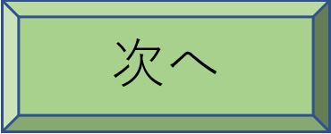

ご注意：当作品の著作権は作者に属し、コピ－や改竄などはお断りします。
第三章 真貴 幼年期
夏の墓参
長寿を全うすれば誰も諦めが付くが、若い人の、それも 非業 の死は周囲の人にとって不憫なものだ。多くの人と密接に結び付いていた糸が切れては、影響は大きい。それは勤めている会社の働き手が失われること、家庭が経済的に困窮すること、家庭の仕事や育児ができなくなるなど様々だ。恵理の場合は武を下支えする専業主婦のつもりでいたので、表面上は家庭内での影響であっても、教会を訪れる人たちにとって精神的な損失は甚大だった。
亡くなって三日後、悲しみに満ちた恵理の葬儀がしめやかに執り行われた。愛情を込めて育てた則正、泰子は勿論のこと、葬儀に参列した武の両親も、息子を献身的に支えてくれた恵理の死を残念に思い、涙を止め切れずにいた。せっかく元気な赤ちゃんを産んだ妻が、子供の顔を数えられる回数見ただけで別れを告げるとは、息子に降りかかった災難に二人は同情しきりである。兄夫婦の洋一と千秋も今後赤ん坊を抱えて生活する武の心痛を察し、慰めの言葉に苦慮した。
音楽事務所の関係者や弦楽四重奏団の益美肇、高子夫妻、二台のピアノによる演奏や連弾を行っている坂本幹夫などの演奏仲間たちも参列し、佐久間武を復活させてくれた恵理が身代わりとなったかのような悲しい運命に呆然としている。こんな状況では武が悲嘆に暮れ、入院生活のときの心理状態にまた落ち込む、と誰もが危惧の念を抱いた。それと、あの輝かしい武の演奏表現が、暗い湿っぽいものに退化することも頭の中に浮かんだ。
恵理が看護婦として勤務していた病院の婦長や看護婦たちも、悲痛な顔をして恵理の遺体を見送った。彼女たちには、自分たちの病院で恵理の生命を失わせてしまった、という大きな悔恨がある。結婚披露宴のときに「産むときはうちの病院でお願いね」と頼んでいた看護婦の小坂は責任を感じ、大泣きしている。同僚の山口や谷本が「あなたのせいじゃない」と言い、しきりに慰めていた。
葬儀後に必要な役所関係の手続きやら関係者への挨拶があり、いくつかあった演奏会を延期してもらった武は、しばらく家にいた。死後数日では少し外出して戻ったとき、部屋に飾っておいた恵理の写真を見ると「お帰りなさい」という声が耳の奥で流れ、妻が亡くなったことを忘れてしまう。生存中の恵理の印象は、惜別の情というものを追いやるほど強烈であり、今も鮮明に武の網膜に恵理の姿が浮かぶ。
こんな感傷を脱却しようと奮起し、一週間もしたころ、武は避けていたピアノの鍵盤蓋を開けてようやく練習を再開した。しばらく休んでいた割には指が動くし、楽譜も覚えている。ところが、横に恵理がいる錯覚に陥り、集中度に欠ける。
そんな不安定な心境において、過去の悲しみを中和させてくれるものがあった。それは亡くなった者の代わりに登場した新しい生命体である。武は面倒を見てくれている実家の春子の所に行っては、真貴の様子を 窺 う。毎日朝から晩まで接している春子に対し、二、三日おきにしか会わない父親の顔を見ると、真貴はすました顔をする。にっこり笑ってくれたら満点だが、お客様に接する顔では六十点かな？でも、泣きだすよりはずっと良いし、少なくともいじめる敵とは見なしていない様子だ。武は八十点まで採点を上方修正した。
製作を依頼していた墓が完成し、きょうそこに眠っている恵理の前に武、則正、泰子が墓参に訪れた。慣習に従い黒い礼服だった葬儀に対し、この日はいくらか明るく振る舞おうと、みんなは彩りを押さえながらも明度の高い服装としている。
武の両腕の中にはずいぶん大きくなった真貴が、ピンクの衣に包まれて大人しく収まっていた。春子に抱かれることが多い真貴は、武に抱かれてももう平気であり、父として認めることができる。物もはっきり見え、嬉しいと笑顔、不満のときは渋い顔に取れる表情となる。
七月中旬はまだうっとうしい雨と、成長著しい葉の責め合いが続く。バシャバシャという激しい音を立てて降り続いた後には、豪快な夏の晴れ間の中に木々の深い緑の葉が白く輝き、喜んだ次の日にまた大雨となるという繰り返しだ。日傘と雨傘が交互に活躍する目まぐるしい時期である。
そんな気候の上昇傾向に合わせて早番の蝉がジージーと鳴き始め、めっきり増えてきた小虫を捕獲するべく、待機型の蜘蛛は枝と枝の間を行き来して精力的に網を張っていた。そこには、夏の間にできる限りの栄養を摂取しよう、というエネルギーが籠もっている。
梅雨 の中休みにふさわしいすかっとした天候になったきょうは上空に青空が広がり、その中に白い雲が浮かんでいた。真夏の入道雲には早すぎるその雲は、突きたての餅をちぎったふんわり感があり、軽く浮いて気持ちよさそうに大地を見下ろしている。天国にいる恵理はあの雲を真貴と思って抱いているのだろうか？地上で今の武は、上空の雲に似たふっくらとした真貴を抱いている。
その雲が西から東へとゆっくりと流れ、ときには通り道となっている太陽を隠す意地悪もする。そのとき輝いていた緑の葉が、一瞬本来の深い緑色に戻った。日差しを楽しんでいる人に非難を浴びせられるのを避けるべく、悪役の雲は短時間で覆いを解く。迷惑を最小限にさせようとするその心がけは見上げたもので、雲を 睨 み付ける者はいない。
美保と過ごしたのがファーストライフ、恵理と過ごしたのがセカンドライフだとすると、この真貴を育てながら暮らすのが武にとってのサードライフになる。その生活がこれから始まろうとしている。
墓の種類も時代とともに多様化し、日本式の位牌型のもの、西洋式の背の低いもの、球形のものなど様々だ。最近は個性的というか型破りというか、昔製作したら袋叩きに合う墓もある。例えば、サッカーが好きだった者は丸いサッカーボールを、スキーが好きだった者は長いスキーを 象 った墓という具合だ。恵理の墓は十字架に似た形の白い石でできており、清らかで優しい恵理の人柄そのものである。
墓が何であり、どういう意味なのか、それどころか、親とは祖父母とは何なのか定義があやふやの真貴は、周囲に多くある石の塊を見せられてきょとんとしている。その顔は「あれなーに？」と尋ねているようにも見える。説明してやってもよいが、今は自分の声がうるさい音に取られるだけだ。
硬い石に囲まれているにもかかわらず、真貴が結構ご機嫌だということは、霊になった恵理の語りかけに耳を傾けている、と武は発想を飛躍させた。物理的な遺骨を収納する墓に、死者の霊がはたして存在するであろうか？キリスト教などの宗教に関する書物や絵画には、いろいろな霊が記録されているものがある。残念ながら現在において霊の存在を実証できた者はいない。
墓を見つめていると恵理の魂が墓を抜け出し、目の前に来て自分の魂と握手するように武は感じた。そうなると、もう一人とも握手させたい。武は真貴の手を恵理の墓の方に出して報告する。
「恵理、真貴はこんなに元気だよ」
すると真貴がにっこり笑った。この墓の中で眠っている恵理が真貴を見て起き、語りかけたのか？この子はその恵理の霊を感じ取り、笑顔の挨拶をしたのか？もしそうだとしたら、この子はすごい能力を持っていることになる。恵理も「イエス様の声が聞こえたことがある」と言っていた。「 栴檀 は双葉より 芳 し」とはこのことと思い、武は早速自分の子供を自慢したくなった。
則正と泰子もそれぞれの思いを呟き、墓に向かって祈った。たった一人の子供を失ったことは、人生における激震であった。これがイエスの決定となれば、従うのがクリスチャンだ。せめて恵理が天国で安らかに眠って欲しい、と二人は願う。
祈り終わった武が恵理の両親の方を向き、慰安室での後悔をここでもする。
「お父さん、お母さん。恵理さんを早死にさせて申し訳ありません。もし自分がいなければ、恵理さんは長生きできたでしょう」
この男はせいいっぱい娘を愛してくれた、と則正は武を評価している。短命に終わった恵理だって、武に出会ったことを天国で喜んでいるだろう。あくまでも恵理の死を運命とする則正は、手を押し出した。
「武さん、あなたのせいではありません」
結婚してからも「武さんは芸術家としても、人間としてもすばらしい人よ」と泰子は恵理に言われた。何だ、お 惚気 か、と当時則正は思っていたが、一年ほど付き合ってみると、それは真実だった。泰子も則正と同じ思いである。
「そうですとも。あなたがいたからこそ、恵理は最高の幸せを得られたんです」
結婚一年未満の娘を失った両親は、その夫を憎むか「あなたとは縁が悪かった」と 罵 るであろう。もっとひどい場合は、その後会うことさえ禁ずる者もいる。早すぎる恵理の死の責任をずっと感じていた武は、二人に慰めてもらい気が楽になった。
勿論恵理との出会いがなければ恵理が描いていたように独身を貫き、父母を大切にしながら長い人生を歩めたはずだ。この論理では、自分とこの子が恵理の命を奪ったことになる。これはかなり乱暴な考え方であり、真貴は無罪だ。恵理だって、欲しい、と願って作った子だ。
恵理が死んだのも、真貴が生まれたのも明らかな事実である。墓ができて真貴を引き取ったからには以後供養をして恩に報い、真貴と共に前進するのみだ。こう心に決めた武は、則正と泰子にきっぱり宣言する。
「この真貴をできる限り自分の手で育てます。男手では真貴が不自由するけど、お父さんやお母さん、それに、うちの実家の助けを借りて、真貴を恵理のように育て上げたいんです」
真貴は則正と泰子にとって、ただ一人のかわいい孫になる。しかも、ごく近い所に住み、親近感は大きい。武の心意気を感じた泰子が、優しく言葉をかけてくれた。
「わたしたちもできる限り手を尽くしますので、遠慮せずに相談してくださいね」
泰子の負担を軽減したい則正も、協力的な姿勢である。
「演奏会で忙しいときなんか、特にそうだな」
これからお世話になる二人に、真貴の頭をお辞儀させる形を武は作った。
「ありがとうございます。よろしくお願いします」
強力な援軍を得た武は、再度墓の方を向いて恵理に訴える。
「恵理、あのー・・・・・・真貴を恵理だと思って育てることにした。お父さんとお母さんが育てた恵理は、聖女になった。自分が育てる真貴は、どんな女性になるかな？失敗しても笑わないでよ。・・・・・・天国での応援、よろしく！」
武の宣言をまだ 解 せない真貴が、武の腕の中で手を数回振った。そのしぐさは「お父さん、よろしく。お母さん、わたし、頑張るからね」と言っているようだった。武は真貴の小さな手をしっかり握り、恵理の墓に見せた。
母の胎内から産まれた子、その子を育てる役目が、本格的に父親へ引き継がれた儀式である。真貴はその意味が理解できたのであろうか、三人に囲まれて相変わらずご機嫌な顔をしていた。さあこれから武の悪戦苦闘の、しかし、楽しい子育てが始まることになる
パパ初め
育児をしていてくれた実家の春子から墓参の日に真貴を引き取った武は、自宅に戻るといよいよ実質的な育児に取りかかった。恵理の死後、しばらく演奏会を空けている武は、これを機会にしっかり真貴の扱いを覚えよう、と意気込んでいる。これはピアノの練習方法と同じだ。簡単な曲を手始めに、徐々に高度な技法の曲へと移る。基本を積み重ねることによって、上達するというものだ。
「自分で育てる」と宣言した武は、早速手厳しい試練を受けた。墓参の際に大人しかった真貴が、ベビーベッドで寝ていた間はよいとして、目覚めて突如泣きだしたのだ。新米パパでもこれはわかる。小さいかわいい兎の人形が描かれた布団をどかし、更に真貴の服も捲る。案の定おしめが濡れていた。
大の男がこんなことをするとは情けない、と武は男女平等を否定する昔の時代の考えになりもした。そんな威張りくさった態度を取っていては、真貴の成長が遅れる。真貴と接しているときはママ役に徹するべきであり、決心したからには泣き言は抑圧だ。気持ちを切り替え、武は不慣れな仕事に挑戦する。
たどたどしい手付きで真貴の両足を持ち上げておしめを引くと、湿っぽさが解消された真貴が泣きやんだ。どうやら感は当たったものの、その後の処置がまずい。手をいきなり離したため、お尻に衝撃を受けた真貴がまた泣いた。
「ごめん！痛かったか？」
反省した武は丁寧に持ち上げて新しいおしめを入れ、下ろす際もそっと行った。
おしめを替えてもらい、心地よくなった真貴はしばらく眠った。このままずっと眠ってくれたらいい、と親が思うのは甘い考えで、目が覚めた真貴が再度泣きだした。今度はミルクと推測する武は、春子が用意してくれ、墓まで持ち歩いた哺乳ビンをお湯で温めて宛がった。それを真貴は拒否する。またおしっこか？選択肢が限られている武は服を脱がし、おしめの中を見た。少量のうんちである。ミルクだけ飲む赤ちゃんが大便をするとは、意外であった。
「何と非効率的なことだ。先ほどおしめを交換する前に一緒にしてくれたらよいのに」
と言って武は真貴を責める。すると武の耳に天国の恵理の声が聞こえた。
「あなた、それは大人の勝手の論理よ。真貴の成長が早い証拠で、良いことなの」
なるほど、赤ちゃんは無罪、排泄は自然の成り行きか。それにしても面倒くさい。 雛 が 孵 るまで何日もじっと卵を暖め続ける親鳥はいるが、子鳥の糞の始末までする動物はいるだろうか？待てよ、それを放っておけば、本人も近くにいる人も悪臭に 曝 される。さっさと始末することは、清潔を重んじる人間の優れた習性だ。こう発想を転換すると、続いたおしめの交換も平気になり、機嫌を取り直した武は真貴のお尻をポンと叩いた。
「真貴、何回やってもいいぞ！」
これは入院中の武に恵理が言ったことでもあった。
それで済めばぼやきは収まるものだが苦戦は続き、またまた真貴が泣いた。ミルクもおしめも既にクリアしている。次は何だろう？
言葉を話すことも、こちらの言葉を理解することも当分先となる赤ん坊は、泣くとエンドレスとなり、母親以外の者が扱うには骨が折れる。同じ沈んだ曲想の音楽でも哀愁を帯びたうら悲しい曲なのか、悲痛な重苦しい曲なのかはわかる。ならば泣き声を分析して真貴の訴えを理解すればよい。残念ながら基礎となるデータベースの蓄積は、この日がやっとスタートでは皆無で、真貴のメッセージは武にとってちんぷんかんぷんだった。
「うーん、何を望んでるんだ！」
可能性のある手だてが品切れとなった武は、自分の頭を手で何回も打った。真貴を自分が育てる決断は我ながら立派だった、と威張ったものの、すぐに「どえらいことを引き受けた」と呟いて後悔する。男手一つで赤ん坊を育てるのは、難曲の協奏曲を弾きこなすより難しい。恵理の親のように心を鬼にして子を捨てるとか、子供が欲しい人に養子にやる、という逃避的な考えもちらりと武の頭に浮かぶ。
初日早々諦めては誓ったことが破約となり「そんな軟弱なパパなの？」と墓の中の恵理に嘲笑されるだろう。世の中の母親はこれを克服して子供を育てた。しかも、二人も、三人も、それ以上の子を育てた人もいる。現に自分の父方の祖母は、七人も子供を産み育てた。
自分ではだめだ、解決方法をノウハウのある人に頼ろう、と思い付き、武は実家の母に電話をした。
「墓参から帰った真貴が泣きどおしなんだけど、何かな？・・・・・・ミルクも飲んだし、おしめも替えてる」
武たち二人の子供を育て上げたうえ、朝、武に渡すまで真貴を育てた実績のある春子はぴんときた。
「きょうすごく天気が良くて暑かった。もしかして、汗かいてるかも」
早速武は真貴の服を捲り、下着に触ってみた。雨に打たれたかのように上半身の部分が湿っている。
「汗で下着がびっしょりだ！」
武が部屋の隅にある引き出しを開け、下着を取り出して替えてやったら真貴が泣きやんだ。
「ふーっ、さすが経験者だ！」
手で額に滲み出た汗を拭いた武は、母の洞察力に舌を巻いた。これが経験の差だ。こうもアドバイスが有効とならば、少なくても真貴が成長するまでは母に生きていてもらいたいものだ。
気持ちよくなった真貴は、きのうまでの部屋やベッドなどの環境が変化していることに目をぱちくりとさせた後、目を閉じた。長いこと外にいて疲れた真貴は、今度は安らかに眠り続けた。こうして波乱に富んだ子育ての初日が何とか終了した。
二日後にはこんなこともあった。梅雨期が終わりに近づき、暑い日が続いている。薄い生地の半袖の武に対し、赤ちゃんを冷やすことを嫌って三枚も重ねて着せていた真貴の顔に 汗疹 ができた。皮膚が敏感な赤ちゃんは、ちょっとした気温や湿度の変化でいろいろの症状を発生する。高が汗疹といって、軽視することは禁物だ。気持ち悪い症状は病気の仲間であり、皮膚のかゆみを気にしだすといらいらしてくる。
まずは医者に連れて行こう、と武は安直に考えた。新米パパでは「こんな小さなことで」と言われ、医者にばかにされる可能性がある。それはちょっと恥ずかしい。
義母に近い所に住んでいるメリットがあった。電話で相談した直後に、教会の泰子がすぐに飛んで来た。真貴の肌を見た泰子は、どうやらこれも経験がある模様で、佐藤の薬屋へ赴いてパウダーを買って来てくれた。縁側に寝かせた真貴の顔や上半身をタオルでよく拭き、その粉をスポンジに付ける。半袖となっている泰子の手が真貴の顔で軽快に上下し、パタパタという音とともに真貴に白い粉が塗られた。ちょうどおしろいで化粧をした真貴が、綺麗になっていくように武には見えた。
おかげで汗疹は数日後に消え、真貴の肌は元のとおりになった。やはり子供を育てた経験がものをいっており、武は義母の実績に感心した。心強い援軍が近くにいて、大助かりである。
気分が爽やかになった真貴は、パウダーよりそれを塗るときのパタパタという音が、かゆみを解消してくれた、と思っている。泰子おばあちゃんがしてくれたその音が聞けなくなったことは惜しい。あの音を聞くにはどうしたらいいのかな、と真貴は変なことを考えた。
何日かたった夜、いつものようにベビーベッドで真貴が、その横のベッドで武が寝ていた。夜何が起きるか余談を許さない状況では、当分赤ん坊のそばに付いてやる必要がある。父が近くにいることにより、真貴は安心して目を閉じていた。
武の睡眠が一番深くなる午前一時に、突如真貴が泣きだした。かわいい反面、やっかいな赤ん坊は泣くと手が付けられず、うるさいものだ。「泣くなら昼にしてくれ！」とどやしたくなる。壁の薄いアパート暮らしだったら、隣の部屋から苦情が寄せられる可能性もあり、さぞや 足枷 になることだろう。ここは一軒屋なので、その点は心配無用だ。
言葉による表現が遠い先であることは覚悟しているし、不満があるから泣くのは理解できる。それにしても、どうしてこんなにひどく泣くのか？お腹が空いたら口を開けるとか、おしめが濡れたときには腰を振るとかしてくれたらよいものを、ただ大声を上げていてはこちらが迷うばかりだ。自分もこの歳のころ、こんなに泣いたのかな？男の子の自分はもっと悠々としていた、と証人が不在なことを幸いに、武は都合よく考える。
泣き声は「ちゃんとした母親を呼んできて」という文句にも聞こえた。乳飲み子の真貴に、母親の記憶など消えているはずだ。では、自分が嫌いなのか、と思い、武は不安に陥った。無骨な男は、小さい子にとって怖い鬼に見えるものだ。赤ん坊の 癇癪 にいちいち腹を立てて怒鳴ったり叩いたりしては、かえって逆効果になることは武も知っている。ここは慎ましくして赤ん坊の機嫌を取るに限る。
泣きやむ条件は何か、と思慮を巡らせた武は照明を点灯し、例によって粉ミルクを哺乳ビンに入れてポットのお湯を注いだ。出来上がると、それを真貴の口に持っていった。これまではこういう世話にちゃんと見返りがあった。ミルクを飲ませたりおしめを替えたりしてやると、真貴は笑うように見える。頬にキスして抱き上げてやると、更にご機嫌になった。ということは、泣くのはあくまでも当人の生理的欲求を表現していただけで、真貴は自分が好きだ、と武は思う。だが、今回はどうもおかしい。おしめも見た。これも違う。
「いないいない」
と言って顔を横に向け、
「ばー」
と言って武はいきなり前を向く。指で自分の頬をつねってにらめっこもしてやった。逆効果だった。子守歌としてピアノの曲を聞かせようか、と発想を転換する。これは近所迷惑、深夜ではよした方が良い。
「うーん、わからん！」
何を言おうが、何をしようが泣き続ける。「この野郎！」と怒鳴るのは、あまりにも身勝手だ。今は立派な大人と威張っている自分も、産まれたころは同じ状態だった、と武は回顧し、先ほど仕立てた自己紹介を危ういものにする。
真夜中に泣く赤ん坊の声は、両手によるピアノの和音ほどもある大きな音だ。ピアノの曲の場合、フォルティシモが継続する時間は短いものだが、こちらのヒステリックな真貴の声は部屋の中で延々と響いた。例によってノウハウを持つ人に相談するのが早道になる。むー、真夜中に就寝中の実母や義母を起こしてまで電話することは、息子であってもどうかと思う。
困り果てた武は上を向き、天国の恵理に尋ねた。
「恵理、どうしたらいいんだ！」
返答の代わりに、恵理の姿が武の網膜にひょいと現れた。それをヒントに武は子育てとは無関係のことを思い出した。それは何と、お馴染みであるガマの油売りのパフォーマンスだ。侍の格好をした男が、口上を唱えながら刀で自分の腕を切り付けて出血させる、といっても、赤い線を巧妙に付けるのだが、その傷にガマの油を塗って効用を宣伝する。その薬の作り方がおもしろい。ガマの前に鏡を置くと、己の醜さに驚いたガマがたらたらと油汗を流す。それを集めてガマの油とするのだ。
真貴は醜いガマとは大いに異なるにせよ、今は聞き分けのない子、まあガマの親戚にしておこう。我が子を両生類に追いやった武は、恵理が使用していた部屋に行った。その部屋は恵理が亡くなった以後、装飾が少なくなり殺風景だ。それでも、恵理に関する物は、そのまま取っておいた。その中の縦が一メートル半、横が四十センチほどある懐かしい立ち鏡を持って来て真貴の横に置いた。
もう目がよく見える真貴は、自分に似た不思議なものが横にいることに興味を示した。それは同じ色の服を着ている。頭を回す。相手も回す、手を上げる。それも真似する。泣いているより、鏡を見る方がずっとおもしろい。
武は鏡の前に自分の顔を写し、頬に指を当てて言った。
「これ、パパ」
目がはっきり見えようになれば、逆に見えないと恐怖を覚える。その日は常夜灯が消えており、夜目が覚めた真貴は周りが真っ暗で泣いた。そばにいる頼りになる人も、暗闇では存在感なしだ。電灯が点灯されて物が見えた後も、真貴に一度発生した不安状態が続いていた。
最近十分認識できる人物が鏡の中にあり、同じ顔をした本物の人物もすぐそばにいるのがはっきり見えた。いつもミルクを飲ませてくれる優しい人が二人もいると寂しさは解消され、真貴は泣きやんだ。武は真貴の頬を指で軽くつつき、スキンシップを計る。「朝、散歩しようか」とか「もうじき寝返りがうてるぞ」とか言っているうちに、真貴は再び眠りに付いた。
犬や猫を家族同様に扱い、飼育している人が世界中で多く見られる。家の中に入れて一緒に生活するばかりか、旅行にも籠に入れたり乗用車に同乗させたりして連れて行く。確かに愛くるしい動物はかわいいし、そばにいると和んでくる。
歩行も決められた場所での排泄も、食事の摂取も自分でできない真貴は、全ての点で動物以下だ。そんな劣等な点が多い真貴は人間様、それも、自分の血と恵理の血を引いている。断然こっちの方がかわいい、と武は思い、真貴を動物と差別化した。
授乳
何日か経過し、ようやく 梅雨 が明けた。いやな雨とおさらばした後は、いきなり猛暑となる。太陽が昇るのは早く、空の高い位置を周回するので家の中は熱気に包まれている。気温の上昇に合わせて真貴の服は 綿 の半袖となり、布団として掛ける物も綿地のタオルケットに変化している。武は更にその上をいき、ランニングシャツ姿となっていた。
真貴は武に負んぶされての朝の散歩、皮膚のマッサージ、朝食と昼食のミルクの授乳、おしめの交換などをしてもらい、午後はベビーベッドで昼寝をした。部屋に設置してあるエアコンは体に変調を 来 すこともあり、暑い日は扇風機を多用している。近づけすぎて夏風邪を引くことを恐れ、遠くで首を振り回して風を当てる配慮は当然のことだ。その微風を受け、真貴が快く眠っていた。
一時間もすると、目が覚めた真貴が泣いた。困ったものだ、と悩むのは前のこと、父親の顔をしっかり覚えた真貴は、武の顔を見るとすぐに泣きやむし、もう夜泣きもやんだ。
顔の表情と断片的な発声により、武は真貴の訴えることがしだいに理解できるようになった。目を瞬きして声が細くなったときは寝かせて欲しい、ちょっと顔をしかめて唸る声のときは、おしめが濡れたので替えて欲しい、手で顔を拭うしぐさをするときは、汗をびっしょりかいたので下着を替えて欲しいと、育児のデータベースが構築されている。
警戒心を抱きやすい男親に、この子はよく 懐 いていてミルクをたくさん飲むし、遊んでやると笑い顔をいっぱい見せる。武はそれが何よりも嬉しい。真貴が懐いている理由は、この子の中に恵理がいる、と武は考えている。
泣いている赤ちゃんの不満の元は、この場合空腹であった。武が母親代わりの一番大切な仕事である授乳の準備をする。ミルクを温めて飲ませることくらい知っている父親は、いつもどおり粉ミルクが入っている哺乳ビンにお湯を注いで溶かし、それを真貴の口に持っていった。
その乳首を口に宛てがうや否や、お腹の空いている真貴によって強い力で吸われたミルクが、どっと口の中に流れ込んだものの、何を気にしてか、真貴は急にミルクを吐き出してヒステリックな声を上げた。しょっちゅう泣く真貴でも、こんな大きな声は初めてだ。泣いた理由がわからず武は当惑し、ミルクに毒が注入されたのではないか、と疑う。これは何年か前、大きな見出し付きの新聞で報道され、世の中の母親を 震撼 させた事件だった。今の場合はそれも飛躍しすぎだ。ミルクのメーカーが替わり、味も替わった、と自分を説得し、哺乳ビンの乳首を自分の口に入れてみた。
「あちっ！」
この日はお湯の温度が高すぎ、飲める限度を超える熱さだった。スプーンですり切りして分量をきちんと決めた粉ミルクを、武は哺乳ビンに入れた。そこへ熱湯を半分くらい注いでよく溶かし、更にお湯を追加して規定量に仕上げた。そこまでは完璧だった。最後の工程は人肌近くの温度にすることだ。
「ごめん！冷やすのを忘れた」
温度計をビンに差し込んで測定すれば正確になるだろう。それでは真貴が科学の実験台に載せられているようで抵抗がある。武は流し台に行き、ボールに水を貯めてミルクビンを浸した。数分後それを頬に当ててみる。この場合、温度計は武の皮膚だ。最適温度であることを確認して真貴に飲ませると、今度真貴はごくんごくんとリズムを刻んでおいしそうにミルクを飲んだ。武はほっと溜息をつくとともに、真貴の額を撫でてやる。
「いっぱい飲んで早く大きくなーれ。そしたら、ピアノ、教えてやるぞ！」
当人にこの言葉は難しすぎた。身近になった父を見つめ、真貴はただ適温となったミルクを勢いよく吸い続けた。今はピアノより、ミルクとおしっこの繰り返しの時期である。
風呂
真夏の八月になった。毎日三十度以上の気温、それに、高い湿度の日が続き、じっとしていると汗ばんでくる。朝起きるとシャツを替え、午後にも替えている真貴は夕方には汗びっしょりだ。こうなると、誰も水が欲しくなる。
近くにあるプールに連れて行ってやるには、もう数年年齢を増やす必要があるし、自宅にプールを作ってやるには費用がかかりすぎる。借家の狭い庭で武にできることは、超縮小版のプールを用意することだった。何のことはない、おもちゃ屋で購入した空気で膨らませて作るビニール製のプールを庭に広げた。
午後四時、そのプールの中で真貴は泳いだ、というより行水をした。真貴はすっぱだか、武は上半身裸で下は短パンツである。十五平米くらいの庭は狭く、隣の家の窓から 覗 かれる恐れもあるが、そんな気遣いは無用、来客の予定がない猛暑の日に水を扱うにはこの姿が最適だ。
空気よりもっと重い、しかも、ひやりとする流体物質の中に放り込まれると、赤ん坊は怖がるものだ。何と真貴はこの枠の中がお気に入りである。太陽の光を浴びての水浴びは涼しいし、すこぶる楽しい。すっかり慣れた様子でさかんに水の中で手足を動かし、真貴はあたかも人魚であるかのように水と 戯 れた。この動作では、過去どこかで水に親しんだことがあったのではないか？年齢制限のあるプールは入室禁止であるし、川で遊ぶには歩けることが条件だ。となると、恵理の母胎に住んでいた時代、そこに水分が多く入っていて泳げた、と武は強引な理由付けをした。
そこへ最初の夏を真貴が乗り切れるかどうか案じている則正と泰子が、様子を見に来た。上半身裸姿で困った武は、
「今、着替えます」
と言い、そばに置いていたシャツを取ろうとする。
「そのままでいいですよ」
と泰子が言ってくれたので、武は裸のまま真貴に行水をさせた。
庭に入った則正と泰子は、興味深げに真貴の動作を見た。恵理に行水をさせたときには、少し怖がってビニール製のプールの端を掴んでいた。はたして水の中で真貴はどんなことをするか？則正と泰子をもうしっかり覚えている真貴は、二人に得意のパフォーマンスを披露する。
上から水を叩くと、バシャバシャと水しぶきが上がる。
下から掬い上げると、ふわっと水が浮く。
水に手を入れて回すと、すーっと流れができる。
体を上下させると、ざわざわと波が立つ。
おもしろい！ベビーベッドや椅子は、動かすには重すぎる。この水は自分の手の動きにより、どうにもなる。飛ばすことも回すことも自由自在で、自分が偉くなった気分になれる。
狭い容器の中で泳いでいる真貴を見た則正と泰子は、この元気な様子ではどうやら真っ盛りの夏を克服できる、と思い、ほっとした。
「まあ、よく水を掻くこと」
と言って泰子が真貴の手の動きに感心すると、
「真貴はこれが得意なんです」
と言って武が紹介する。
「果ては水泳の選手かな？」
と言って則正は期待をかける。
「もしかすると」
と言って武は真貴にクロールの手の動作をさせた。
水に浸かって汗を流した後は、乾いた下着を着る。この前まで着ていた下着はもう窮屈になり、実家の父、勉が送ってくれた新しい物にした。一日で数センチも伸びるつる性の朝顔や葡萄には負けるとして、一週間で一センチくらい成長しているすごいスピードに、武も他の者たちも驚異の目を向けている。
行水の後は定食であるミルクを飲む。汗が取れてさっぱりした真貴はお腹が空き、ミルクがたっぷり入る。肌も胃袋も満足した真貴は、以後暑い中でも平気であった。
夜にはすっかり身内の人とわかった父親に抱かれ、真貴はこれまた好きな風呂に入る。裸同士で付き合う風呂は、もっとも真貴とスキンシップが図れる場所だ。いずれ恥ずかしくなって一人で入るまでの十年間は一緒と、風呂好きの武は読んでいる。
もともとピンク色の肌の赤ちゃんが湯に浸かると、いっそう赤くなった。健康で肌艶も良く、前に恵理に言ったとおり、本当に生きがいい姿だ。こうしてぽかぽかと芯まで温まった真貴の気分は上々になる。
生後一か月ころの真貴はふっくらとした体をしており、抱いているとゴム毬のように武は感じた。また、手も足も縮めていた姿は、止まっている蛙に見えた。手足が伸びていくにしたがって徐々に泳ぐ蛙の姿に変身し、きょうは立派なスイマーと思ってよい。ただし支えは必要であるが。
ビニールのプールより深いバスタブが本物のプールに見えたのか、真貴はババーとかブブとか言って手でお湯を掻き回し、歩き始める前に水泳をしたい、と要求している。その言葉の真意は不明として、快くて発した言葉であることは武も理解できた。でも、ここで手を離しては溺死だ。自力で泳ぐのは当分先とする。
ご機嫌な武が陽気に口笛を吹き始めた。曲は「トロイメライ」である。無伴奏の旋律は、殺風景な狭い風呂場をコンサートホールに早替わりさせた。もっとも空間が小さすぎて、残響効果がわずかなのは惜しい。それも小さい家ではがまんすることになった。
目を 弛 ませた真貴は、口笛をいかにも快く聞いている、と武は都合よく解釈した。事実真貴が集中して武の唇を見ていることは確かだ。目がはっきり見える時期に、耳も十分役目を果たすことは想像が付く。真貴は音楽家の子、小さくして名曲が理解できることは当然なことだ。これも武の勝手な推量であった。
調子に乗りすぎは禁物で、抱きかかえている武の手の位置が下がり、真貴の顎が湯の中に沈んだ。浮かれている武はそれに気付かず、口が水面に達したときに突然真貴がぶーっとお湯を吐いたので、びっくり仰天した武がようやく腕を上げた。危うく真貴を溺死させるという、またまた失敗の日であった。
水平の抱え方は危険と判断した武は試行錯誤の結果、真貴を垂直にして風呂に浸けた。この極端な姿勢のおかげで、溺れる危険が解消できるとともに、横の壁に貼り付けてある魅力的な物が描かれたシートに真貴の視線が向けられた。あれは何だろう？真貴はそれを見続ける。丸とも四角とも異なるこの図形は、きょう遊んだ三角形の積み木の一種かな、と想像するのが精一杯だ。無地の天井より良いことは、認めてくれたが。
「いつか一緒にあの山に登ろうな」
と武がシートに描かれた富士山を指差して言うと、それが山なのか海なのか認識不可能な真貴は、ババババーと叫んで賛成とも反対とも取れる答をした。
揺り籠
ピアノの横には帆掛け船の形をした揺り籠が置いてあり、その中で真貴が少し横を向いた姿勢ですやすやと昼寝をしていた。目は軽く閉じられ、寝息の音は超高感度のマイクロホンでも集音不可能なくらい小さいため、まるで死んだような眠り方だ。それは真貴に失礼な言い方で、真貴は生まれたばかり、少ない肺活量ながら元気に生きている。
全てが静止している中で、動いているものもあった。胸の上に掛けたタオルケットが小さな肺の鼓動に同期し、わずかに上下している。これこそ生きている証拠だ。
首を伸ばした武が、真貴の顔を 覗 き込んだ。大人は何かの悩みや先の計画があり、睡眠中も気になることがある。それに対して憂いも急ぐことも全くない赤ちゃんの寝顔は、本当に安らかだ。その顔をずっと見ていたり、タオルケットの上下に自分の呼吸を合わせたりすると、こちらも緊張が解けて安息が訪れる。
「この子の寝顔は精神安定剤だ」
と武は呟いた。
何の夢を見ているのかな？武が揺り籠をやや大きく引いてから離した。地震の発生による不気味な揺れや物にぶち当たったときの鋭い衝撃は困りものだが、このゆったりとした周期的な揺動は、誰でも経験しているブランコに乗っているようで快い。
ゆらりゆらりと揺り籠が、円弧軌道を描く。
キューキューと 軋 む音が、定期的に発する。
真貴が見る夢のページが、揺り籠の一往復ごとに捲られる。
このままずっと真貴の顔を見ていたい武には、ピアニストとしての練習という仕事がある。大音量を発しての演奏では真貴が驚いて目を覚ますので、愛らしい子守歌的な曲を選んだ。これなら夢の中で真貴が聞いてくれるだろう。それは次回のコンサートで演奏することになっているモーツァルトの「ピアノ協奏曲 第二十番」の中の第二楽章だ。
時計の振り子となって運動を始めた籠に合わせ、武がピアノを弾いた。オーケストラの伴奏がないと弾きにくいのではないか？幸いなことにこの日は、揺り籠がメトロノームの役割を果たしてくれた。長調の曲が多いモーツァルトの作品にあって、珍しく短調で書かれたのが第二十番だ。その第二楽章は劇的な第一、第三楽章と対照的な長調による愛らしい曲想を持つ。「この楽章の冒頭部分は、あんたが赤ん坊のころ子守歌代わりとしてピアノで弾いたり、口ずさんだりしたのよ」と母の春子が言っていた。以前自分もこの曲を演奏会で弾いた際には、母の音楽を聞いているつもりで演奏した。全く逆の立場になったきょうは、ゆったりと刻むこのフレーズが最適の子守歌と武は思っている。
子守歌は子供を寝かせるための歌か、それとも子供に聴かせて楽しませるための歌か？前者ならあまり良い曲では聴きほれて眠るどころではないため、難解な書物を読んでいるときに眠けを催すと同様、無調の現代音楽の方が適する、という変な論理が生まれる。後者の場合とすると「眠れ眠れ」や「眠れ良い子よ」の歌詞はおかしい。眠ってしまったら、楽しさを感じるどころではない。もっとも夢の中で感じる、ということもあるが。
どちらにせよ既に眠っている子に演奏してやれば、子守歌というより安眠歌である。武にとっては愛らしい曲想、稚児にとってはわかりにくい曲にもかかわらず、籠に揺られる真貴は夢の中で快く感じていた。
「赤ん坊がクラシック音楽を聴いて安らかに眠り続けるとは、この子は将来自分のようなピアニストになれる」
と言い鼻を高くした武は、 天真爛漫 な曲を調子に乗って弾いていく。
奢 りと眠りは短時間で、快い眠りから目覚めた真貴が泣きだした。自分のピアノの音がうるさいのではなく、お腹が空いたのだ、と一方的に判断した武が、ミルクのビンを真貴の口に宛がうと、真貴は飲み物を拒んだ。また温度調整に失敗した、と早合点した武は、ミルクのビンを頬に当ててみた。最適な温度である。どうやら真貴の不満は別のところにあった。
「おかしい、何かな？」
そうとならば武は他の原因を考える。
「おしめか」
そのくらいはもう見当がつく。ママ的パパと自称する武は、慣れた手付きで真貴の服を丁寧に捲り、おしめの中を見た。
「乾いてる。はて、何だ？」
母親代わりも板に付いてきている武は、二つの当てが外れればこれとばかりに真貴を抱き上げた。
「わかってるぞ！」
真貴の片手を持ち、
「おいっちに、さんし」
とかけ声を発して武は振ってやる。また、真貴を両腕で囲むことによって抱え、自分を軸として振り回した。小さい体がメリーゴーラウンドとなって大きく回転すると、真貴は半分怖そうな、半分嬉しそうな顔をして、きゃあきゃあ、きゃあきゃあと声を出す。この遊びは真貴の大好きなヘリコプターである。真貴が泣いたのは、父に遊んでもらいたかったためであった。
それが終わると、目の回った真貴の頬に武は自分の頬を擦り付けた。朝剃っている髭も、午後ともなるといくらか生えてきている。そのブラシで柔らかい皮膚を荒っぽく刺激されてはたまらない。真貴は泣いた、それも前の話、今はそのくすぐりがおもしろい。父が毎日してくれる胸、背中、腕の寒風摩擦の類いと真貴は捉え、またきゃあきゃあ、きゃあきゃあと声を出して笑った。こうした風呂以外でのスキンシップにより、真貴は父親の愛情を感じるようになった。
産まれたばかりのころは顔がくしゃくしゃで、何をしようが泣いてばかりいた。最近は自分が味方だと認識すると、真貴の態度が変化してきた。父娘という血筋の繋がりや、恵理の子であるという義務感で、男一人の子育てという茨の道に足を踏み入れたのが武だ。その義務感とやらは、現在幸福感に様変わりしている。遊んでやったり、ミルクを飲ませたり、おしめを取り替えたりしたときに真貴の見せる喜びの顔が、岩の割れ目から地下水が湧くように滲み出てきた父親の娘に対する愛情の代償だった。
養子の話
真貴がミルクから離乳食に替わった生後五か月の時期に、武は坂本幹夫というピアニストと連弾のミニリサイタルを行うことになっていた。同じ音楽事務所に所属する幹夫は、年齢が武と同じであるため冗談が言い合える仲間だ。型に填まった演奏では活動が限られる幹夫は、連弾の低音部を弾くとしっかり曲を支えてくれる。人それなりに長所はあるもので、武にとっては貴重な存在であった。
長身でがっしりした体格はいかにもベース向きとなっており、口と鼻との間、それと顎に髭を生やした風貌は野生的な感じがする。学生時代は剣道をやっていたという、音楽家には珍しい武術愛好家でもある。体格や顔の迫力に似合わず人柄は素朴で、約束をしっかり守る信頼できる人物だ。
幹夫にはピアノを少したしなめるいすずという妻がいた。幹夫がいすずを好きになった理由は活発さにある。とにかくよく動く。家事はもとより、幹夫が働きやすいように楽譜の整理やらスケジュールの管理を行い、マネージャーの役目を果たす。ぽっちゃりとしたかわいいタイプで顔は異なるものの、どこか美保の行動パターンに似ている、と武はいすずの性格を把握していた。
大学を卒業した年に結婚をしている幹夫といすずは、もう五年ほど夫婦生活を続けていることになり、一方は音楽家、他方はＯＬとして働いた。経済学部出身のいすずの勤務先は、証券会社だった。顧客の事務的な管理を手始めに、株価や経済環境のトレンドを整理するとともに、上司が株価の予測をする資料を集める業務を担当した。残業が多い忙しい日々が続き、共稼ぎとなっていたこともあって、二人とも子供は当分先のことと考えていた。
欲しくないときにはできるもの、つまり、結婚直後避妊に失敗し、いすずは一度堕胎している。その後慎重に行動し、〝子供〟という話は葬られた。年齢を重ねれば考えが変わり、退職して専業主婦になった三十代に手が届くころに、子供が欲しい、といすずは熱望するようになった。同窓生が赤ちゃんにおっぱいを飲ませたり、背中に負んぶしたりする姿を見た際には「似合うわよ」と声をかけてやったものだ。その賛辞を今度は自分にもらいたい。
欲しいときには努力が妊娠に繋がらず、望みと現実は反対になった。深夜のテレビ放送を見るのをやめ、いすずが早めに布団の中に入って夫と抱き合っても、毎月の生理はきちんとある。そうなると、堕胎したことにより不妊症の体に変化した、といすずは勝手に決め込み、自信を失った。
武に一歳未満の子供がいることも、その母親が亡くなったこともいすずは知っていた。現に恵理の葬式に夫婦揃って参列し、赤ちゃんを抱いた武の姿を見ている。また、幹夫は時々武がぼやく苦労話も覚えており、子育てはどうやら重荷になっている、と推察した。
武の所有するピアノがリサイタル会場のピアノと同種であることにより、これまで幹夫との連弾の練習は、いつも武の家で行われた。ことしは家に小さい真貴がおり、赤ちゃんを放っての親の外出は無責任となるので「従来どおりうちでやろう」と武は幹夫に呼びかけるつもりでいた。
武との練習の前に、幹夫はいすずとある相談をしていた。それも一か月も前に、である。ある日幹夫が武にその結果を持ちかける。
「たまにはうちで練習をやろうよ」
「真貴がいるので、いつもの自分のうちがいいんだけど」
と武は事情を説明する。
「うちのかみさん、今専業主婦だ。真貴ちゃんを見ててあげる」
と執拗に幹夫は迫った。一歳未満の子供を預けて大丈夫か、と子育てが未経験の者に武は懐疑する。仮に幹夫の所で練習するにしても、慣れている教会のおばあちゃんに真貴を預かってもらう方がずっと良い。そう考えていると、その後も幹夫は何回も真貴を連れて来るよう武に頼んだ。なぜだろう、と思いながら、あまりの熱心な幹夫の依頼に屈し、武は真貴を伴うことを了承した。
水沢の祖父母の家は目の先であった。片手でひょいと抱いて一投足もすると着いてしまう距離は、同じ敷地内の離れの棟に行く、といった感じだった。また何か困ったことがあると泰子がすぐに来てくれるので、恵理の両親の近くに居を構えてよかった、と、武はつくづく思う。
実家に行くこともよくある。そのときは、武の父である勉が自家用車で送り迎えをしてくれた。武が駅の階段やプラットホームで赤ん坊を落としては一大事、と案じる心配性の春子が提案した策である。したがって、真貴が電車に乗ることは初めてだった。
首が据わるまで、親は赤ん坊の外出を 躊躇 するものだ。武が真貴を春子から引き取った日、肩と腰に腕を掛けて持ち上げたとき、首ががくっと垂れ下がって真貴は苦しそうだった。プラットホームの階段を踏む度に振動が加わり、真貴の首にストレスがかかっては困る。幸いこの時期には首が据わり、真貴と共に外出することが可能になった。ニ駅分西側に位置している幹夫の家に短時間で行けることも、了承した理由の一つだ。
当日真貴に肌色の服を着せ、白い衣に入れた真貴を胸の前に抱いて武は幹夫の家へ出かけた。武は最近購入したばかりの濃い緑色のシャツと、焦げ茶色のブレザーを着込んだ。赤ん坊を運ぶにはもっと活動的な服装が良いことは確かだが、よその家にお邪魔するとなれば、親しき仲にも礼儀は必要と気を配り、武は服装を選んだ。
男が赤ん坊を抱える姿を人に見られるのは、昔は恥ずかしいことだった。男女同権の時代になった現在では、少しの恥ずかしさは何とか 凌 げる。この格好では「佐久間さーん、サインお願いします！」と声が飛ぶことはなく、短時間で目的地まで達するだろう。
改札口を通るときも到着した電車に乗り込むときも、家の中とは異なる人の多さと慌ただしさに真貴は驚いた。ガタンゴトンと音を立てて電車が発車したとき、大きく体が傾いた真貴は、目をぱちくりさせた。また、真貴は窓の外に目を見張った。静止している周りの景色が流れるように動くのだ。じっくり見ようとすると、すぐに物が逃げてしまう。祖父の自家用車に乗せてもらうとき真貴は座席に寝ており、外の景色がドアに遮られていた。今回は武の胸というやや高いの位置にあり、窓越しに移り替わる街並みがよく見える。真貴にとってこの外界は、すこぶる新鮮に感じられた。
そんな興奮状態では、途中の駅で乗客が乗り降りする騒々しさで泣きだすだろう、という悪い方の予測に反し、真貴は武の胸の前で大人しくしていた。こうも景色が目まぐるしく移り変り、いろんな人が動くと泣いている暇などない。この分でいけば、坂本宅に着いた後も良い子でいられる、と親は予想する。
幹夫の家に入ると、待っていたいすずがすぐに両手を出して真貴を引き取った。赤ちゃんの視力が弱いことを知っているいすずは、思いっきり明るい黄色の服を着て相手がよく見えるよう計っていた。配慮は他にもあった。夫婦二人の家にある玩具といえばテレビゲームくらいなので、いすずは近所の家からガラガラや叩くと音を発するおもちゃを借りてきて、広いリビングルームで真貴と遊んでやる。
パパはいつもいっぱい遊んでくれた。そこは色の付いた絵が動いて見える不思議なものがある部屋とか、何やら音を出す大きな物がある部屋だった。外では芝生の生えた庭とか、ブランコや砂場のある広い公園だった。この初めての場所で初めて見るきょう遊んでくれる人の声はパパより高く、顔の種類も違うけど優しそうだ。
あやし方がうまく、呼吸が合うのか、人見知りという拒絶反応を忘れた真貴は、すっかり 懐 いたいすずと遊びに興じた。さすが女性、子供をあやす天性の素質に武は感心する。証券会社という堅い仕事をしていたいすずは、普段むっつりした顔をしている。むしろ聴いてくれた聴衆ににこやかにお礼の挨拶をする夫の方が、社交的に見える。それが真貴を預かった途端に、いすずの態度ががらりと変わった。体を擦り合ったり、押し合ったりして真貴と 戯 れる。頬を緩めて語りかけ、歯を出しては笑う。どうやら子供に接する場面では、女は別の顔を見せるようだ。
真貴が楽しく遊んでいる姿を確認した武は、幹夫とピアノの連弾の練習をするため別室に向かった。幹夫の家の敷地面積は広いうえ練習室もゆったりしており、ピアノに押し潰される威圧感というものがない。これは羨ましい限りで、自分もいつかこんな家を持ちたいものだ、と思い、武は奮起した。
二人とも上着を脱ぎ、フルコンサート用のグランドピアノの前に座った。武が高音部を、幹夫が低音部を弾く。ピアノも四手となると各声部の独立性が高まるとともに、音量も増して迫力溢れる音になる。これまで連弾や二台のピアノによる演奏を何回か幹夫と組んでやっている経験が生かされ、練習はすこぶる順調に進んだ。
二人による二時間ほどの練習が終わり、長い間手のかかる赤ん坊を扱ってもらうことは迷惑となるので、いすずがいる部屋に戻った武が真貴を引き取ろうとした。しかし、他にすることが何かありそうな幹夫といすずは、武に真貴を渡すことも自宅に帰ることも渋った。その理由はこうだ。
「昼ご飯、食べていってよ」
と幹夫が言った。食材を 潰 したり、 漉 したりする作業が必要な赤ちゃんの食事作りは、大人のそれとはまるで異なる。何回も試してやっと赤ちゃんの口に合うものができるほど難しいのだ。せっかくの好意も、未経験者がいきなり赤ちゃんのために料理をすることは無理だ、と武は思った。
「真貴の食事は離乳食だぜ。うちに帰って自分が作るからいいよ」
驚くべき答えが、いすずの口から発せられた。
「いらっしゃる前に、武さんの分も真貴ちゃんの離乳食も、作っておいたんです」
「えっ！」
「離乳食作りは初めてのことなので、図書館から育児の本を借り、それを読んでこの日のために研究しました」
といすずは語る。これは武が考えてもみなかったことだ。そこまでして準備されると断るにも限度があり、武は御馳走になることにした。
いすずはしばらくの間真貴を武に戻し、既にできている料理や離乳食を温め直した。準備が終わると真貴の背中がいすずの胸に触れる向きで腿の上に乗せ、ベビー椅子のガードの代用として、自分の左手を真貴のお腹に絡ませる。体勢が整ったところで、空いている右手でスプーンを持ち、そばに置いたお椀から離乳食を掬って真貴の口元に近づけた。味の良し 悪 しは別として、慣れたせいか武の料理を真貴は毎日食べてくれた。きょうはコックが替わっている。経験の乏しい赤ちゃんの順応性は低いもので、新参者がいきなり作った食事を真貴は食べるか、武も作った当人のいすずも予想が付きかねた。
「食べてくれよな」
といすずの好意が実ることを武は祈る。真貴が口を開けた。目を大きく見開いた三人に緊張が走る。料理を作ったいすずは、もし真貴がそれを拒否した場合、苦労が全て無駄になるどころか先の計画が白紙と化す、と危惧し、冷や冷やしている。
三人の思惑をよそに離乳食を口にした真貴は、いつもの味と違う、と思った。パパの作ってくれた料理は食材の種類が少なく、 擂 り 潰 されていようが、肉か魚か野菜かは口に入るとすぐにわかった。この人が食べさせてくれたのは、いくつかの味が混ざっていて微妙だ。それがすーっごくおいしい。よほど気に入ったのか、真貴は首を伸ばして口を開け、次の投入を要求する。ほっとしたいすずは、次から次へとスプーンを真貴の口に運んだ。
真貴が訪問先の家での食事を受け入れたことは良かった。招待してもらったのに、子供がまずい素振りを見せては、親の 面子 が潰れる。いい子になってくれた真貴はさすが我が子、これで武の鼻が高くなった。
問題は、いかにもおいしそうに食べているその姿である。まずそうに食べていては困るが、逆でも喜べないので、武は複雑な心境になった。
「よほどうまいのかな？」
料理番組で試食するゲストはスポンサーの顔色を 窺 い、満面の笑顔でおいしそうに食べる。大嫌いな料理の場合も、ああやって食べるのだろうか、と武は半分疑っていつもテレビを見ていた。一歳未満の真貴がいくら何でも、そこまでスポンサーに義理立てすることはなく、おいしさを感じて素直に取った行動であろう。
泰子や春子から聞いてメモを取り、それなりの離乳食を武も作っていた。不慣れな武の料理の味は大ざっぱで、作る時間も短かい。自分が作った離乳食を、これほど熱心に真貴が食べたことがあっただろうか？お腹が空けばぱくぱくと食べた真貴は、いすずが作った料理には飛び付く勢いで食べている。これでは、 急遽 料理を作った者に親は惨敗である。
どこがおいしいのだろう、と関心を持った武は、離乳食が入っているお椀の中を 覗 いてみた。ピンク、赤、白、黄色、焦げ茶色と、色とりどりの具が小さく刻まれたり、 擂 り 潰 されたりして入っていた。色にごまかされて食べたのか？むーん、あの真貴の顔は、味の良さを表したものだ。自分も食べて味を確かめてみたくなったが、それは恥辱、自分の未熟さを暴露することになる。
いすずは作った離乳食を食べてくれる真貴が、かわいくてたまらない。遊んでいるときもいすずの誘いによく反応して動き、真貴は活気ある笑顔を保っていた。初めての人に対してこんなに親しみを抱いてくれるこの子は、自分と極めて相性が良い、といすずは信じたくなる。
武も真貴もおいしく昼食を頂いた。もう時計が一時を回り、帰る時刻となったので武が両手を広げて真貴を引き取ろうとすると、いすずはなぜかここでも真貴を離すことを拒んだ。そこでいすずは新たな理由を作り上げる。
「ゆっくりお茶を召し上がってください」
「奥さん、真貴を抱いていて手が塞がれてる」
と言って、武が配慮を 覗 かせると、のんびりしていた幹夫が立ち上がり、行動を開始する。
「大丈夫、ここの旦那は結構働き者。見直した方がいいよ」
幹夫がコーヒーを引いてお湯を沸かすとともに、真貴には果物をジューサーで搾ってくれた。立てたコーヒーをカップに入れて武に差し出し、ジュースの入ったグラスはいすずに渡す。いすずが真貴に飲ませると、真貴はまたおいしそうにそれを喉に通した。その顔を見ているいすずは、幸福感に満ちている。親でも難しい赤ちゃんの扱いのうまさに、武は感心することの連続だ。動物の世界では親に指導を受けていない 雌 が、子供にうまく乳を飲ませている。女の本性は経験を超えるのか、男は育児では女に負けるのか、と残念に思い、これまで真貴を育てた武の自信が瞬間に喪失した。
ここまでは計画どおりに事が運んだ。それに、相手の反応も良い。タイミングを窺っていたかのように幹夫が口を開き、いすずと相談していたことを序章から切り出す。
「武、男一人で赤ちゃん育てるのは、大変だろう？」
こちらの苦労を知って理解してくれた発言だった。裏があることなど考えつかない武は、これを単純に同情として受け取った。
「ピアノとは違うもんな。何しろ言葉がまだで、真貴のしてもらいたいことが全部把握できていない」
意思疎通の取れない赤ん坊を育てるのは、確かに難しい。どうやら父親はかなり苦労している模様だ。ここまで筋書きどおりとなり、いすずは武の本心を確かめにかかる。
「再婚して新しい奥さんに育ててもらうのは、どうですか？」
恵理が亡くなった直後、武もちらりとそのことを考えたことがある。真貴の世話をしてくれる新しい母親がいたら、ピアノの練習に集中できる。しかし、自分は二度も妻を失った。一人は向こうから自分の所を去り、一人はずっと一緒にいたいのに地上から去った。二件ともわずか一年ほどの間に、である。
まだ脳裏に残っている恵理の思い出という妻がいるだけで十分の武は、首を横に振って答える。
「自分は女房運が悪いので、もう結婚はやめておきます。もししたら、その人にまた災いがかかる可能性がある」
この武の意志を確かめられた二人は、いよいよ核心へと進む。幹夫といすずは硬くなった顔を向かい合わせ、何やら目で合図をした。顔を戻した幹夫が武の顔色を 窺 い、慎重な言葉使いで話す。
「ピアニストとして一級の働きをしながら男一人で育てるのは、苦労の連続だろう。だったら、真貴ちゃんをうちの養子にして、預けてもらうわけにはいかんかな？」
一瞬にして全員が沈黙状態となった。次の武の一言で幹夫といすずがこの一か月間計っていたことが、報われるか徒労に終わるかになる。重大結論を求める夫の質問に対する武の回答に、いすずは神経を尖らせる。
「預ける」は妥協できる。ニ、三日は真貴を貸してやってもよい。「養子にする」は真貴が自分の娘という関係を切断することだ。それは拒絶に値する。赤ちゃんを育てることに苦労している旨は、確かに伝えた。しかし「育児を放棄する」ということとは意味が違い、真貴を自分が育てる意志は堅固だ。この子は自分にとっては希望の光であり、恵理の再来なので、いくら頼まれても、いくら金を積まれても答えは「ノー」だ。
友好的だった武の顔色が即座に替わり、厳しくなった。そうか「真貴を連れて来て」という誘いには、こういう 魂胆 があったのか、真貴にやけに親切だったのは真貴が欲しかったのか、と思い、武に反感が募る。
育て方は下手でも自分は真貴の親だ。恵理の実の親は何の理由があったのか、子供を 柵 と見なして手放した。その手段を論外とし、自分が育てる意志を固持している武は「二度とこのことを話題にしたときには、お前との連弾はやめる。それどころか、絶交だ！」と言おうとした。そこは大人、武は退去する口実を丁寧にいすずに伝えた。
「大変御馳走になりました。真貴もたくさんいただいて満足のようです。そろそろ昼寝の時間なので、うちに帰って寝かせてやります」
幹夫の質問をはぐらかした武の回答だった。はっきり「ノー」と言わない癖は日本人の欠点という人もいるが、その欠点は美徳になることもある。断りを間接的に言ってくれたことで、幹夫といすずに 面子 が保たれた。仮に「真貴を養子にするのは御免だ」とストレートに言われては「お前たちは親にふさわしくない」とか「血が繋がっていない者はいやだ」の意味と同じになる。やんわり断ってくれたことにより、幹夫といすずは深手を負うことを回避できた。
子供が欲しかった幹夫といすずは、真貴を養子に貰うことを諦めた。練りに練った策略は徒労に終わったけれども、いすずはいっとき赤ちゃんと遊び、赤ちゃんを抱いて食事を与えることができたことで、それを叶えさせてくれた真貴に感謝である。
ようやく武は真貴を腕の中に戻してもらった。もしかして、こんなにおいしい物を食べさせて楽しい遊びを一緒にしてくれるなら、いすずの家に留まりたい、と思い、真貴が駄々をこねることが武の頭の片隅にちらついた。父親に抱かれて頬にキスを受け、その後荒っぽい頬擦りをされた真貴は、いつもの愛情表現にきゃあきゃあ、きゃあきゃあと声を出して、その日一番の嬉しい顔を見せた。おいしい食事より自分を選んでくれた真貴を、武は力を込めてしっかり抱き締める。それを見た幹夫といすずは、親子の距離は近い、と思い、あっさり負けを認めた。
翌日武は離乳食の作り方の本を、近くの本屋で何冊も購入した。いすずが作った離乳食を真貴が喜んでいっぱい食べたとなれば、白いエプロンを腰に付けてそれを模倣しようというわけだ。味がどうあろうと親の勝ち、と判定するのは乱暴な考えであるし、男は女より料理が下手、と差を付けられるのも 癪 だ。とはいえ、料理の腕が劣る武は、近くに住んでいる泰子にご足労願って指導を仰いだ。
本を読んでいくと、中に色の組み合わせが似かよっている離乳食があった。ピンクは鮭、赤は人参、白は玉ネギ、黄色は卵の黄身、焦げ茶色はシイタケだった。それぞれの食材を冷蔵庫から取り出し、焼いたり茹でたりした後に、小さく切り刻んだり 擂 り 潰 したりして作る。「この手のかかる料理は、三声のフーガの曲を弾く難しさだ」と武は嘆き、頭を抱える。
できた物を混ぜ合わせ、最後は調味料を加えるのみだ。さじ加減は素人には難しい。泰子が砂糖と塩を小さいスプーンで慎重に計って加え、ようやく真貴の食事が出来上がった。味の判定に大人は除外され、真貴のみが良し悪しの結果を出せる。
腹の位置にガードが付いたベビー椅子に真貴を座らせ、武がお椀からスプーンで掬った離乳食を口元に近づけた。まずは様子見だ。はたしていすずの料理に近づいているか？よだれ掛けを首に巻いた真貴が、そっと口を出した。いすずの所で食べた物と同じ色であっても、父が作ってくれた料理では魅力が乏しいのか、真貴の食欲は平静のようだ。武はいったんスプーンを下ろした。焦るな、問題はここからだ。武は気を取り直し、再度スプーンを持ち上げた。
真貴が首をすーっと伸ばし、
口を縦に思い切り開ける。
武が一口分を盛ったスプーンを宛てがうと、
パン食い競走のように、真貴が勢いよくぱくっと噛み付いた。
これはあのときの味に近い、と思った真貴は、それを飲み込んだ。もっと欲しいという訴えは、 垂涎 する姿に出ている。
スプーンまで飲み込まれては釣り針を喉につかえた魚になり、困ったことになる。武がスプーンを引くと、離乳食だけが真貴の口に残り、それを真貴はすばやく胃に運んだ。歯が数本だけの真貴が 咀嚼 もせずに飲み込んでは味の判定が困難と思われるが、真貴は舌の上を通過する短い時間で即座に判定を下した。これは「おいしい！」と言っている顔だ。
「やった！」
この真貴の動作と顔は、合格通知を意味している、と見た武は、泰子と顔を見合わせた。努力を認めてもらえた武は、離乳食を乗せた次のスプーンを持っていく。真貴は亀のように頭を前に突き出し、それも一気に飲み込んだ。
「すーっごくおいしいみたいよ」
と泰子が腰のエプロンを握って武の成果を称える。
いすずに挑戦状を叩き付けたつもりはないが、真貴がどちらをより好むか気になった武は、真貴をよく観察した。その結果、いすずの料理より優位であることを発見し、勝利を確信した。これで確固たる自信が武に付いた。
「あのときより開ける口が大きい！頭も飛び出してる！」
真貴は大きく口を開けて、武がスプーンを入れるのを早く早くと催促する。頭が完全にベビー椅子から前に出ており、椅子ごと倒れそうだ。餌を運ぶ親鳥を巣で待ちわびている燕の雛のしぐさに、泰子は大きな笑みを浮かべた。
いすずの作った味に似ていたのかどうかは別として、真貴の好みの味であったことは確かである。これまでは食べてくれさえすれば内容はどうでもよく、あまりにも定型的で愛情が薄い料理だった。男もできるものだ。武は失った子育ての自信を取り戻すとともに、今後は研究しておいしく、かつ、栄養のある離乳食を作ってやろう、と考えを改めた。
ちなみに、真貴を養子にと望み、結果的にはそれを断念した幹夫といすずの間に、翌年待望の赤ちゃんが誕生した。それも真貴と同じ女の子だった。真貴を抱いて離乳食を食べさせた喜びが残っているいすずは、必死になって子作りの努力を重ね、産婦人科の病院を訪れたり、妊娠しやすい、と知人に勧められた 信憑性 の薄い食べ物も摂ったりした。疲れていて早く眠りたい夜も、ベッドの上にて夫婦で励んだ。その甲斐があったのだ。
望みが泉から湧き出るかのように叶ったことと、母親の名前の響きに似ていることにより、いすずの娘は「いずみ」と命名された。「いずみ」と呼ぶ度に快い響きにいすずはうっとりする。この幸せは真貴がコウノトリになって運んで来てくれたものだ、といすずは考え、その後も真貴に感謝している。
半年近くたつと武を真似たいすずは、何冊も離乳食の本を買ってきて各種の料理を作ってやった。また、長い時間手を動かし、暖かいセーターを編んでやった。いすずはいずみのためにしてやることが、何でも楽しい。
となると、武と幹夫の連弾の練習は、決まって幹夫の家で行うことになった。勿論その際には真貴を連れて行く。夫たちが練習している間に、自分の娘と真貴が仲良く遊ぶ姿を見ることが、いすずは嬉しい。
生まれたまでは良かったものの、以後病弱ないずみの育児にいすずは苦労した。食が細く、少し多く食べたかと思うと下痢をする。風邪を引きやすく、薬を何度も飲ませる。それでも回復が遅い。本当に手間がかかる子だった。
こんなにやっかいな子供なら、産むのをよせばよかった、と後悔する親もいる。しかし、いずみにとって後悔という言葉は廃語になっていた。子供がいる、いないはデジタルの世界であり、子供が半分いる、という中間値は存在しない。いずみが生まれる前の方が、いすずは背筋に冷たいものを感じる。どんなに育児が困難を極めようとも、いすずにはいずみが必要なのだ。そのいすずの母性愛によっていずみは何とか成長し、後に真貴の良き親友となる。
ハイハイ
生まれて十か月が過ぎ、真貴はじっとしている時間より動いている時間の方が多くなった。きょうも武が子猫を抱くようにして両手で真貴の脇を持ち、ピアノのある部屋に入った。覚えたてのハイハイが大好きな真貴は、目新しい物を見つけるとすぐにそれをめがけて突進する。スピードはかなり速く、男の子が二人いる真貴の叔父にあたる洋一が来訪した際には「うちの息子と同じで、猪突猛進だな」と素直に喜べないお褒めの言葉をいただいた。そのせいで、穿いているトレーニングパンツの膝頭の部分がかなり擦り減り、破れる寸前である。
真貴がピアノの部屋でハイハイを始めた。シマウマの顔を書いて二枚のボール紙を張り合わせて作った帽子が、真貴の頭の上に載っている。着ているトレーニングパンツもそれに合わせて白と黒の横縞模となっており、ハイハイの姿勢を取ると縦縞模様に見える。
草を食べているしぐさのこのシマウマは、亀と同じくらいにゆっくり動いていた。これでは昼寝をしていると同じだ。この時間は筋肉を強化する運動が目的であり、速度アップが要求される。
黄土色のトレーニングパンツ姿の武が、
「早く逃げろ！もたもたしてると、食べちゃうぞ！ヴァオー、ヴァオー」
と叫び、ハイハイをして追っ駆けると、ようやく火の付いた真貴はフーフーと息を切って鼠のようにちょろちょろと逃げ回った。武の額から上の部分には、牙を剥いたライオンの小さいお面が載り、両端の穴に通した輪ゴムを耳に掛けている。武が自作したこのライオンの顔の上部には、短い 鬣 も見られる。その動物がどんな種類なのか知識のない真貴も、牙を剥き出しているとなればお面の下の優しいパパとは違って怖いものであることはわかる。四つん這いの真貴は手足を前に出し、必死に逃げた。
四足の動物は足を強く蹴って走り、足全部が大地から浮く時間が生じる。それに対し、真貴のシマウマは、少なくとも手足の三本はしっかり床に付いている。要するにハイハイを少し早くしただけである。これは武のライオンにもいえることだ。それにしても、二匹の動物が走り回るバタバタという音は騒々しい。いつも豊潤な音を奏でる美声のピアノは「よしてよ」と言いたげだった。
大きなグランドピアノの周りを二周した小さなシマウマはそこで力が尽き、追い付いた大きなライオンの口で上着の襟の部分を噛まれた。服を少し持ち上げられた獲物は、かわいい声で一声泣く。それはわずかの時間であり、ライオンがシマウマを解放するとまたハイハイを続ける。
ライオンから身を守るには、どうしたらよいか？そうだ、これだ。真貴は武が楽譜や本を読む際に使用している壁際の机の陰に隠れて小さくなった。横から見ると丸見えの位置でも、本人はこれで十分安全と思い込んでいる。
真貴がじっとしているため、仕事もある武はライオンのお面を付けたまま椅子に座り、ピアノの練習を始める。曲は次回の演奏会で弾く予定であるモーツァルト作曲のピアノ協奏曲第二十七番の第三楽章だ。弾いていて真貴のことが気になる武は、楽譜を捲ると同時に机の方をちらりと見る。パパがピアノを弾くのを見たくて机の陰から出している真貴の目が、パパと合った。あっ！ライオンに見つかった。真貴は頭を引っ込め、体を萎縮させる。武が視線を楽譜に戻すと、真貴はまたパパの演奏に見入った。こんな繰り返しが楽譜を捲る度に起こる。
しばらくすると、その場所に飽きた真貴は机の横を脱出し、場所を変えた。このとき音を立てずに、真貴はこっそり動いた。まだいるだろう、とてっきり思って机の方を向いた武には、真貴の顔が見えない。
「あれー！どこだ？」
ハイハイ止まりの真貴が、ドアを開けて部屋の外に出ることは困難だ。背を曲げて下を見ると、グランドピアノのペダルの奥に潜り込んでいる。武の操作するペダルが軽快に動くのがおもしろいのか、這って来て眺めていたのだ。手を出すとペダルに挟まれてけがをすることを知っている真貴は、神妙に控えていた。
椅子を下りた武は、ペダルの前に四つん這いになって叫んだ。
「にらめっこだぞー！」
武がお面を取ってひょっとこのおもしろい顔を作ると、勝負に淡白な真貴はすぐに笑う。いつもこうだ。この子は勝負に対する執着心が希薄かな？いや、感情が豊かなんだ、と武は思い直す。
次の勝負はおどしっこだ。
「逃げたら負けだぞー！」
と言い、武が両手の人差し指で目尻を、小指で唇を横に引いて怖い鬼の顔を作ると、恐れをなした真貴はハイハイをして元の机の陰へと逃げた。これで勝負は武の全勝となった一方で、自分の顔ってそんなに怖いのか、といういやな不安が武に起こった。
練習はあと少しだ。再度お面を付けた武はピアノを弾き、ときどき視線を真貴の方に向ける。好きなパパの頭に付いている動物はどうも怖い。ライオンの視線を避ける方法を真貴は小さい頭でまた一生懸命考え、その結果、より安全な場所に移動する。その軌跡はピアノに隠され、武は真貴の姿を見失っていた。
ようやく一曲の練習が終わり、武は机の横に歩いて行った。
「また消えた！奇々怪々だ」
ピアノの下も見たが、真貴はいない。事態は深刻だ。もしや一人で部屋の外へ出た、と案じる武は、廊下とか他の部屋も探した。可能性の薄い庭まで一応見てみた。
「真貴！どこにいる？」
声がしないので元の部屋に戻ると、前に見過ごしたおかしなことを武は発見した。買い揃えた楽譜が床に散らばっている。真貴がばら撒いたことは想像が付く。では本人の姿は・・・・・・まさか、と武は思いながら楽譜を収納しているキャビネットの扉を開けると、何と中に真貴がいた。楽譜や仕切り板を取り出し、狭い箱の中に折り曲げた脚を腕で抱えている。しかも、動き疲れて眠っていた。ライオンを怖がる顔をしてではなく、遊んでもらって嬉しい顔をして安らかに眠っていた。
「シマウマさんが子熊さんになって冬眠したか」
と言い武は笑った。ボール紙のライオンでも恐怖を覚える何ともかわいい年ごろだ。それはともかく、もし発見できずにずっとここにいた場合、窒息死するか、夜には冷えて風邪を引いてしまう。
真貴を両手で抱き上げようとした武には、その前にすることがある。目覚めた真貴がライオンを見て泣きだす、と恐れた武は、頭に付けたお面を取り外した。それから子熊の顔を上にしてそっと抱き上げ、寝室の小さいベッドに寝かせてやった。
写真
一歳の誕生日を迎えた真貴は父子家庭の事情があり、このころから保育園に預かってもらっている。一日の三分の一の時間父と別れることは、真貴にとって試練であった。
最初保育園に連れて行った日、武は真貴が少しずつ自分の所を離れていくように思えた。扱いが面倒くさく感じる子供も見ていると喜びが湧き、そばに居るだけで心が和むものだ。えらく熱中して憧れた俳優やアイドルも、何年かたてば飽きる傾向にある。顔や能力は平凡でも、自分の子供の顔は何年たとうが決して見飽きることがない。正に子供は親にとって永遠のアイドルだ。
今後、真貴は午前午後の多くの時間を保育園という集団の場で使うことになり、自分のそばにいられるのは帰宅後と休みの日に限定されてしまう。手をかける時間が減る一方、少しうら寂しさを感じる武にとって、この時期が試練となった。
幼い子供には送り迎えが必要となる。幸いなことにミュージシャンはサラリーマンと違い、朝早くあくせくすることはない。保育園への送り迎えは武自身が行い、演奏会やアンサンブルの練習があって帰りが遅くなる場合は、近くに住んでいる教会の泰子おばあちゃんが迎えに行く。少しずつ変化する真貴の過程が目で身近に確かめられる泰子は、頼まれることが嬉しかった。地方での演奏やヨーロッパ、アメリカなど長期のコンサートツアーに出かける前にも、泰子に預かってもらう。そのときは則正も手伝い、子守をしたり、一緒に遊んだりしてやった。何年か前の恵理と重ねながらである。
日曜日や正月休みなど保育園が休みの日には、武の実家に預かってもらう。そこでは春子や兄嫁の千秋が、面倒を見てくれた。こうした身近な協力者がいたことにより、武は何とか真貴を男手一つで育てることができる。
ミルクから離乳食、離乳食から普通に近い食事へと進んでも、真貴はよく食べ、よく眠る。その結果としてずいぶん身長が伸び、体重も増加した。掴まり立ちができる時期は行動範囲が広がり、ちょっと目を離していると別の部屋へ行ってしまう。水を貯めた浴槽に入ったり、椅子に登って落ちたりするもっとも危険度の高い時期だ。ここは警戒を要する、と武も自覚していた。
ガウン姿の武が、元気な真貴を負んぶしてリビングルームへ入った。部屋の隅にある棚の上には写真を入れた額縁が置かれてあり、その中に薄紫色の服を着た恵理がいた。それと、写真の横にはリカステの花を植えた鉢が置かれてある。そう、武が恵理に例えた蘭の一種だ。
死者と決別するため、亡くなった者の写真を葬儀後一か月ほど経過したら除去する慣習の家もある。恵理とはわずか一年半ほどの付き合い、結婚して十一か月という短さだ。恵理を見ていた時間は、いったい何時間あったことだろう。決別したい、と考える方が乱暴だ。
真貴にしても、物心が付く以前に母が亡くなってしまっては、母は思い起こすことが不可能となる。これは悲しい極みだ。何かしら母親の存在を証明できるものが必要と考え、武は一番気に入っている恵理の写真を飾っていた。
背中の真貴を床に下ろした後、武は空いた手で壇に載せてあった焦げ茶色の額縁を取り上げ、写真の恵理に丁寧にキスをした。その様子を真貴はよく観察していた。
武は唇が濡れた恵理の写真を真貴の目の高さとなる棚の下の段に置き、それからぽんと真貴の背中を押した。支えを失っている真貴は、武のトリガーを合図に綱渡りの曲芸をするかのように両手を広げてバランスを取り、よちよち歩きをした。少々大きい水色の服の袖は、真貴の手首を隠している。
「ほら、恵理、よく見て。真貴、もう歩けるぞ！」
と武が写真の恵理に向かって叫んだ。真貴の成長の変化がある度に、武はこの場で恵理に報告している。離乳食を初めて食べたことも、ハイハイができたことも、掴まり立ちができたことも。写真を棚の下の段に置いたのは、真貴と同じ目線で歩きを恵理に見させるためだ。
右肩を下げ、左手と左足を前に出す。
左肩を下げ、右手と右足を前に出す。
それをゆっくり繰り返すと、体が前進した。
びくびくしていた顔が、自信を持つと柔らかくなる。
まるで酔っ払って飛んでいる飛行機の揺れだ。飛んでいるというより、足は摺り足なので横風を受けてふらついて、飛び立とうにも飛び立てないで徐行している飛行機だ。
それでも、手の囲いを解放された真貴は得意になり、部屋の中を歩き回った。寝ているよりもハイハイよりも、不安定ながらこちらの方がよほど楽しい、といった顔つきだ。ベビーベッドという極めて小さい囲いを抜け出てリビングルーム中を遊泳することは、真貴にとって一ランク上の世界に足を踏み入れたことになる。
真貴の歩行に合わせて武が手拍子をしていると、隅に設置してある電話機の呼び出し音が鳴った。せっかくいいところを、と思って残念がる武は、仕方なく受話器を取って話した。村瀬音楽事務所の摂子からの電話であり、次のコンサートのスケジュールに関する内容だった。結構細かい連絡が続き、つい長電話となってしまう。
その間に真貴はよちよちと部屋を三周し、恵理の写真の前に戻ってきた。写真もその中の人もどういうものかまだ不明の真貴は、額縁をたどたどしく両手で取り上げ、武の真似をして写真にキスをした。どうせ子供が闇雲に真似をしたのだから、キスした所は 額 か鼻だ、と武は思ったが、真貴の口は確かに武がしたと同じ場所、恵理の口元に触れた。
ハイハイをしている時期は首を上げられる角度が小さく、この四角い物は見にくかった。立てるようになってこうして近くで見ると、なぜか親しみが湧く。パパは遊んだり、話をしたりしてくれた。何となく優しそうなこの人は、じっとしている。なぜだろう？この家にいるということは、パパのお友だちと真貴は見なした。
真貴が写真にキスするのを見た武は、呆然とした。この子は確かに恵理の母胎から生まれた。でも、その後すぐに亡くなった母親を認識できるのか？「できない」という理由はない。この子は恵理にとっては後継者、武にとっては恵理であり、残したい夢でもあるのだ。
武が持っていた受話器は口を離れ、腰の下に垂れ下がっている。ただ「もしもし、どうなさいました？・・・・・・佐久間さん、聞こえますか？」と通話を催促する相手の声だけが漏れてきた。
ド、レ、ミのアンコール演奏
真貴はしっかりと歩ける三歳になった。言葉もかなり話せるし、動き回るスピードも速い。耳も発達し、武がピアノを練習するといつもそばに来る。きょうも武が弾く曲を真貴は楽しんでいた。
その日は真貴の他にも聞き手がいた。則正、泰子、それに、実家である佐久間の全員を集め、リサイタルの本番で演奏する曲を武が前日に披露するのだ。このファミリーコンサートは親戚へのサービスと同時に、武にとってリハーサルにもなる。
「あすのリサイタルで最後に演奏する曲を弾きます。ハルトマンという画家が書いた絵の印象を基に、ムソルグスキーが作曲した〝展覧会の絵〟という曲です」
と武は紹介した後に、
「何回も登場する〝プロムナード〟は次の絵を鑑賞するために展覧会場を歩く様子を、一曲目の〝こびと〟はグロテスクな 蟹股 の小人が歩き回る様子を、二曲目の〝古城〟は吟遊詩人が過去を偲んでしんみりと歌う様子を表現しています」
といくつかの絵に纏わる曲の解説も行う。
「日本でいえば〝荒城の月〟に似ている曲かな」
と補足もする。その後ピアノに向かい演奏となる。狭いうえ、大きなピアノが専有している部屋に、何と十人もの人が収まることになった。ただし、用意した椅子は六個で済んだ。武はピアノ専用の椅子を使用するので不要だ。洋一の子供の一人は洋一の膝に、もう一人は千秋の膝の上に乗る。二人の子供は音楽がいくらか理解できるのか、大人しくしていた。
真貴はというと、指定席を持たない者の動きはせわしい。最初は泰子の膝の上にいたかと思うと演奏中に移動し、ぴょこんと隣の則正の膝に乗る。それもわずかのこと、二、三分刻みで次の春子、勉と平等に巡ってやっている。このかわいい渡り鳥に祖父母たちは皆満足で、恵理のような博愛精神を持った真貴が早く自分の所へ来ることを待ち望んでいた。
両手の和音を激しく鍵盤にぶつける武の演奏は、練習とはいえ熱気が籠もっている。なぜなら、普段の練習時の観客は真貴一人、それに対してきょうは九倍の人がいる。この無料のお客さん相手にも良い演奏をしたい。
武に憧れている千秋は、このファミリーコンサートが本当に楽しみだった。子育て中は外出が制限され、ホールまで足を運べる回数は減る。武の兄である洋一と結婚したおかげで、こうして生の演奏を味わえる。千秋はこの幸せをしっかりと噛み締めていた。
父がどういう職業なのか少しわかりかけてきた真貴は、武の演奏の仕方をよく見ていた。腕を大きく振る動作からして、音を出しながら踊るダンサーと見なしている。どうやら正解を得るには、もう一年くらいかかる模様だ。
フルコンサート用のグランドピアノの弦は長く、各々の張力は高い。発する音は厚みと迫力があり、小さい部屋の隅から隅まで空気が振動する。間近で生の音に触れたみんなは、すっかり武の演奏に酔いしれた。
演奏が終わり、武は本番のつもりで聴衆に向かってお辞儀をした。プロになるとお辞儀の仕方も重要となり、聴いてくれた人たちに感謝を込めて品良くすることが求められる。お辞儀をするときは演奏の終わりを示すことくらいはわかる真貴が、うまく弾けましたね、というかのように、みんなと一緒に拍手をした。もっとも新しいレパートリーの練習のときにミスだらけで弾こうが、それを習得してノーミスで弾こうが、真貴の拍手は同じ強さだ。それは別として、真貴の拍手があるため武は家での練習が楽しくなる。
タッチ交代となり、真貴が静々とピアノの前に進んだ。まだ背の低い真貴は万歳をする形で両手を上げ、左右同時に鍵盤に手を落として和音を弾く。指は三度の和音を弾くには短く、二度、二度の音程差の三和音は、残念なことに複雑な響きとなった。
手を上げ、また下ろす。今度は指が触れる鍵盤の位置が替わっている。ガンガンとダイナミックに両手の和音を弾きまくる。格好は先ほど弾いた武によく似ていたが、違う点は真貴に弾かれたピアノがかわいそうだったことだ。ドラム缶か大きな鍋を叩いているような音では、ピアノはガラクタの打楽器に格下げとなる。真貴は左手を右手より高音側に持っていくクロス奏法も行う。これもいつか武が練習していたのを見て覚えた弾き方だ。
最後に指を一本立て、ポーンと鍵盤を弾いた。次に右の方へ指をずらし、もう二音弾いた。ハ長調でのド、レ、ミの旋律が完成する。これは綺麗な音だった。ピアノをまだ教えていない真貴が、ハ長調のドの位置がよくわかるものだ、と武は感心した。ド、レ、ミの音はピアニストの片鱗を窺わせた演奏であり、ひょっとすると将来プロになれる、そう思う武の期待が膨らむ。
武を真似て丁寧にお辞儀をした真貴に、みんなはそんな期待を持って一斉に拍手を送った。小さいホールに九人の拍手が重なると、結構盛大に聞こえる。真貴は満足して泰子の膝の上に戻った。
リサイタルの当日となった。武が朝食を摂った真貴を保育園に送り届け、家に戻って一息入れていると教会の則正から電話がかかってきた。療養中の叔父が亡くなり、通夜と告別式に参列するため、泰子と共に広島まで行くとのことだ。したがって「きょう予定していた武さんのリサイタル中に真貴を預かることは、ご勘弁願いたい」と言って詫びた。
むーっ、参った！さてどうするか？次はあそこだ。武は実家の母に電話してみた。待っていても呼び出し音が鳴りっぱなしだ。「日帰り旅行をする」と父が先週電話で言っていたことを、武は思い出した。仕事熱心の勉は「たまには休んでください。そうしないと、こちらも休みが取りにくいです」と部下に提言され、渋々休暇を一日取ったのだ。家にじっとしているのも退屈、ならば女房孝行をしようと、秩父の芝桜見物や長瀞での舟下りが組まれているバス旅行に、勉は春子と共にでかけた。そこそこ距離があり、渋滞に巻き込まれる可能性が高いので、帰るのは夜になる。兄は出張中、妻の千秋は子供に付き添って幼稚園の行事に参加していた。実家は留守なのだ。
リサイタルは夜であり、保育園は夕方で終わる。演奏中、真貴をどうしようか、と悩んでいると、村瀬事務所の摂子から電話が入った。美保が退所後、武のマネージメントの仕事は村瀬や所員たちが共同で進めており、中でも摂子が一番世話をしてくれていた。
摂子の話しによると、リサイタルのリハーサル開始時刻が、会場の都合で三十分遅くなるということだ。新しいレパートリーの場合は支障があるが、きょうの曲は何回も演奏しているし、自宅でこれまでみっちり練習したこともあって、多少の時間遅れは許容範囲だった。
それより武にとって大きな問題がある。困っている事情を武が話すと、
「わたしが見ててあげる。真貴ちゃんを会場に連れて来てください」
と摂子が言ってくれた。仕事をしながらの子守は大変とはいえ、この緊急事態ではお願いしたい。降って湧いた幸運に 藁 をも掴むつもりの武は、彼女にすがった。
武は午後には真貴を保育園から引き取った。公共の建物へ入るには体裁を整えることが要求されるので、真貴に綺麗な赤いワンピースを着せ、頭にピンクのリボンも付けた。また、摂子が楽に扱えるようにと、おやつとジュースのたっぷり入ったリックサックを背負わせた。この際ちぐはぐさは無視し、ハイキングに出かけるような姿の真貴を連れて、武はリサイタル会場に入った。
リハーサルは順調に進み、その 間 動物の鳴き声を当てるゲームをしたり、じゃんけんをしたりして、摂子は真貴と遊んでやった。壁に掛けてあるモニターに武が写ると「ほら、パパが練習してる」と教えてやる。真貴のお腹が空いたころには、武の持たせたおやつやジュースを摂子は与えた。
小さい子はよく愚図付いたり、 癇癪 を起こしたりするものだ。子守を引き受けたのはよいとして、手を焼かされるのではないか、と正直摂子に後悔の念があったが、外出時におしとやかになる真貴にそんな悪態は見られず、摂子はすこぶる楽であった。
本番中も大人しい真貴は、ステージで演奏する父の姿が珍しいのか、上の方にあるモニターを見つめている。保育園で歌う曲とは異なる種類の音楽だが、父が練習でいつも弾いているピアノの音で、メロディーやリズムが昨日の曲と同じことくらいは小さい真貴でもわかる。
モニターに目を釘付けにされた真貴を見た摂子は、少し席を外してよい、と思い、トイレに行った。本番中の楽屋のトイレはがら空き状態になっており、短時間で用を済ませた。それで済めばよかったのに、戻る途中で会場のスタッフと会い、摂子はリサイタル終了後のことについて打ち合わせを始めた。女の話は火が付くと加速し、最初と無関係の方向へテーマが一人歩きする。摂子はつい真貴が楽屋にいることを忘れてしまった。
モニターを見ることに飽きた真貴は、楽屋を一人で抜け出して探検に出かけた。もの珍しげにちょろちょろとあちらこちら歩き回る。小さい部屋がいくつかあり、どこもひっそりしている。今夜のリサイタルの出演者が一人なら、空き部屋が多いのは当然だ。
どんどん進んでいくと、ピアノの音が聞こえてきた。あれはきっとパパだ。真貴はその音がより大きく聞こえる方向へと歩き、通路を回ってステージの 上手 の袖に達した。そこは摂子が立ち話をしているトイレの方向とは逆になる。
真貴はその場でそっとステージを 覗 いた。天井から光が当てられ、床は明るい。家の雰囲気とは異なるものの、大きなピアノとそれを弾いている人を発見して真貴は喜んだ。
「パパだ！」
最後の曲となる「展覧会の絵」の 絢爛 豪華なフィナーレを、武がちょうど弾き終わるところだった。両手でしっかり鍵盤を押し、大音量の和音で曲を締め括る。手を離す前に早くも四方から声が上がる。
「ブラボー！」
「アンコール！」
「アンコール！」
満場の拍手とアンコール要求の声を浴びた武は、いつものとおり深々と礼をしてからステージ 下手 の袖に戻った。あれー、パパが行ってしまう。パパに会いたい真貴は武を追い、反対側の袖からひょこひょことステージ中央に向かって走りだした。ハイハイの時期には、ピアノの下とかキャビネットの中とか暗い所に隠れることが多かった真貴は、歩けるようになった今は明るい所が好きだ。
拍手をしていた聴衆は、この珍事にあっけに取られた。地味な黒いモーニング姿の演奏家が消えた後には、赤い服を着たかわいい女の子が登場した。花束を渡す役目の子なら手にそれを持っているだろうし、その役を担うにしては小さすぎる。あの体で走っては転ぶ、という心配が聴衆に発生した。
スポーツの世界では、勝利した者が試合終了後に我が子を抱いてインタビューに応じることがある。その場合は過酷な試合が一転し、和やかな雰囲気になるものだ。しかし、この会場はスタジアムとも、グラウンドとも趣が異なる。クラシック音楽のリサイタルは演出と無縁であるし、仮に演出だとしても、こうもちぐはぐでは名演奏家に送る聴衆の称賛の拍手はすぐに止まる。
一瞬ぽかんとした真貴は、パパがすぐにこちらに来る、と考え、待っていた。左側を見ると、きのうのファミリーコンサートより多くの人たちが椅子に座っている。こんなに大勢の人がいて、何をするのだろう？
違和感のある会場に、いつもおもちゃ代わりに遊んでいる物と同じ物がある。ここで真貴は冷たい多くの視線を無視し、親しみの湧くピアノの前に立つ。いつものとおり 傍若無人 の振る舞いで、バシバシと派手な和音を弾こうとしたものの、右の方を見るとどうも周囲の様子がおかしい。多くの人たちが、何をするんだろう、という顔をしている。人の多い所でおてんばぶりを見せては恥だ、ここは女の子らしくしとやかにいこう、と真貴は思い直す。
立ったまま背伸びをして、少女は一本指で鍵盤を押した。
「ド」の音でポーン。
右に指をずらして「レ」の音でポーン。
更に右に指をずらして「ミ」の音でポーン。
音もうちのピアノの音と同じだ。音は同じでも、小さな演奏家のレパートリーはこれっぽっちだった。聴衆が要求しているのは高度なテクニックを必要とする、もしくは感動でエキサイトした心を和らげてくれるアンコール曲であって、代役を出したにしては荷が重すぎる。名演奏家とほど遠いこの型破りのピアニストは、弾き終わると気取った行動に出た。人様に迷惑をかけていることなどまだ知らない真貴でも、聴いてくれた人に対してお礼の態度を示すことくらいは心得ている。弾き終わった小さいピアニストは客席に向かい、丁寧にお辞儀をした。家でやっている父の動作を真似ただけであったが。
深く頭を下げるやり方、これは先ほどの本物の演奏家と同じだ。一人前の小さな礼に聴衆の誰もが感心した。それにしても、アンコール曲がド、レ、ミだけとは・・・・・・
いつも父や祖父母が自分の演奏に対して拍手をしてくれたのに、前にたくさんいる人たちはじっとしており、拍手をするどころか怖い顔をして睨んでいる。どうしたことだろう？前にいる人たちはサービス精神が欠如している、と考える真貴は、ステージの上でぽかんとしていた。
下手 の袖に後ろ向きでいる武はステージの状況が全く掴めておらず、演奏が無事終了したことでただほっとしている。エネルギッシュな演奏をした後でも、今では体力が残っている。それで、聴衆の反応がいつものとおりならアンコール曲を弾くつもりで、決めてある曲を頭の中で準備しながら武はタオルで顔や手を拭いた。
急に拍手の音が鳴りやみ、聴衆の反応はざわめきに変化した。演奏がまずかったかな、と武が思っていると、ド、レ、ミの音が耳に入った。すぐさま振り返り、ステージを見て武は驚いた。摂子と楽屋にいるはずの真貴がいる、しかも、ピアノの音がしたということは、ずうずうしくもステージで弾いたということか？
これはまずい。慌ててステージに飛んで行った武は、立っていた真貴の膝の裏側を右手で抱き上げ、左手で背中を巻いた。真貴の頬に軽くキスしてとりあえず安心させた後、自分と真貴の両方の頭を下げて、失態を聴衆に詫びる。
何とも幼稚な演奏に不満の聴衆に 非難 囂々 の言葉を浴びせられ、さぞかしアンコール曲をたくさん弾くことを要求される、と武は覚悟した。最悪「チケット代を返せ！」と野次られることもあり得る。
聴衆はキスによって、少女が演奏者の子供であることがわかった。その子はピアニストの演奏を決して妨害していない。父親に少しでも早く会いたい念がステージに来させたくらい想像が付く聴衆は、嫌悪感を示すどころかいっそう盛大な拍手を送った。その拍手には「ド、レ、ミがうまく弾けたね」という意味と「あと一曲、お父さんのアンコールをお願いね」という意味が込められている。
あまりにも拍手が大きい。どうやらこの拍手は真貴に対するものも含まれている、と読み直した武は、真貴をピアノの椅子の端に座らせた。そこは聴衆がよく見える位置である。武は狭くなったもう一方の端に窮屈そうに座り、アンコール曲を弾く。曲は真貴と共に入った風呂で口笛を吹いた「トロイメライ」だった。これはとっさに考え付いた曲であり、それには愛らしい旋律と巧妙な内声部が付く。これがシューマンだ。
「あっ！この曲、知ってる」
と真貴は叫び、椅子の上で父のピアノ演奏を聴いた。旋律が繰り返される部分では、リズムに合わせて指でタイミングも取る。これは恵理が行っていたしぐさだ。何だ、こんなに小さいうちに恵理の真似をして、と思い、武はにが笑いをした。
真貴と曲の愛らしさが、一瞬ひんやりとした会場の雰囲気を柔らかいものに変えてくれた。親子の共演に野次や怒号を飛ばす者は皆無で、これこそ親子だ、と思い、ほのぼのとしたものを感じている。「トロイメライ」は「夢」、聴衆の中で子供を持つ者は、自分の子供の寝顔を思い浮かべていた。
短い曲が終わると聴衆全員による拍手が寄せられた。ふっと息を吐いた武は真貴の腰を抱き上げて椅子から下ろすと、手を繋いで深々とお辞儀をする。二人の礼はタイミングといい、傾斜角度といい見事に揃っていた。
席を外している間に真貴を見失った摂子は、仰天して真貴を探しに部屋を出た。会場に到着後ずっと楽屋にいたので、真貴もそろそろトイレに行きたくなった、と推し量る。まてよ、自分もそこへ行っていたので、それは除外してよい。そうだ、自分がトイレに入っている間に、たまたま真貴も来た可能性が高い。摂子そう考えて再度トイレへ足早に歩いて行き、あちこち探しまくった。どこだろう？会場のスタッフと業務上の打ち合わせに留めればよかったが、ついプライベートのテーマに話題が移り、長話をしたことが誤算だった。
蒼白になった摂子は、もしや、と思い、ステージ下手の袖まで行って驚いた。武と真貴がステージの上にいる。自分の小さいミスがリサイタルをぶち壊してしまった、とマネージャーとしても、子守役としても責任を感じた摂子は、ステージに行って真貴を引っ込めようとした。だが、どうも様子がおかしい。真貴がステージにいることを喜ぶ拍手を、聴衆はしている。
ようやく拍手をやめた聴衆は、武と真貴を解放した。いつもは二曲アンコールを弾くところを、この日は真貴のために早く武を真貴に返してくれたのだ。かわいい女の子のかわいいド、レ、ミの音楽が、一曲目のアンコールの代わりを果たしていたことになる。
ステージ脇に戻った武に、摂子は頭を深く下げた。
「すみません。ちょっと目を離してしまい」
この子は家で弾くでたらめな和音を控え、ド、レ、ミの綺麗な音を出してくれた。聴衆を喜ばせるサービス精神は親譲りだ、と武は思い、真貴の髪の毛を撫でて言った。
「自分よりこれの方が多く拍手を貰ったよ。なあ、真貴」
にこやかな武の顔つきからして、怒りはどうやら不発らしい。さぞや小言を言われる、と覚悟していた摂子も、ほっとして真貴の頭を撫でた。多くの人に拍手を貰い、摂子おばさんにも褒められて嬉しい真貴は、なぜこんなにもてはやされたか、原因が不明だった。
七五三
武と泰子の 庇護 の 下 に育つ真貴は、毎日元気よく保育園に通っている。友だちも多くでき、一緒に遊ぶことが楽しい。お母さん代わりとなる保母さんは優しいし、おもしろい遊びをたくさん教えてくれるので、パパと離れている時間も真貴は寂しくない。
保育園が休みの日には、教会の祖父母の所や父方の祖父母の所へ遊びに行く。真貴はこの二組の祖父母が大好きだ。きょねんまでは目まぐるしく母方の祖父母、父方の祖父母と預け先が替わり混乱した。だいたい祖父母が二組いること自体が不思議だった。「パパは一人なのに、なーぜ？」とよく質問をされた。教えてやってはいたが、それを理解するには真貴は早すぎた。
そのうちに「こっちはママの家のジージとバーバ」、「こっちはパパの家のジージとバーバ」と言って見分けが付いてきた。今は「きょうの家は、みずさわの〝のりまさ〟おじいちゃんと、〝やすこ〟おばあちゃんのとこ」、「きょうの家は、さくまの〝つとむ〟おじいちゃんと、〝はるこ〟おばあちゃんのとこ。そこはパパのお兄さんの〝よういち〟おじさんと、およめさんの〝ちあき〟おばさんがいる」と玄関に入る前にいちいち姓名まで唱えるほど 小賢 しくなった。
女の子は三歳と七歳、男の子は三歳と五歳を節目として成長を祝う行事がある。七五三と呼ばれる十一月十五日を中心に神社に参詣する習わしであり、そのとき子供は古式ゆかしい着物を身に付けて羽ばたく。綺麗な晴れ着を喜ぶのは、子供以外にもいる。着せてやる両親も祖父母も、手塩にかけてここまで育てた子供の節目には感慨を新たにする。
保育園の運動会が終わり、そろそろ秋らしくなってきた。山から紅葉の便りが伝わってくる十月中旬、七五三の日はまだ一か月先にもかかわらず、勉と春子はせっかちだった。真貴に着せようと子供用の晴れ着を早めに購入し、当日その服を着る真貴と共に神社へ参拝に行くつもりだが、その日までどうしても待ち切れない春子は、武に電話で頼み込んで了解を得た後、勉に車で真貴を迎えに行ってもらった。
理由が不明のまま真貴は、父と共に車に乗せられて勉の家に着いた。茶の間の中央には四角い箱が置かれている。その中の物を取り出し、追い剥ぎになろうとしている春子が言った。
「試し着よ」
一服もせずに着ている服を真貴は脱がされ、代わりに揃えたばかりの晴れ着を着せられた真貴は、普段と異なる装いにきょとんとした。本番前では髪型を日本調に整えることや化粧は省略されたものの、おどおどした顔と色鮮やかな着物は、少しちぐはぐながら何ともかわいい。
「真貴、すてき！」
と春子は思わず感嘆の声を上げた。春子の子供は二人とも息子で、洋一の二人の子供も男の子だ。ただ一人いる女の子の孫が大好きな春子は、事前に真貴に着てもらって良かった、と思う。
予想していたよりはるかに絵になり、勉も目を見張った。
「ほう！真貴に和服も似合うもんだな」
男手一つで育てている武が、真貴に着せたのは活動的な洋服ばかりで、恵理が生前披露してくれたのも洋服だった。早く世を去ったことで、恵理の和服姿を見る機会は消えてしまった。「もし和服を持っていなければ買ってやり、それを着た恵理の姿を目に焼き付けておけばよかった」と武に愚痴が出る。
子供の成長に合わせた服を着せる喜びが、両親や祖父母にある。見たかった和服姿を真貴が代役で披露してくれ、ここにも恵理の後継者たる由縁がある、と思い、武は密かに今のことを喜ぶとともに先のことを期待した。
「これから真貴の和服姿も楽しめるな」
真貴は綺麗な色の服が気に入った。おじいちゃんは服を売っているお店で働いていて、いつもすてきな服をお土産として持って来てくれる。正月も誕生日のときもそうだった。こんな綺麗な服を毎日見ていたい、だから、大人になったら服を売るお店で働こう、と真貴は思っている。
七五三の当日になった。既に一度試したことによって、真貴はまごつくことも恥ずかしいと思うこともなく、晴れ着を身に付けた。服はピンクの地に赤いモミジの模様が 鏤 められており、晩秋のこの時期を彩るいかにも華やかな服だ。どこかしら恵理が着ていたマタニティードレスの模様に似ている。これも何かの因縁か？
帯をしっかり締め、足には白い足袋を通す。三歳での高いぽっくりは危険と感じて草履を履き、赤いハンドバッグを持った。この日は髪を日本調に結ってもらい、花模様の 簪 も差した。唇には紅が塗られている。この服を着てみただけだった前回に対して、きょう化粧をし、装飾品を身に付けた真貴を見た春子と勉は唸った。
「お人形さんがガラスの箱を抜け出たよう！」
と春子が言えば、
「このままずっと家に飾っておきたいな」
と勉が言う。華やかな着物の中に収まった愛くるしい顔は、モデルや芸能人にしたい、と武は望まないが、少女雑誌の表紙を飾れるくらいだ。この真貴の着飾った姿を恵理にも見せたかった、と武は思う。
真貴の踊り跳ねたい気持ちを、おめかししている姿が抑制させた。この姿で激しく動き回ることははしたない、それは子供もわかる。綺麗な服を着ておすまししていると、真貴は少し大人の気分になった。
こうした艶やかな姿を繕った真貴を連れて、武は勉、春子と共に神社へ向かった。クリスマスはずっと前から日本に定着しており、仏教徒でもその日を祝う者が多いことからして、クリスチャンも七五三のときくらいは神社にお参りして良い、と武は考える。日本は便利な国だ。どこの国の行事も取り入れるし、どこの国の料理も食べられる。
高く伸びた杉の木が脇に何本も生えている道を、片手を勉の手に、もう一方の手を春子の手に引かれて真貴は歩いた。勉と春子は着飾った真貴を横目で見ることができ、また、真貴と手を繋いでご機嫌だ。神秘的な神社の境内に厳めしさを感じて神妙にしている真貴は、大好きな祖父母が左右にいてくれ心強い。
病気に対して抵抗力の弱い子供をここまで無事に育てたのだから、武だって親として自信も誇りも持っている。それならば真貴と手を繋ぎ、堂々と胸を張って歩けばよいのに、三人の後ろをしょぼしょぼと付いて行く姿では、どちらが親でどちらが孫親か迷ってしまう。どうやらこの日が一番嬉しいのは真貴の祖父母であり、自分は脇役と思って武は諦めた。何しろ祖父母は立派な服を買ってくれたスポンサーである。
前にも両親に手を繋がれた女の子がいた。同じ三歳の年齢で、晴れ着を着てぽっくりを履いている。両親が手を離したら、横に倒れる危なげな格好で彼女は歩いていた。
両親のいるその子が羨ましい、と真貴は思ったのか？いや、真貴は威張って勝利宣言をする。
「こちらのお供はお父さん、おじいちゃん、おばあちゃんの三人。わたしの勝ちよ！」
神社の本殿に着くと、洋服の七歳の子供が目を瞑り、手の平を合わせてお祈りをしている。さすが七歳、おすましして真剣な顔つきだ。ここはキリスト教式の手を組む代わりに、あの子を真似ればいいのかな、と真貴は推し量る。
教会は三角形の屋根とか針状の塔とか、尖っているものが多い。イスタンブールの象徴であるブルーモスクの寺院には、尖塔が六本もある。ここ日本の神社の屋根は、緩やかな曲線美が特徴だ。
本殿の屋根を正面から見た真貴が、
「正月、獅子舞を見たよね。その獅子の眉みたい」
と例えた。確かに八の字をした 唐破風 という神社の屋根の様式は、眉に似ている。真貴はよく観察していたものだ。武は子供の記憶力に感心した。
お賽銭を入れ、太い鈴の緒を武が振る。
ガラガラという音を立て、大きな鈴が鳴った。
二回お辞儀をし、パンパンとかしわ手を二回打つ。
目を瞑って両手を合わせた。
みんなは神様に真貴の成長を感謝し、この先も順調に育ちますように、と願った。鳴った鈴の音が大きいということは、願いも大きくていい、と独自の解釈をした真貴は、
「お祈りが終わった後、お土産をたくさん買ってもらえますように」
と唱えた。
教会でもお寺でも、澄んだ綺麗な音の鈴や鐘を鳴らす。真貴が遊びに使っている鈴も、リンリンというかわいらしい音を発した。父が振る神社の大きな鈴は、ガラガラというグロテスクな音だった。そこに真貴の疑問が生じる。
「日本の神様は綺麗な音が嫌いなの？」
真貴の大胆な発想に対して、武が日本の宗教をカバーしてやる。
「神社で雅楽という綺麗な音楽を奏でるから、日本の神様も綺麗な音が好きなんだよ」
真貴がクリスチャンということもあり、 御祓 は省略して参拝のみで済ませた。ただし、省略すると真貴に怒られることがあった。お駄賃代わりに 出店 で買ってやった綿飴である。頭が隠れるほど大きいふんわりとした丸い雲に真貴は顔を突っ込み、ペロペロと舌を出して食べた。どうやらお祈りのご 利益 があったようだ。
真貴の姿を見たい者は他にもいる。いつも面倒を見てくれる則正と泰子だ。日本古来の行事である七五三についても、最近は教会で祝福のお祈りをしてくれる。このしきたりが一般化して良かった、ときょうの則正と泰子は喜んだ。
神社を参拝後、みんなで則正の教会へ押し駆けた。いわば七五三の〝梯子〟だ。異なる宗教や異なる宗派の神社仏閣に二度もお参りすると、祈願同士が食い合って 御利益 が薄れる、と危ぶむ人もいるが、一般的には祈りが重なれば重なるほど願いが近づくということだ。
真貴の姿を見た則正と泰子は目を疑った。いつもはワンピースとかＴシャツとか、軽快な服装が多かったのに、それがこの晴れやかな姿とは、一瞬にして感極まった。則正がキリスト教としての祝福のお祈りをした際には、何日も前から練習していたにもかかわらず、あまりの嬉しさに言葉がとちってしまい、真貴にごめんという顔をした。
その後、泰子が朝から腕を振るった料理をみんなで頂く。テーブルに置かれた何枚もある大きな皿に、刺身や天ぷら、鳥のから揚げ、煮物、サラダ、お新香など、たくさんのものが盛られている。自分が好きな物を取って食べるファミリーバイキングとなった。
このところ急成長している真貴の食欲はすさまじく、手を伸ばして頻繁に料理を取る。まるで干ばつが続き、数日間絶食をしていたライオンのような勢いだ。あの小さいライオンは、今こんなに成長している。エプロンを掛けているものの、せっかく着せてもらった和服の袖に料理の汁が付いて汚れてしまうのではないか、と周りの者は目を尖らせた。
「真貴、綺麗な服を着てるんだから、おしとやかにな」
と武が注意すると、
「お祈りはもうおしまいでしょう。今は 空 いたお腹に御馳走を着せるの」
と真貴は妙な例えを持ち出した。獅子の眉といい、この表現といい、なかなか個性がある子だ、とみんなは思い、ほほ笑んだ。
この日カメラ好きの勉が撮影してくれた真貴の写真を、一週間後に武は恵理の写真の横に置いて飾った。祝福され、照れている顔が四角の枠に収まっている。ここで親子の対面が実現した。
「恵理、こんなに真貴は大きくなったよ」
と言って武が知らせると、少し斜めの顔をした写真の恵理は、近くにいる写真の我が子にほほ笑みを投げかけていた。
この喜びに味をしめた勉と春子は、四年後の七五三の際も真貴に晴れ着を買ってやった。「着る機会が少ないんだから、晴れ着はもういいよ」と言って、そのときも遠慮した武を「お正月にも着れる。それに、真貴に女の子が生まれた場合は、その子にも着せられる」と春子は長期展望を唱えて押し切った。「うちの会社はデパートなので、社員価格で買える。安心しな！」と言い、勉も武の経済的な配慮を打ち消した。多くの理由を並べられて断る理由が尽きた武は、両親の好意に再度甘えることになった。
七歳の真貴は一段と成長し、晴れ着姿はまばゆいばかりの美しさとなった。顔形が整っているうえ、恵理に存在していた気高さがこの子に感じられる。その外見的な美しさと、優しさを含んだ内面的な美しさを見ることができた勉と春子は、出費した甲斐があった、と思い、顔を崩して喜んだ。このときもスポンサーの力は絶大で、神社の石の道を歩く武は三人の後塵を拝していた。
ピアノの練習
話を戻して真貴は五歳になった。身長が伸びて丸に近い顔は瓜形に変わると体力も付き、もうひととおりの体の動きができる時期である。これまで遊びとしてピアノに触っている真貴は、やけに大きなおもちゃと思いつつ、太鼓のつもりで鍵盤に指を叩き付けていた。知能も運動能力もそこそこ発達したことを見届けた武は、ここで真貴に本格的なピアノ演奏の指導を始めた。
教えを受ける者のタイプには、激しいしごきにも叱責にも耐える負けず嫌いな子、積極性は少ないものの、褒めてその気にさせると前進する子、手を取って一緒にしてやるとやっと進む子、何をしてやってもやる気の起こらない子がいる。真貴は一番目と二番目の中間だろう。
大選手が必ずしも名監督や名コーチになれるとは限らないことを知っている武は、どうやって教えようか思案した。優しく対応することが良いか、それとも、最初が肝心、厳しくした方が良いか？深慮した挙げ句、とにかくピアノが好きになることが大切との結論を武は出した。堅苦しい指の練習より、真貴が保育園で習っている歌や幼児向けのテレビ番組の主題歌などを弾かせ、音楽の楽しみを体感させた。それと並行し、気分の乗ったときに指の訓練をしたり、楽譜の読み方を教えたりした。
練習場所は武が練習するピアノが置いてある部屋で、防音効果は高い反面飾り気が少なく、子供にとっては抵抗を感じる。そんな中で真貴は父の指導の 下 、一生懸命練習した。
ある程度弾けるようになった時期に、真貴は暗礁に乗り上げた。他の同級生たちはテレビを見たりテレビゲームをしたりして、遊ぶ時間がいっぱいある。自分はピアノの練習に費やす時間が多く、ピアニストの子に生まれて損だ、と真貴は思うようになった。更に真貴が弾くピアノは武が弾くピアノと同じ物であり、プロ用の鍵盤のタッチは子供には重くてすぐに指が疲れてしまう。そんなこともあって、単に指を広げ、どの指も同じ力で弾けるようにする練習を毛嫌いし始めた真貴は、
「こんな練習、いや！」
と言って駄々をこねた。もう五才だ。言葉も発達している分、嫌いなこともはっきり言う真貴は、武と反対の方を向く。
それに反論することもなく、台所へ行って棚から缶を持って来た武は、その中の紙で包まれたキャンディーを取り出して、鍵盤の上に間隔を置いて並べた。楽譜を一ページ弾けば、一つキャンディーが貰える、というルールだ。たくさんのキャンディーを食べたい、というより、いくつものターゲットを攻略する、というゲーム感覚になった真貴が、嫌いな指の練習に挑戦する。武が楽譜を指差すと、緑色のワンピースを着ている真貴が両手を使って弾きだした。
指が鍵盤の右の方へ移動し、ポンポンポンと音が上行する。
いくつかの音符を弾くと指が戻ってきて、音も下行する。
この練習に休符はない。
少しずつ位置を変え、同じパターンが繰り返される。
一ページ分弾き終わると武が鍵盤の上のキャンディーを取り、指を次のページに移す。
「ひとーつ」
真貴は新しいパターンで鍵盤を弾く。ページが替わる度に武の手が動く。
「ふたーつ」
「みっつ」
何ページも演奏し、キャンディーがなくなった。すかさず武が缶から別のキャンディーを取り出し、鍵盤の上に追加する。こうしてページが進み、取り出すキャンディーの数が増えた。ということは、真貴が獲得するキャンディーの数も増えたということだ。
予定した範囲を全部弾いた真貴は、武が手に持っている獲物を要求した。
「全部貰う」
武が渡したご褒美を左腕に抱えた真貴は、にっこり笑った。たっぷり貯まった物を独り占めするか、と思いきや、そこは真貴だ。その中の一つを右手で摘み、武に渡した。
「はい、おすそわけ」
武はそのキャンディーをうやうやしく受け取った。
「いただきまーす！」
武は早速皮を剥いてキャンディーを食べ、真貴もいっぱい貯まった報酬の中から一つを取り出して頬張った。きびしい練習がうまくいけば、ご褒美の味も上々だ。これこそ飴と鞭の教育である。
「おいしいね！」
と言って真貴が頬を膨らませる。
「うん、甘くておいしい！」
と武も出っ張った頬を押さえて言った。毎日たくさんのお菓子を食べている近くの子供は、何本もの歯に穴が開いているという。真貴はまだ虫歯の数がゼロだ。キャンディーをたくさんせしめられて嬉しい武は、真貴が全部食べて虫歯になることが頭に浮かんだ。幸いに真貴が口に入れた数は一つで、これなら良い歯の状態を維持できる。キャンディーを褒美に選んだ武は、これで後悔せずに済んだ。
入学式
ピアニストとして復帰以後は順調に仕事が増え、健康に注意しながら武は一生懸命働いた。国内、海外での演奏会の他に、ＣＤの録音の仕事もある。ピアニストが登場する映画では、主役の代わりに陰で演奏した。こうした努力の結果、貯金が貯まった。華美の生活に溺れず、恵理の思想どおりの慎ましやかな生活を送ったことも効果があった。
そこで、それまで借家だった所に近い土地を購入し、家を建てた。その家は教会にも、四月から真貴が通うことになる学校にも近いメリットがある。「こんな好条件の土地がよく残っていたものだ」と武は言い、運の良さに感謝した。
三月中に家が完成し、住居に少し慣れたころになると、真貴が小学校に入学する日を迎えた。最初の入学式にさっそうと登校し、先生に名前を呼ばれて返事をする子供の姿を親は見たいものだ。真貴の横にいるのは、弦楽四重奏団との練習時間を変更してもらい、入学式に参加する武である。
藤色のスーツに赤いランドセルを背負った真貴は、灰色の背広を着こなした武と共に家を出た。目に映えるぴかぴかのランドセルは、真貴の体つきにしては大きいサイズだ。現時点でぴったりより、もう少し成長したころ合う方が良い、と考える則正と泰子が選んでくれた物である。
登校する前に、これを買ってくれた祖父母の家に武と真貴は立ち寄った。チャイムを押すと則正と泰子が出て来て、全てが輝いている真貴に二人の目も輝いた。この姿をずっと見たいがために学校へ同行したい自分たちだが、親の他に祖父母まで行くのは仰々しい。したがって、二人は遠慮することにした。
真貴が手を上げ、元気よく声を発する。
「おじいちゃんとおばあちゃんが買ってくれたランドセルで、行ってきまーす！」
きちんとお礼を言える真貴に、則正や泰子は思わず頬が緩んだ。生まれて以来ずっと世話してきた二人にとっても、真貴の入学式は大きな節目の日である。真貴がこれから行こうとしている小学校に恵理も入学し、当然則正と泰子も一緒に付いて行った。あのとき恵理は大勢の人に圧倒され、存在感が薄かった。この真貴にはぜひとも元気を出してもらいたい。
「一年生さん、張り切って！」
と則正は檄を飛ばし、
「交差点ではよく見てね」
と泰子は毎日通うことになる道での注意を与えてくれた。
祖父母に見送られ、武と手を繋いだ真貴は学校へ向かった。学校に入ろうとしている目の前の新入生たちにも、そわそわした父親が付いている。普段忙しい父親にとって、子供の最初の入学式は特別だ。武同様、仕事のやりくりをして、彼らも二十数年ぶりとなる小学校の門を潜った。
仕事の関係で父親が参加できない場合は、母親だけとなる。産み、必死に育てた我が子の記念すべき行事には、是が非でも付いて行きたいものだ。我が子の成長に目を細め、心が動揺する子供に寄り添って学校に向かう母親が多くいた。
学校の門を通ったとき、真貴が斜め上の武の顔を窺って尋ねた。
「学校の中に入ったので、わたし、もう一年生？」
四月一日に既に小学生として登録されているのか、それとも、きょうの入学式が終了した後に一年生になるのか、どちらかが入学案内の書類に記載されていた・・・・・・むー、この記憶は怪しい。そこで、武は都合の良いルールを編み出し、真貴にやんわりプレッシャーをかける。
「先生に名前を呼ばれて、ちゃんと返事をしたときが一年生だ」
怪しげな一年生の定義を信用した純粋な真貴は、悪い返事では入学を取り消される、という罰が頭に浮かんだ。となると、どんな先生が担任になるかにかかってきた。優しい先生がいいな、と期待するとともに、怖い先生だったら震え上がって返事が小さくなるのではないか、と真貴は畏怖の念を抱く。
グラウンドの脇に盛りを過ぎた桜が「今度はあなたが主役ですよ」とタッチ交代を告げている。東京では二月と三月の気温により、桜の満開の時期が三月下旬から四月上旬の間に変化する。標準的な年では、入学式のころに桜の花が新入生を迎えてくれるが、暖冬であったこの年は花としての卒業の時期を迎えていた。
桜の花びらが「さようなら」を言いながら舞い下りてきた。
真貴が両手を広げると、一枚の花びらがその上に載った。
先が魚の 嘴 のように裂けているピンクの真珠だ。
真貴はそれを手で摘み、ランドセルの中に入れた。
「綺麗だから取っておこう！」
と真貴が叫ぶと、
「きょうはいいことがあるな」
と言って武が 験 を担いだ。
学校はどんな所だろう？保育園にはたくさん友だちがいて、保母さんは優しかった。小学校にはもっとたくさんの人がいるみたいだ。先生は勉強を教えるのが仕事なので、保母さんほど優しくできないだろう。
学校にはテストとか、校則とかいう決まり事があるらしい。成績が悪かったり、決められたことを忘れたりしたとき、きつく叱られるのかな？でも、保育園よりいろいろの物があり、楽しみが増える。手と足を使ってよじ登る竹の棒もあるし、渡って遊ぶ半分埋められたタイヤもある。野球のバックネットやサッカーのゴールもある。運動がたくさんできていい、と思い、真貴は喜んだ。
桜の木の先にあるグラウンドは、保育園のものと比べると面積が何倍もあった。何人もの友だちと並んで思いっ切り走れるし、運動会でリレー競走をする場合、カーブを曲がるのが楽だ。この広さに真貴は、小学校の偉大さを感じた。
空を見上げると、桜の代わりに真っ青な空が「さあいらっしゃい、新入生さん！」と言っているかのように歓迎している。その空に吸い込まれてみたくなった真貴は「今行くからね！」と答えた。真貴がこの日青空を眺めたのは、もう一つの別の意味があった。それは後で明らかになる。
真貴は武と共に、校庭の奥にあるかまぼこ型をした体育館に入った。中はバスケットボールとバドミントンが同時にできるほどの空間があり、教会の礼拝堂よりずっと大きい。それは好ましいとして、子供は初めての建物やサイズの大きいものに抵抗を感じるもので、体も心も圧倒された真貴は 怯 えていた。
入学式が始まる時刻になると真貴は武のそばを離れ、緊張の顔をして指定された席に着いた。周りの多くの人たちに威圧されて俯きかげんで歩く真貴を見た武は、集団の中で揉まれてやっていけるか、と気に病んだ。これまで真貴は父親という厚いガードで守られていた、次には保育園の保母さんという母親代わりによく世話をしてくれる人がそばにいた。そのガードが突如として取り払われ、自分で何もかもする必要がある。入学式は第二の親離れの試練だ。
一方入学は真貴の新たな成長のスタートであり、夢も膨らむ。どんな勉強をするのだろう、どんな子と仲良しになるのだろう、どんな道を歩むのだろう、と真貴の長い先を考えると、武は楽しい。おそらく一年進級する度に成長し、夢が少しずつ近づいていくはずだ。その前進過程の第一歩をそばで見届けられるのが、入学式である。
高い壇上で話す校長先生の挨拶や教育委員長の祝辞などは、七歳になろうとする子にはどうも堅苦しい。来賓のご祝辞とか、ご足労いただきとか、身体を鍛錬とか、勉学に 邁進 とか、どれも子供向けのテレビドラマに出てこない難しい言葉だ。三分もたてばあくびをしたり、よそ見をしたりする子が出る。学校より家にいてテレビゲームをしていた方がいい、と悔やむ子もいる。そこは成り立てといえ小学校一年生、がまんをして待つ。
厳粛な式が終わり、教室に案内された真貴は毎日の居場所となる席に座った。不慣れな固い木の椅子に窮屈そうに収まると、 気後 れが体の萎縮を呼び起こす。「この問題の答えは何ですか？」と問われて答えに詰まったらどうしよう。この机の大きさは、身を隠すには小さすぎるのだ。
一方温かい歓迎もある。上級生が色の付いたちり紙を重ねて作った花や、画用紙に色を塗って書いた「一年生さん、いらっしゃい！」、「なかよくしようね」とかいうポスターが、周りの壁に貼られていた。いじめをする上級生もいるらしいが、思いやりのある上級生がいて真貴はほっとした。
教室の後ろに立っている父兄には、我が子の姿がしっかり目に入っている。この視線は飛んだ矢の奇跡のように鋭い。初めてづくしの子も親も緊張の面持ちであっては、教室がひんやりと感じられた。これが入学式後の初授業の空気だ。
真貴は隣の席に座っている女の子と、何やら話をしだした。もめごとが起こった、と案じた武は出て行こうとしたものの、笑っているところを見るとどうやら仲良くなっている動作だ。真貴にもう友だちができ、人との交流が始まったようで、武は嬉しくなった。
そうだ、恵理だって引っ込み思案の性格どころか、他人の悩みを聞き、アドバイスを与えるというコミュニケーション能力に優れていた。初めて会う子とすぐに会話ができた真貴を見て、武は恵理の子であることが遺伝的に立証できた。
「皆さん、静かにしましょう！」
担任の教師が両手を広げ、静粛を促した。年齢が四十代の女の先生は新学期初日に父兄も参加するとあって、新調した 鹿子 色のスーツを着ている。華やかさは通り過ぎている分、千金に値する積み重ねた経験が生かされ、ざわめいていた児童たちは一瞬のうちに静粛になった。
先生は名簿を見ながら点呼を始めた。しゃべるのが商売、喉を使いすぎたのか声は渋い。よく通る声を利用し、しっかりと児童の名前を呼び上げる。最初は男の子だった。
「浅見一郎君」
「はーい」
「井川大介君」
「はい」
やはり男の子、どれも明朗な返事だ。先生は次々に名前を呼んでいく。
「内藤 悟 君」
この子は教会の隣に建っている家の子であり、ときどき一緒に遊んでいる。周りが初めて見る子ばかりでは気が滅入るので、知っている子が同じクラスにいて真貴は心強くなった。この悟は後にも登場することになる。
「山本良一君」
子供にしては低い声の返事が返る。
「僕でーす！」
この特殊な返事に児童たちも、父兄たちもどっと笑った。せっかく独自性のある返事をしたのに、笑われた児童はもじもじしている。更に入学早々叱られる、と恐れ、良一はうな垂れた。平凡な返事に飽きた先生はこの返事が気に入り、頼もしげに言った。
「とびっきり元気が良いですね。・・・・・・次は渡辺隼人君」
「はい」
どうやら男の子が先となる〝あいうえお〟順だ。となると、次はいよいよ女の子の番で、武にいっそう緊張が高まった。
「愛川さくらさん」
「はい」
「宇野葵さん」
「はい」
次々に名前が呼ばれた。最近女の子に〝子〟が付かない名前が多く、恵理や真貴もその例に入る。その方が個性的な名前を付け易くなって良いとして、これが日本人の名前か、と疑いたくなるのは御免だ。
緑、青、茶、黒が多かった男の子の服色に対し、女の子の服は赤、ピンク、黄、白と、どれも明るい色だ。女の子たちは色に見合った高い声で、元気良く答えていた。彼女らのはきはきとした声に感心し、これらの大きさに真貴は負ける、と予想する武は、益々頭を痛める。
さあ、さ行の番に近づいた。呼ばれることに 怯 えているのか、真貴は心臓をコトコトと鳴らして俯いている。体育館の席に向かうとき、教室の自席に向かうとき、それに、今も真貴のおどおどした姿が気になる武は、真貴がきちんと返事ができるかどうか、本人以上に心配だ。返事が失敗した場合、あす学校へ行くのがいやになるかもしれない、と疑心暗鬼を生じ、上目づかいの武の心臓もドキドキと激しく鳴った。
遂に真貴の番になった。
「佐久間真貴さん」
真貴は俯いていた頭をすっともたげ、手を精一杯伸ばした。声もそれに比例してすこぶる大きい。
「はーい！」
こちらも頭を上げ、ひょっとこのように口を尖らせた武は、危惧したことを一瞬にして蒸発させた。高い音程から低い音程に下降し、節が付いている返事はオペラのレシタチーブだ、と我田引水の発想を武はする。また、声は女の子の中で一番大きかった、と拡大評価した。明瞭な声と同様真貴の顔も明るい。オーケストラとの協奏曲の演奏がうまくいき、大喝采を浴びたあの瞬間よりも嬉しい武は、立派になった娘に感無量になった。もうそれから他の子を呼ぶ声は耳に入らず、真貴の見事な返事だけが武の耳の中で鳴り響いた。
点呼の後、先生はもっとも気になっている質問をする。
「みなさん、立派な返事ができましたね。いよいよきょうから小学一年生ですよ。嬉しいかなー？」
元気よく大勢の手が上がる。
「はーい！」
二日目早々何人もの欠席者が出ては、商売が干上がってしまう。どうやらみんなは学校が好きになってくれたようだ。安心した先生は黒板にルビ付きの苗字をチョークで書き、自己紹介を始める。
「先生の苗字はこのとおり大熊です。大きい熊と書くんですよ」
「わーっ！怖そう」
「どうしよう？」
名前からして、きっと厳しい先生と想像した大勢の児童たちの溜息が漏れる。隣の児童と話し合う子も、あした学校に来るのをよそうか、と考えて恐れる子もいる。
児童が落胆することを予想していた先生は、落胆せずに続ける。
「実は生まれたとき、 小鹿 という苗字だったんです」
着ている服を指差して先生は自慢げに言った。
「小さい鹿、ほら、この服の色をしたバンビちゃん」
児童たちの評価は一転した。
「わーっ！かわいい苗字！」
この年でバンビちゃんがふさわしいかどうかは別として、戸籍謄本に記載されているからには、後ろにいる父兄は認めざるを得ない。みんなはにやにやして先生の顔とバンビちゃんの服を見比べた。
「お嫁に行くと、旦那さんの苗字に替わること、みんなも知ってるよね。わたしもそのため、鹿さんの動物園から、熊さんの動物園に移ったんです。さて、わたしの名前の方は何か知ってるかな？」
自分が覚えている女の子の名前を、童たちは次々に挙げる。
「はなこ」
「よーこ」
「なな」
これはよくある名前だった。芸能人の名前も飛び出す。
「さゆり」
「ひばり」
「すみれ」
真貴も胸を張って発言する。
「えり、やすこ、はるこ」
これには武があきれて呟く。
「三つも一度に挙げるとは、何と欲張りな！しかも、お母さんと二人のおばあちゃんというもっとも身近な人の名前を」
更に他の児童の活発な声が上がる。
「さちよ」
「きょーこ」
児童たちの反応の良さに満足した先生は、誤答ばかりなのが残念だった。二年前には見事に新入生に名前を当てられた。昔から多くある名前に、ことしの児童たちは空振りばかりだ。そこで、先生は妥協することを考えた。
「残念。ではヒントを出します。ヒントというのはみんながわかりやすくなる言葉ですよ。先生の名前はみんなのお母さんのような感じがします。さあ、どうですか？」
「お母さんのような」と言われ、後ろの母親たちに期待と不安が折り交じる。良いことを子供が言ってくれたら後でおやつを与えるとして、もし赤面することを我が子が大勢の前で言った場合は「一回夕食抜きだよ」と言いたげな 威嚇 する目を母親たちは用意する。
児童たちは入学した早々問題を与えられた。お母さんから連想する言葉とは何か？ある児童はガミガミ文句を言っている母を 懲 らしめたいのか「ガミ子」と言おうとした。まてよ、お母さんはいつもおやつを作ってくれる、それはあまりにも悪い。結局その子供は言い出すのをやめた。
別の児童はこまめに掃除をしている清潔好きな母を連想し、
「 清 子」
と答えた。
うちのお母さんはいつも平和的な顔をしている、と思う子は、
「和子」
と叫んだ。どうやらもう漢字の〝平和〟の文字を知っているらしい。
「惜しい！」
傾向は似ていたものの、いま一歩だった。
「じゃあもう一つのヒント。わたしが男の子に生まれていたら〝 強 〟の名前でした」
真貴は信者が則正おじいちゃんに相談していたことを思い出した。「うちの家内が近いうちに子供を生むんです。男だったら強い子になって欲しいので、〝強〟と決めているんですが、女の子の場合は何という名前が良いでしょうか？」と言っていた。則正おじいちゃんは「では、〝強〟と相対する〝優子〟ではどうですかな？優しい女の子になりますよ」と教えていた。それからすると、きっと〝優子〟だ。他に理由もある。男のお父さんはあんなに優しい。もしお母さんが生きていたら、もっと優しいだろう。確信を持った真貴は、手を上げて叫んだ。
「ゆうこ！」
先生は両手を一発叩き、先ほど苗字を書いた黒板に名前を追加した。
「はい、当たりです。優しい子、と書く優子です。苗字はおっかなそうでも、名前と心は優しいですよ」
母親のいない児童は、このクラスでは真貴一人だった。その真貴が母のイメージを掴んで正解したことに武は驚いた。この子は母と何で結ばれているのだろう？血筋で結ばれている他に何かがある、と武には思えた。
自己申告の優しさでは 信憑性 に欠ける。そこはベテラン、大熊優子先生は本当に優しい顔と優しい声で、自分が小学校に入学したころの話をしてくれた。
「甘えっ子のわたしはお母さんに頼ってばかりいたので、学校に行くのが最初は怖かったんですよ。いやいやながら学校に行ってみると、その日のうちに友だちが二人もできちゃった。その子たちは新しい遊びを教えてくれたり、鉛筆の芯が折れてしまったときには、鉛筆を貸してくれたりした。自分もその子たちに消しゴムを貸してやった。そんなことで、すっかり仲良しになったら、学校へ行くのが楽しくなっちゃった」
熊に噛み付かれる恐怖心はどうやら捨ててよく、 怯 えていた児童たちも後ろの親たちもひとまず安心した。あしたも学校に来よう、とどの児童も思う。
その後、学校のことや明日のことなどが説明され、二時間ほどの入学行事は終了した。実質の授業は 明日 がスタートとなり、初日は緊張で疲れていることを考慮して、早めの下校となった。
「先生さようなら。皆さんさようなら」
と全員で挨拶し、真貴は後ろで立っていた武の元に飛んで行った。他の児童たちも次々に親の下に戻る。まだ親のそばの方が心強い、と感じる何ともかわいい年ごろだ。
隣の席にいて真貴と少し仲良くなった女の子も、武の横にいる両親の前に戻った。両親は娘の肩に手を当て、無事に入学できたことを称えてやった。嬉しくなったその子は、真貴の所に父親だけしかいないことを気にしていた。
「忙しくてお母さん来れなかったの？」
この質問に武の顔が真っ青になった。「わたしのお母さん、死んじゃったの」という真貴の回答では、あまりにも露骨だ。知らずに純粋な気持ちで尋ねた女の子は、嫌悪を感じるだろう。だからといって「うん、仕事が忙しくてね」という嘘は、子供の答えとしては不適切だ。無邪気な質問、答えに苦慮する質問に、真貴は対応できるか？
真貴が 間 を置いたのはわずかの時間で、武の心痛は点呼の返事をしたときと同様、あっという間に取り払われた。真貴は少し上を向き、こう答えたのだ。
「ううーん。お母さん、空の上で見ていてくれるの」
真貴の言った意味を 解 せない女の子は、きょとんとした。あんなに高い所へ、どうやって登るんだろう？もし登れたら、遠い空からここが見えるのかな？その子は悩み込んで窓の外の空を見た。
真貴と会うのが初めてとなるその子の両親は、真貴の母親がどんな無理をしようともこの場に参加できないことを理解し、胸を刺すものを感じた。慰めようにも言葉に詰り、二人はそっと指で潤んだ目を押さえる。
冷や冷やしていた武の高まった動悸がやんだ。何てうまい答えを真貴はしたのだろう。こんな言い方を誰が教えたか？学校の門を通過した際に空を見上げたことがヒントになり、真貴は自分で考え出したのだ。
立派な返事といい、難しい質問に機知に富む回答をした利発さといい、娘を見直した武は真貴をそっと抱き寄せた。まだ小さい真貴の頭は武の胸より下である。武は腕を下の方で絡ませ、真貴の頭を巻いた。
「今晩はおいしい料理の出てくるレストランに、連れて行ってやるぞ！」
と武は小さい声で言った。
呼ばれて返事をきちんとした。これで父が要求した条件を満たし、一年生になれた。だから、父が入学祝をしてくれる、と思った真貴は注文を付ける。
「お子様ランチがいい」
椀飯 振る舞いしようとした夕食が、ささやかな昼食とは腰砕けだ。これではまだ三、四歳の幼児だ。「お子様ランチをお願いします」と注文する際に、周りの人に笑われる、という変な悩みが武の頭をよぎった。慎ましやかな料理でも、それが本人の要望なら叶えてやるのが筋だ。それでは、食前の飲み物やデザートを豪勢にしてやろう、と別の案を武は練る。
お母さんがそばにいたらと 羨望 することがある真貴は、涙を浮かべるほど悲しい状態に陥ることはなかった。大好きな父親 兼 母親がいるし、教会の祖父母や父の実家の祖父母も身近にいるので、母親不在の寂しさは陰を潜めている。一生懸命働いて世話をしてくれる父や、かわいがってくれる祖父母たちに感謝し、真貴は満足していた。そして、母は生きていて天国という高い空の上で休んでおり、いつも自分を見守っていてくれる、と信じていた。
午後、真貴を教会の泰子に預かってもらい、武は弦楽四重奏団との練習に行った。この日浮き浮きしている武は感情が反転しており、深刻な曲なのにポルカを演奏するかのように陽気に弾いてしまう。メンバーの高子に「どうなってるの？」と問われると「別に」と言ってとぼけ、夫の肇に「きょうは何の日？誕生日かな？」と予想を立てられると「ノー、内緒内緒」と言って武ははぐらかした。
練習を終えて帰ってきた武は、真貴を教会から引き取った。服装も考え方もすっかり一年生らしくなった真貴を午後ずっと見ていることができ、則正と泰子は満足の様子だった。真貴が教室での返事を再現する「はーい」や、真貴が話す先生の名前のことを興味深く聞いた二人は、自分たちも授業に参席した気分になれた。真貴が先生の名前を当てた理由を話すと「ほう、自分のアドバイスしたことが役立つとは、それはそれは」と言い、則正は手で顎を撫でていたとか。
日が落ちたころ、武は軽装に着替えた。長い間新調した堅苦しい服を着ていた真貴も着替えようとすると、
「一年生になったお祝いだから、ちゃんとした服にしような」
とか何とか言ってごまかし、そのままの真貴を新宿に連れて行った。なぜなら、この晴れ姿を一時間でも長く武は見ていたいし、天国の恵理にも見せてやりたい。
格調ある看板を掲げたレストランは高級料理ばかりで、真貴が希望するものはない。そこで、駅の近くのビルディングに入ってエレベーターに乗り、庶民的な食堂が並ぶ階で下りた。早速お目当てのものを探す。その日は幸運が続いた。料理のサンプルをガラス越しに見た真貴が即座に指差し、それを確認した武は店に入った。
上の階は見晴らしが良く、都会の夜景が圧巻だ。向かい側に立っている高層ビルディングの窓の明かりが、クリスマスツリーに巻き付けた電球に似ている。
「わーっ！綺麗」
と真貴は叫び、夜景がよく見える席に座りたくなった。それをウェイトレスが察してか、一番外がよく見える大きな窓の横の席に案内してくれた。この席が空いていたのも幸運だった。
武は店が自慢する大盛りの鉄板焼きの料理とポタージュスープ、野菜サラダ、オレンジジュースを、真貴は約束したお子様ランチ、武と同じポタージュスープ、野菜サラダ、オレンジジュースを注文した。「お子様ランチは二時までとなっております」とかいう断りの文句が返る、と予測し、注文する前に気が気でなかった武は、お子様ランチは料理の一種であって夕方も作ってくれる、と聞いてほっと息を吐く。
出てきた料理には、 爪楊枝 を大きくしたポールに四、五センチの紙でできたままごとに見える旗が付いていた。これがお子様ランチのシンボル的な物だ。その脇に添えられている料理は食材自体が平凡であり、小学生にしては量も不足している。
真貴は幼い子に戻ってお子様ランチが食べたかったのか？それとも、親のサイフの負担を軽くするために安い料理にしたのか？いや、入学式で校長先生が話している壇上に日の丸の旗が掲げられていたの見て、記念すべき料理は旗付きがいい、と思ったまでだ。
日本の国旗である日の丸は、どこの国の旗よりもシンプルである。アメリカ合衆国の国旗は、独立当時の入植地数十三を赤と白の横縞で引き、現在の州の数五十を白い星で描いている。これを作るには大変な努力を要し、小学校低学年ではとても無理な話だ。
帯が三本の国旗は多く、これは比較的簡単に書ける。しかし、各々色を替えて塗る必要があり、色や順番を間違えると他の国の国旗になってしまう。例えばフランスの国旗は青、白、赤の縦の筋、オランダの国旗は赤、白、青の横の筋と似ていて間違いやすい。
そこへいくと、日本の国旗は取り違える可能性がゼロだろう。白い紙か布に赤色で丸を描き、その中を塗りつぶせば済む。これは小学校に上がる前の子もできることだ。
真貴はお子様ランチを周囲から食べていった。慎重にスプーンを近づけて旗の近くを食べ、最後まで立った旗を残すつもりだ。海水浴場では盛り上げた砂の頂上に弁当を食べるときに使用した箸を立てた。その箸を残すようにして周りの砂を少しずつ取り去った再現である。「何だ、これでは本当にお子様ランチが似合う二、三歳の幼児だ」と武は 蔑 みたくなった。
まてよ、自分も小学生のころおにぎりの中に入っている当時苦手だったすっぱい梅干は、渋い顔をしてさっさと口に入れて処分し、好きだったたらこが入っているおにぎりのときは周りのご飯から手を付け、残しておいた綺麗なピンク色の粒の固まりをほくほく顔で食べた。真貴にとって中央の旗がたらこなのだ。自分に似てかわいいところがある、と思う武はにやりとし、きょうよくやった真貴の子供っぽさに目を瞑る寛大な気持ちになれた。
真貴の皿の脇には、子供が大好きなハンバーグが付いていた。大人が一口で食べられるほど小さいサイズだ。真貴がそれを全部平らげるかと思いきや、三分の一の部分を切り取り武の皿に載せる。
「これ、おいしいよ」
この行為も恵理と同じだった。自宅でピアノの猛練習をした後のことだ。相当長い時間腕を動かし、空腹となった武が昼食をかけ込んだ。いつも昼食は軽めで、そのことを知っている恵理が作った昼食は少なかった。したがって、武の皿の料理はすぐに消えた。何かもの足りない顔を武がしていると、恵理が自分の分をスプーンで掬って武の皿に載せてくれた。武は箸をいったん置き、両手を組んで感謝を表してからその追加分の料理を食べたものだ。
真貴の気質は親に似ており、この子が再現する恵理を見ることは嬉しい。結構豪勢な料理を注文して十分事足りている武は、自分にとっておいしいものを父にも食べさせてやりたかった真貴の好意を察し、貰ったハンバーグを口に入れてみた。胡椒や塩の効き目が弱く、子供用の味付けだ。それでも、武はおいしそうに食べた。
「うん、いける！」
武の前には少し焦げた木の板に熱い鉄の皿が載っていて、その上に焼かれた牛肉、キャベツ、ピーマン、人参、キノコがある。味付けは醤油と黒 胡椒 によるもので、少しはぴりっと感じるかもしれないが、このくらいなら子供でも食べられそうだ。真貴の減った分を補う必要がある武は、エチケット的には難あり、と思いつつ、自分の料理を箸で摘んで何回も真貴の皿に移してやった。真貴は自分の皿に移った量に驚く。
「こんなにいっぱい？」
「いいからいいから、食べてごらん」
大人の味はどうかな？おどおどした様子の真貴が、武の添えてくれた肉と野菜を口にした。各々の素材の持ち味が生かされており、子供にしては少し濃い味も真貴に合っていた。
「おいしーい！」
食後にはデザートとしてパイナップル、バナナ、イチゴがたっぷり入ったパフェを注文した。登校初日の緊張から解放された真貴は、それもおいしそうに食べた。名前を呼ばれて答える 凛 とした顔も良し、大好きな果物とアイスクリームに 綻 ぶ顔も良し。武はきょうご機嫌続きだ。
学校ってどんなところだろう？先生に叱られたり、他の児童にいじめられたりするのかな、と思い、新入生の多くは 怯 える。一方一人で席に行けるか、返事ができるか、学校生活に馴染めるか、と考え、保護者の方もやきもきする。両者の心配事は全て宙に浮いた。学校が楽しい場になった娘の気持ちと、娘が小学生として十分やっていける、と確信した親の気持ちが、節目の日にこうして外食する喜びを増長させてくれる。
「この子から全エネルギーを貰っているんだな。よーっし！あすもやるぞ」
と叫んで武は気力を 漲 らせた。
真貴の成長が嬉しくて夕食を食べ過ぎた武の胃は、翌日重かった。 鳩尾 の下がむかむかしてパン一切れさえ拒んだため、その日の朝食はお茶と果物に留める。この節制ではまだ不足なのか胃に多くが残っている気がし、武は消化剤を飲んで仕事に出かけた。弦楽四重奏団のメンバーに練習時間を変更してもらった訳を内緒にしていた武は、このときに限って胃と反対に口がやけに軽い。
音楽事務所内で摂子に会うと、
「小学校に入学したうちの真貴、女の子の中で一番いい返事ができた」
と武は吹聴する。他のスタッフたちにも同じことを言い続け、肝心なコンサートの打ち合わせの話は忘れたかのようだ。それどころか、一度言ったことを忘れて同じ人に二回も伝えたため、政輝にこう注意された。
「それ、さっき聞きましたよ」
「あれ、そうだったっけ？」
ちょっぴり反省した武は、頭を掻いて苦笑した。これは親ばかにさせてくれた真貴がいたからなんだ。幸せを次々に生み出してくれる真貴を、武はいっそう好きになった。
オルガン
今年のカレンダーの紙が三回捲られると、真貴が二年生に進級した。小学校生活に慣れ、言葉も字もたくさん覚えた真貴は、武や祖父母など大人が話す内容をほとんど理解できるようになった。
日曜日には教会で礼拝が行われる。則正による聖書の朗読があり、その後賛美歌の合唱となる。恵理が亡くなった以後は武が、コンサートで武が不在の場合は昔のとおり泰子がオルガンを演奏する。
鍵盤楽器の親戚に当たるオルガンだが、ピアニストがいきなり弾きこなすことは不可能である。上鍵盤は右手で、下鍵盤は左手で弾けば簡単として、同じペダルでもピアノのダンパーペダルとは機能が大きく異なるオルガンの足鍵盤を弾くには、練習を要する。武は恵理の生存中にオルガンの奏法を教えてもらったおかげで、人前で弾けるまでになっていた。
この日はオルガンの椅子にグレーのワンピースを着た真貴が座っており、主旋律と和音の伴奏をする。手鍵盤が弾ける真貴でも足鍵盤に足先が十分届かないため、隣に座っている黒っぽいブレザーを着た武が、真貴の横から足を出してベースのパートを担当する。
ボーという捉えどころのない低音。
その上に乗るポーという中声部の音。
更にその上にピーという高音が乗る。
どれも色気を抑えた平坦な音だ。
でも、これが教会によく似合う。
序奏の後、礼拝の参加者がオルガンの伴奏に合わせ、小学校唱歌にもなっているゆったりとした賛美歌を歌った。初めて大勢の人の前で演奏するとなると普段の練習と事情が異なり、しっかり覚えている曲もおどおどしての演奏となりがちだ。気後れしている真貴を心配する武が、メロディーを小さい声で口ずさんでくれたことが効き、真貴は冷静に演奏できた。
人の口から発せられたメロディーが教会の壁に反射して複雑な残響音を生み出すと、聴いている者はゴンドラに乗って揺られているような快い気分になる。更にハーモニーが空間を行き交うとなれば、教会内は音の寄せる波で充満させられる。この透き通った空気の中で、則正はしみじみ昔を懐かしんだ。
「前に恵理と武さんが、ああして二人で練習していたなあ」
泰子は更にその前のことも思い出す。
「あんなふうに並んで、わたしが小さい恵理にオルガンを教えたこともあったわよ」
オルガンの伴奏のおかげでみんなは楽に賛美歌を歌え、また、バスや中声部を付加してくれたので豊かな響きを体験できた。則正によって魂が浄化され、真貴によって情緒が和んだ者たちは、満足な顔をして家路に着いた。
雪の日曜日
真貴が小学四年生の冬のことだ。今朝は冷え込む、と布団の中で武は感じていた。その日は演奏会もリハーサルも組まれていない休養日、したがって、毛布の上に二枚も掛けてある布団を抜け出す、という大決心をした後に、待ったがかかる。起きるべきか、それとも寝ているべきか、とハムレットになって武が 躊躇 していると、ドアをノックする音がした。
「何だい？真貴」
いつもと声の調子が異なる真貴が、部屋に入って来た。起床した直後の真貴は、パジャマ姿のままである。その真貴が声を張り上げて叫ぶ。
「お父さん、雪よ！」
雪が降ることは、東京でもよくあることだ。そう取り立てて驚くことはない、と武は考える。
「雪が降ってるのか。どうりで冷え込むと思った」
「違う。やんでるけど、いっぱい積もってるの」
「ほう、どのくらい？」
真貴は親指と人差し指で示した。
「五センチくらい」
寒かった訳がわかった。夜中に一度目が覚め、武は身震いをしてトイレに行っている。
「そんなに積もったの？」
真貴は武の手を引っ張って急かす。
「うん、早く起きて！」
気象庁の発表を代弁しに、わざわざ自分を起こしに来たのか？きょうはせっかくの休日である。布団の温もりという美酒に酔った武の腰は重く、何とか理由を付けて起床を遅らせたいのが本心だ。
「礼拝にはまだ早い時刻だよ」
シャベルで雪を掬う振りをして真貴は 寝坊助 を促す。
「礼拝に来る人が歩きやすいように、雪掻きしなきゃあ」
人のためにいろいろのことを教えてやる則正おじいちゃんは偉い。何か困ったことがある人は、教会に来ればおじいちゃんが相談に乗ってくれる。子供には難しい話だけど、ある人が「今の仕事が馴染めないので、転職した方がよいでしょうか？」と言って意見を求めた。他にもたくさんの人が、礼拝の後におじいちゃんと話している。雪の日に教会に来てくれる信者さんたちが滑ってけがをしたら、おじいちゃんもイエス様も恨まれる。そんな事故を防ぐべく、真貴は雪掻きを決意したのだ。人に尽くすということを自然と覚えた真貴の主張が理解できる武は、恵理の精神が子に受け継がれた、と思い、震えながら起床した。
朝食は後回しにし、汚れてもよい古い服に着替えた二人は、近くの教会へ行った。途中の道もどの家の屋根も、一面真っ白だ。太陽が昇って溶け出した雪や自動車に踏み付けられた雪は薄汚いものだが、太陽にも人間にもまだ攻撃される前のこの白い綿は、清らかさを与えてくれる。雪がちらつくことが年に数回ある東京に、五センチも積もって全ての色を失わせるのは、数年に一度のことである。
日曜日の早朝というこの状況では、門の前の道路を通る車も歩く人も少なく、習慣となった犬を連れての散歩をしている人が一人いるだけだ。こんな状況では雪掻きしても、恩恵を受ける人が少ない。だが、真貴が言ったとおり、午前中には礼拝がある。訪れる人の転倒防止に、また、歩きやすいようにと、武と真貴は教会の倉庫に保管されているシャベルを取り出して雪掻きをした。
真貴は小さいシャベルを使い、雪を教会の隅の方へ運ぶ。たった五センチの積雪でも、アプローチの雪全部を隅に追いやるとなると、結構骨の折れる仕事だ。豪雪地帯に住んでいる人たちは、屋根に積もった三十センチ以上の雪を降ろしている。それも、危険な高い所から年に数回だ。真貴はその苦労がわかる気がした。
初めての雪掻きにしては、真貴の動きが良い。手先だけを動かしては疲労し、効率も落ちる。真貴はすーっと雪の下にシャベルを押し込み、腰をしっかり据えて持ち上げた。大きいシャベルを持った武が、健気に雪を運ぶ真貴に感心した。
「ほう、真貴も結構やるな」
「わたし、力あるよね」
小さい真貴が一回で運ぶ量は少量でも、人のために仕事をすること、お父さんと同じ仕事ができることが嬉しい。珍しい雪に親しむことも楽しく、真貴は得意になって働いた。運動によって体がぽかぽかしてくると、寒い雪の日が暖かい春の日に替わる。これが雪掻きの代償だ。
ある時点から一ヶ所に雪を集め、かまくらを作って礼拝が終わった人たちをその中に招待することにした。所詮東京の雪、そこまでの量を掻き集めることは困難であり、せいぜい犬小屋ができる程度だ。どの信者も犬を家に置いて礼拝に来るので、せっかくの案を真貴は諦める。
二人は考えた末、礼拝に訪れる人を歓迎する雪だるまをこしらえることに切り替えた。芯となる小さい玉を手に載せ、おにぎりを握るつもりで固めた後に積もった雪の上に置く。それを真貴が手の平で押して転がした。
「よいしょ！よいしょ！」
転がし始めは腰を深く折っての姿勢だ。これは結構しんどい。玉をコロコロと転がす度に団子が大きくなり、腰も上がって進むのが楽になった。この動作を真貴は以前したことがあった。
「運動会でやった樽転がし競走のようだね」
と真貴が秋の行事に触れると、
「真貴の組が優勝したよな」
と武は真貴の奮戦ぶりを称えた。
地面に敷き詰められた新雪が芯の雪に絡み付いていき、ちょうど年輪が一年分ずつ増えていくように玉の直径が膨らんだ。一年は多くのものを進歩させる。通りやすいように雪掻きをしてやろうという精神とともに、真貴が押す力も強くなっている。雪の日のおかげで、武は真貴のたくましい成長を実感できた。
膨らんだ玉が地面の上の雪に接触してズズズという鈍い音に変わり、抵抗を感じ始めるとともに転がる速度も落ちてくる。直径が八十センチを超えると真貴一人で転がすのが困難になったため、武が一緒に押してやった。真貴と武が相撲の突っ張りの格好で右手、左手を交互に替えて雪の玉を押しまくると、下の雪が強く押し付けられ、鶯張りの廊下を歩くキュキュキュという音を発した。これはすてきな応援歌になった。一回転ごとの小さな積み重ねが、いつしか進歩を生み出す。
武が両手を広げて言った。
「ほら、こんなに大きくなった」
「うん、もうちょっとね」
一メートルを超える玉ができると、次に四十センチくらいの玉も転がして作った。それを先ほど作った玉の上に載せるのが常套手段だが、それでは平凡すぎる。ここは教会、武は真貴に提案する。
「一工夫しようか？」
真貴にも考えがある。
「うん、教会とわかる雪だるま、作ろう」
木の棒を芯として周りに雪を貼り付け、それを雪の上に置いて転がす。一押しする度にロールケーキのように一層ずつ太くなっていく。この発想はきのう食べたおやつの影響だ。
ある程度の太さになったところで、断面を四角形にするべく周りの雪をシャベルで切り取った。できた雪の柱を二人で大きい玉に載せ、更に小さい玉を一番上に載せる。なるほど、教会の雪だるまは十字架だったのだ。
今どき手に入りにくい 炭団 の代りに、黒いフェルトペンで塗ったペットボトルのキャップを目とした。眉、鼻、口としては、壊れた黒いプラスチックのケースを四角に切って填め込む。これで顔の様子が見えてきた。
冷たくなった手を 擦 り、真貴が叫ぶ。
「できた！」
個性的な作品に手を顎に当てて武は自画自賛する。
「立派なもんだ！」
そのうちに則正と泰子も出て来て、雪だるまと対面した。
「これは立派な受付係だ」
と則正が言えば、泰子は、
「真貴のようにきりりとしてるね」
と言って褒めてくれた。
いったん家に帰った二人は、遅くなった朝食を摂った。一仕事、それも体を使う運動によって食欲が旺盛になり、たっぷりエネルギーを補給する。お腹がいっぱいになればちょっと休みたくなるものだが、食後のお茶の時間はほどほどにして服を着替え、二人は再び教会へ向かった。
礼拝の時刻が近づき、信者たちが門を通ってぞろぞろと入って来た。目立つ物がアプローチに立っている。訪れた人たちは、この愛らしい雪だるまに一言言ってから礼拝堂に入った。
ある者は、
「お出迎え、ありがとうございます」
と挨拶し、ある者は、
「来週までもってね」
と頼んでいた。
礼拝に行こうか、それともさぼろうか、と迷った者は、快く歓迎してくれる雪だるまさんに受け付けをしてもらい、来て良かった、と思った。家で雪だるまを作ろう、と一応意志表示らしきものをした彼らは、起きた直後の武同様、温かい布団の誘惑に負けて後退した。代わりに製作してくれた牧師さんの孫に、彼らは感謝する。これらの入場者を真貴は満足そうに眺めていた。
予定の時刻になり、武が礼拝堂の扉を閉めると礼拝が始まった。則正が儀式を進め、泰子がアシストする。恵理が亡くなった以後は泰子の仕事量が増え、武と真貴はその泰子をサポートすることにしている。
礼拝堂でみんなは熱心に祈る。寒いといってお祈りを怠るようでは、救いが得られない。寒ければ厳粛さが増し、心を集中して祈ればリラックスしてくる。それにより体温が上昇し、寒さは和らぐ。祈りは恵理が教えてくれた気功にも繋がる健康的な行為なのだ。
祈りの次は賛美歌の合唱となる。この日の真貴は大忙しだ。きちんとした黒っぽい上着とスラックスに着替えている真貴が、オルガンを弾いた。父に足鍵盤を弾いてもらうことはもう不要で、自分の足は十分足鍵盤に届く。礼拝堂の人前で一回目にオルガンの伴奏した日は、おどおどしての演奏であった。何回もうまくできるという自信が脱皮を遂げ、きょうの真貴は背筋を伸ばして鍵盤を押している。
雪だるまを作るときとは異なるすまし顔の真貴の伴奏に乗り、参列者たちが賛美歌を歌う。お役御免となった武は、信者と同じ席で益々恵理に近づいていく真貴を見ながら歌唱に加わる。堂々とした態度でしっかりとオルガンを操る小さい真貴が、ずいぶん大きくなったように武には見えた。
教会の儀式が終わり、みんなは雪だるまに別れの挨拶を言ったり、頭を撫でたりして家に帰った。雪だるまは「来週は縮んでいるけど、また来てね」と答えているようだった。季節がもたらし、子供が製作した素朴な像は、教会と信者の絆を深める結果になった。
雪掻きもオルガン伴奏も終わった真貴は、きょうもう一つやりたいことがある。それはお日様が高く上がる前だからこそ、自宅の庭より広い教会の庭だからこそできることだ。この日早替わりの真貴はまた家に戻ってジーンズ風の服に着替え、寒がり屋の武も分厚いジャンパーに替えた。
教会の庭に立った両者は七、八メートル離れ「いくぞ！」、「いいわよ」と声を上げて雪合戦を始めた。武が雪を握って真貴めがけて投げる。スピードが付くオーバースローで投げる玉では当たったら真貴が痛い、と武は配慮し、下からトスする投げ方だ。したがって、真貴にばかにされる。
「お父さんの玉、へなちょこ！」
真貴は握った玉をオーバースローで投げてきた。子供の投げる玉のスピードは高が知れている。猿が踊る動作を真似る武はひょいひょいと左右に動き、身を交わした。真貴のひ弱さを見くびる態度である。
悔しい真貴は作戦を練り、玉を五つまとめて作った。それを胸に付けた左腕の内側に載せ、立て続けに一つずつ武に向かって右手で投げる。三つ目まではこれまでどおり武は無難に身を交わしたものの、体勢が崩れたところに四つ目の玉が飛んで来て、武の顔に当たった。武の手は雪が付着した顔を覆い、視力を封じる。絶体絶命の場面に陥り、五つ目の玉の命中も確実と観念した武に、救済の手が差し伸べられた。五つ目の玉は真貴の手の中に留まっている。
冷たくなった頬を 擦 りながら武が怒鳴る。
「いてー！やったなー」
怒った武はオーバースローで雪玉を何個か投げ返した。ビューと音を立てるほどすごいスピードである。真貴に剛速球の玉をぶつけて仇討ちをするつもりか？こんなかわいい子に冷たい雪の玉を当てて喜ぶ者は親の役を失格で、武は真貴の頭の上、左、右と投げ分け、意識して的を外している。そのため、脇に生えている木の枝に玉が当たり、葉に載っていた雪が下に落ちた。真貴の上からは雪の滝の攻撃だ。
「こわーい！」
体の周りを猛スピードで玉が飛び交い、恐怖感に支配された真貴は手で頭を抱えてしゃがみ込む。目は下を向いているため、真貴も絶体絶命の危機を迎えた。おや、玉の飛ぶ音がしない。どうしたことだろう？
戦意喪失した敵を見た武は真貴の前へ歩いて行き、持っていた玉を真貴の上からぽとんと落とすと、垂直に下降した玉は真貴の頭に命中した。これはもっとも容易な射撃だった。
真貴は大げさな悲鳴を上げる。
「あいた！」
武は得意になって叫ぶ。
「イエス様に内緒の仇討ちだ！」
相手はとどめを刺すことを控えた。それに免じてこちらの復讐も軽減となる。雪合戦の最後には「右の頬をぶたれたら、左の頬を差し出しなさい」というイエスの教えに背いたかわいらしい仇討ちが行われた。
料理
小学五年生になった真貴は、きょう父にオムレツの作り方を教わっている。小さい白いエプロンを付けた真貴が片手で卵を持ち、びくびくしながら皿の縁を軽く叩いた。割れ目が小さいとき黄身は殻の中に留まり、逆に強く叩いたら殻が大きく割れて白味が皿の外に 零 れ落ちてしまった。同じく白いエプロンを付けた武が見本を見せてやり、それを真似た真貴が適度な力を入れて卵を叩くと、今度はうまく中味を取り出せた。
次に真貴が体の割に大きなフライパンで、先ほど割った卵に塩を入れて焼く。初めてにしては卵の片面は満遍なく焼け、こんがりとした色になった。それを裏返しにして反対側を焼くには、どうすればよいか？
困っている真貴を見た武が、自分の手でオムレツをひっくり返す見本を見せる。真貴は真似て片手でフライパンを持ち上げてから、すっとフライパンを下げてオムレツを返そうとした。小さい子の片手の力は弱く、オムレツはべたっとフライパンという床にへばり付いている。
「トランポリンのつもりでオムレツに大きくジャンプしてもらい、一回転させるんだ。フライパンの先っぽを蹴るようにしてね」
「トランポリンと先っぽね」
真貴が両手に持ち替え、力を入れてフライパンを勢いよく上げる。フライパンの先が、三十度ほど傾いたところでフライパンを下げ、水平位置で止める。もんどりを打ったオムレツが一回転して着地を決めると、オムレツにおけるウルトラＣの技に武は拍手をした。
その後二人はでき上がったオムレツを食べた。初めての真貴が作った料理は、焼加減も塩加減も最適であった。そんなことがあり、真貴はオムレツができるようになった。それだけに留まらず「お父さん、これからオムレツはわたしが作る！」と真貴は宣言する。
それが進展すると「これもわたしが作るね」と自信を持った真貴は、台所作業を少しずつ武から取り上げていった。簡単なラーメン、うどんの類を初めとして、料理はオムレツ、炒めもの、カレーライス、水餃子へ進み、その後肉ジャガなどの煮物とか、味付けが微妙な日本料理へと発展した。作る度に近くに住んでいることを理由に、則正と泰子をわざわざ呼んできて食べてもらう。真貴の料理の腕に驚いた二人は「うちにも来て作ってよ」と真貴にお願いすることになった。
真貴は武の実家に行って腕試しをすることもある。心配する春子を座らせておき、真貴は自分一人でおいしいシチューを作ってやった。それを賞味した勉、春子、武の兄夫婦は感心して真貴の作ったシチューを 啜 った。「オルガンやピアノの他に、料理も上手とは驚いた！」とみんなに褒められ、真貴は得意になっていた。
いろいろやっていると、真貴のメニューが豊富になった。自分の好きな料理を食べられる利もあるし、自分が作ったものを父がおいしく食べてくれることも真貴は嬉しかった。こうして武の家に生え抜きの名コックが誕生した。
跳び箱
勉強もピアノも良くできる真貴は、体操がどうも苦手だった。ピアノが弾けるくらいなら運動神経は良く、球技はお手の物だ。しかし、走ることなどの基礎的な運動が不得意で、特に跳び箱が怖い。
恐怖というものは、失敗するとこうなる、ああなる、と悪い方にどんどん想像を膨らませることによって起こる。スキーのジャンプ競技で最初に足を蹴って飛び立つのは、よほどの勇気と決心が必要で、飛ぶ瞬間に少しでもびびると飛距離どころか着地が危険になる。雪の細い溝を猛スピードで走るリュージュ競技においてカーブに突進する選手や、勢いを付けた大車輪後に着地をするため鉄棒から手を離す体操の選手も同じ思いだろう。
跳び箱に付いた手が反り返って折れてしまうという恐怖感が募り、真貴は跳び上がる決心が付かない。また、着地したときの前のめりの姿勢では、 額 が先に地面に接触するのではないか、と案じ、意欲の炎が萎み気味だ。そのため「弱虫！」と言われ、跳ぶことができる同級生にばかにされていた。
きょう武は真貴を外に連れ出した。知己を得ている坂本いずみとジェットコースターに乗りたい、と真貴が前々から希望していたのだ。勉強やピアノの練習のみでは 鬱屈 するため、たまには友だち同士で遊園地へ行ってはしゃぐのも、ノルマから解放されて気分転換になる、と考え、武は了承した。
真貴を養子にと画策したことのある幹夫といすずの長女であるいずみとは、幼いころから一緒に遊び、家族ぐるみの付き合いをしている。今ではいずみも大きく成長し、新しいおもちゃを買って貰うと、真っ先に真貴に見せる間柄の友になっている。
五月 晴れの爽快な気分の日、いずみ、それに、いずみに同行する両親と近くの駅で待ち合わせた後、真貴と武は電車に乗った。大型遊園地は、この日を待ちに待った子、恐怖のマシーンに胸を踊らせている子、乗り物より昼のお弁当を楽しみにしている子で溢れており、どの顔も上空のまぶしい太陽のように輝いている。きゃあー、きゃあーとか、わーわーとかの叫び声があちらこちらで飛び交い、正にこの日は子供の天下である。付き添っている親は「次はあれに乗りたい！」と言って走り回る子供を追っかけ、息を切らせていた。
久しぶりのレジャーに心が沸き立った真貴は、いずみと一緒に回転テーブルの上のコーヒーカップに乗り、目まぐるしい景色の変化を楽しんだ。父がしてくれるヘリコプターは、父の背骨を軸として回転した。このコーヒーカップは中央の大きな支柱の周りを回転するとともに、カップ自体も回転する、言わば公転しながら自転する地球だ。
次は大きな観覧車の番だ。それは四人乗りのボックスだった。さてどうしよう？真貴といずみは当然一緒に乗りたい。幹夫といすずは夫婦の関係だ。必然的に武が一人寂しく後続の観覧車に一人で乗った。七五三のときもそうだった。屋外ではいつも 除 け者として冷遇されている武はぼやく。コンサートやリサイタルで脚光を浴びるので、まあいいか、と思い、割り切りはしたが。
他にもいろいろの乗り物に乗り、最後はお目当てのジェットコースターだ。座席が剥きだしの車両が急勾配のレールを登るのを見て、真貴といずみに鳥肌が立った。これに乗りたい、とせがんで来たからには、パスすることは恥となる。 怯 えつつ二人は席に座り、セーフティガードを掛けた。
さあ、乗った先頭の車両が鉄骨の山の頂点に達した。はるか下にコンクリートの地面が大きい口を開けて待っている。車両が自由になった、しかも下向きである。ゴーという恐ろしい音とビューという風が窓のない車内へ飛び込む。真っ逆さまに落ちる角度の所では怖くなり、二人の体が萎縮した。女の子の中には「死ぬー！」と叫び、泣きだす者もいた。気丈な二人は手を取り合いながら目をしっかり開け、すーっとした独特の気分を味わった。このとき「アーメン！」と唱えた者がいた。何とこの者はいずみだった。
ジェットコースターで 下 りるたった数秒間でも、加速度を強く感じる。もっと長い時間落下を続けて地球に帰還する宇宙飛行士は、どんな感覚になるのだろう、と思い、二人は大きな世界に心を羽ばたかせた。
十二時になり、園内を歩き回ったみんなは腹がペコペコだ。原っぱに大きめのビニールシートを敷き、五人で座った。全員足をシートの外まで伸ばし、持参した弁当を広げる。早速おいしい物にかぶり付きたい真貴は、その前にやることがある。
「楽しく遊べたことに感謝し、おいしいお弁当をいただきます」
みんなも真貴に合わせて手を組み「いただきます」を唱えてから食べた。武が作ったおかずは少なかった分、料理上手ないすずがたくさんおかずを作って持って来てくれたので、みんなはお腹いっぱい食べることができた。周りには新緑の葉を増やした木々が取り巻いており、その上には真貴の好きな真っ青な空が覆い被さっている。その空の下で食べたお弁当は、最高においしかった。
午後はそれぞれの家族で別行動となる。乗り物が好きないずみは、何が何でも遊戯用の小型自動車に乗るつもりだ。これは父、幹夫が車を運転するのを助手席に座って見ていた影響で、小さい車でもいいから自分一人で動かしてみたいらしい。
真貴の方は体育の授業となり、武はきょうのもう一つの目的である難題に真貴を挑戦させた。都会の屋外で器械体操ができる所は、ごく限られる。転んでも痛みを緩和させる緑の草で覆われているこの原っぱは、練習に最適の場だ。
おかっぱ髪の真貴は、水色の半袖のＴシャツに短い緑のスカートを身に付けていた。遊び回るには軽快なトレーニングパンツの方が適しているのだが、ここに来るまで電車に乗ったり、人が多くいる園内を歩いたりするにはラフすぎるので、きょうはきちんとした服装をしていた。スカートがジャンプの度に捲れる恥ずかしさはがまん、この場でそんなことを気にしていては目標達成が遅れる。
早く練習したくてむずむずしている真貴に、青いズボンの武が身振り手振りで跳び箱の越し方を教える。
「走って勢いを付けて跳び上がる。手を背中に当てたら足を開くんだよ」
十分遊んで気分を良くしている真貴は肯く。
「うん、わかった。手を背中に当てて、足を開くのね」
武が腰を曲げ、跳び箱の代わりとなる。左側面を真貴の方に向け、頭を膝に近づける形だ。真貴が五メートルくらい武の場を離れ、向きを変えた。ぽんとその場で一回軽くジャンプしてから真貴が走りだす。意気込みだけは立派だったが、助走が短いうえ思い切りが悪く、武の背中に手を当てた所で真貴の体が止まってしまった。
「こわーい！」
首をもたげた武がアドバイスをする。
「遠慮せず、お父さんの背中を手で強く叩いてごらん」
次に走ってきた真貴はスピードを上げ、武の背中に手を当てた。パンという音がした割には力が不足し、足が地面に付いたままだ。したがって、武を横から押す形となった。押された武はもんどり打って転倒し、押した真貴はよろけてしまう。
「ごめん、お父さん」
真貴が武の手を引っ張ると、にが笑いした武は起き上がった。
「少しは良くなった。もっと上へ跳び上がって、背中を叩くんだ。どんと強くね」
二回目も失敗すれば挑戦心が弱い女は、もうやめよう、と考えやすい。午前中にたっぷり遊ばせてもらった真貴は、意欲満々だ。それに「女の子では無理だ」と言って 蔑 まれるのが大嫌いだ。
ピアノの練習もそうだった。「この曲は指が届いてからにしよう」と武が目標を縮小してくれたのに「指を伸ばす練習をする！」と反論し、以前嫌った単純な指の訓練を真貴は毎日行った。その成果が現れ、何日かすると真貴は見事にその曲が弾けるようになった。
助走距離が二倍となる十メートル先のスタート地点に行った真貴は、自分を 叱咤 激励 するかのように両手で一発頬を叩いて走りだす。
スピードが上がる。
一か 八 かの覚悟をして、ドンと大地を蹴る。
足が宙に浮いたところで、父の背中を強く叩く。
それとともに足を広げた。
たおやかな体が宙に浮き、スカートがぱっと開いた。十分なジャンプにあと一歩では真貴の腿が武の頭を擦り、武は痛みを感じた。ささいな欠点に目を瞑る武は、耳を押さえてどうにか跳び越せた真貴を称える。
「おっ！できたな」
これまで真貴が跳び箱を毛嫌いしたのは、恐怖心が挑戦心を上回っていたためだ。その関係を逆転させ、大胆に飛び上がってみたら真貴は見事に克服できた。恐怖心は自らが作り出した架空の障害であったのだ。
武の背中を通過できた真貴は姿勢を整えることまでできず、着地後に前のめりとなって倒れ込んだ。体とともに打ち付けられた顔は地面に生えている草に密着しており、まことに痛々しい状態だ。
真貴のそばに寄り、武が様子を窺う。
「起きられるか？」
真貴はうつ伏せの姿勢を仰向けにした。高い空が頭の上に被さっており、その一部に武の顔があった。「何だ、また失敗か？」と言われる、と思ったら、父はにこにこしている。そうか、難題が成功したのだ。では、この人に甘えよう、と真貴は決めた。
「起こして！お父さん」
差し出した真貴の両手を、武が綱引きをする動作で引っ張り上げた。幼いころ転んだときは、真貴は子猫が抱かれるように両脇を抱えて起こしてもらった。体力の付いているきょうの真貴が腰を曲げずに踏ん張ると、上半身から下半身までが直線のまま地面と垂直になった。まるで倒れた杭を起こす形だ。
「お父さん、跳べた。・・・・・・跳べたよ」
娘の跳躍を祝い、武は拍手をする。
「上手だった。大成功！」
転んだ真貴の頬は草の汁が付き、緑色だ。武が真貴の顔に付いた汁をポケットから取り出したハンカチで拭いてやると、肌色が見えた。体が地面に着いたときの痛みはまだ少しあるものの、それを理由に挫折せずに再度挑戦するのが真貴の甲斐性だ。一回の成功は自信を付けさせ、二回目もできる、と意欲を燃やした真貴は、再度スタート地点へ戻って走る構えをする。
「行くわよ！」
「よーっし、やる気だな！」
相手が強気ならばこちらも強気でいこう、と考える武は背を 屈 める。ただし、九十度方向を変え、尻を真貴に向けて背を高くした。跳び箱の横幅は狭くなった代わりに、奥行きと段数は増えた。となると、より高くジャンプして遠くへ着地することが要求される。
真貴が走りだし、風を切る。この風、走ることによって起こる風、何て心地よいのだろう。それは跳び箱をクリアしたからだ。成功はあらゆるものを美化してくれる。
一度跳べた自信は、途中の速度を上げていた。敏活になった真貴は武の背中を叩くと無難に越えることができ、着地後少しよろめいた程度だった。これでも真貴は不満だ。オリンピックの体操競技では乱れた着地は減点となり、金メダルを逃してしまう。
真貴はスタート地点に戻り、その場で大きくジャンプして走りだした。バシっと武の背中を手で叩き付けると、結構高くなっていた武の背中をスリムな体が見事に越え、最後は両手を水平に広げて真貴はポーズを取ることもできた。一年前より長くなっている両脚も、綺麗に揃っている。
片手を回した武が、採点結果を伝える。
「減点なーし！」
武のそばに寄った真貴は、両手を高々と上げた。跳び箱の成功を祝って万歳をしたのか？いや、これは真貴特有の要求だった。こうもうまく決まった跳び箱に対する金メダルの褒美が欲しくなったのだ。
にやりと笑った武は真貴の胸を抱き締めた後、両手を真貴の背中の後ろで組むと自分の背骨を軸として回転した。最初垂れ下がっていた真貴の足は、回転速度が上がるにしたがって遠心力により水平近くまで持ち上がる。まるでヘリコプターの羽根のように。この空中飛行は、真貴の大のお気に入りだ。こうして苦手だった跳び箱を克服した褒美を、真貴は十分味わうことができた。
文化系の活動が主だった恵理は、運動の方はどうだったのだろう？卓球は中学生時代に一時やっていた、と言っていた。では跳び箱は？きっと真貴と同じように頬を叩いてから走りだし、うまく越せた、と武は推し量った。
生理
真貴は顔立ちも、話し方もしっかりしてきた。もう真貴を百パーセント大人扱いしている武はきちんと説明し、納得するまで話し合う。真貴も隠し事をすることなく、何事も父に相談していた。
きょうの真貴は 憂鬱 である。ピアノの練習を早々に切り上げるし、武との会話も避けている。ものを考えるとすぐに霞がかかり、まとまりかけていた案がぼやけてしまう。それなら読書だ、と思い、本を取り出して読み始めたものの集中力に欠け、すぐに目が紙面以外に移ってしまう。親密になることを拒まれた本は、書架に戻されずに机の上に置きっぱなしであるし、着替えた服も床に投げ出されている。几帳面な真貴が整理整頓を怠ることは珍しい。そんなことばかりで、心理的に散漫な状態のまま真貴は部屋に閉じ籠っていた。
最近の真貴の様子に変化を感じていた武は、梅雨期特有の朝から降りしきる雨のせいと推察した。むー、そんな天候で一喜一憂する真貴であっただろうか？晴れた日も閉じ籠っていることからして、天候は真貴の 鬱屈 と無関係だった。もう小学生高学年だ、さては、と閃いた武は、真貴の部屋の前に立った。
「真貴、入っていい？」
「いいわよ」
入室を許してくれるところをみると、話はできるらしい。武は部屋の中にそっと入った。雑然としている部屋の中で真貴は紺色の服を着て、物憂いげに椅子に座っている。
武は真貴の耳に口を近づけ囁く。
「真貴、気分が優れないのはあれか？」
真貴は無言で小さく肯いた。これで原因が究明できた。
「大人の女に真貴は近づいているな」
と言い、武は娘の成長を喜んだ。
昼食を摂り終えた武は五十メートルほどの短い道を歩き、恵理がアルバイトをしていた馴染みの薬屋に足を運んだ。
そろりそろり・・・・・店の前に近づく。
もじもじ・・・・・立ち止まって俯く。
きょろきょろ・・・・・・店の中を 覗 く。
そわそわ・・・・・・恥ずかしいので帰ろうか迷う。
いつもの白衣姿の佐藤がふらついている武の行動を不審に思い、店の外に出てみた。
「佐久間さん、何をお探しですか？」
武は口を 噤 んでいる。
「どこか悪いんですか？」
せっかく足を運んだのだから、目的を果たしたい武はか細い声で言った。
「実は・・・・・・娘がもう小学校の高学年で」
明言を 憚 る態度とこの言葉により、佐藤は武の来た理由がわかった。
「あゝ、真貴ちゃんね。もうそんな大きくなりましたか、早いもんですな」
こんな話を人が通る外でするのもなんだから、佐藤が手を引く動作で誘うと武は店の中に入った。ここなら武は要望を素直に言える。真貴の体格を聞き出した佐藤は奥の方に行き、中段の棚から一つの生理用品を取って武の前に置いた。
「真貴ちゃんの体格では、これなんかいい、と思いますよ」
こればかりは経験豊富な佐藤に委ねた方が良い。
「なるほど。ありがとうございます」
代金を払い、紙袋に入った商品を武は受け取った。最適の物が入手できたのは良かったとして、女性用の物を持っているところを他の人にじろじろと見られると恥ずかしいので、武は買った物を脇に挟んで足早に店を去った。それとともに、こんな買い物ができるのは真貴がいるためと思った。
そさくさと帰る武を見送る佐藤は、腕を組み呟く。
「真貴ちゃん、もう高学年か」
佐藤はアルバイトをしていた恵理が、夕方になると毎日病院へ通っていたことを思い出した。最初のころは恵理自身も病気をしているような曇った気分だったが、それを表情に出さずに平然とした顔を繕っていた。いつしかすると雨が上がって雲が東へ去るように陰気さが消え、代わりに晴れやかな顔が恵理に広がった。
それに「看病している人が回復したときに報告します」と約束したことを、恵理さんは忠実に守ってくれた。「外出許可が出た日に、わたしの教会を訪れてくれました！」と以前のことを皮切りに「外泊も許されました」、「あと一週間で退院です！」、「遂に退院しました！」といった報告が佐藤に逐次告げられた。更にその後には「わたし、その人と婚約していたんです！」、「六月に結婚します！」、「新婚旅行で外国を案内してくれるんですって」、「ヨーロッパ、すーっごく良かったですよ！」、「お腹の中に、赤ちゃんができました！」、「主人がピアニストとして復帰しました！」と嬉しい自慢が延々と続いた。それを聞く度に、佐藤は恵理同様、喜びを 露 にしたものだ。
しかし、途中でその報告が途絶されると、様子は一転した。泰子に聞かされた恵理についての最後の報告は「娘が亡くなりました」となってしまった。その言葉、カメラの絞りを狭める言葉は、佐藤の眼の奥を暗くさせた。
自宅で産婆さんによって出産するケースが多かった戦前は、母子とも死亡率が高かったが、入院して万全の措置を取ってくれる医療態勢の 下 で出産する現在では、よほどのことがない限り健康体を維持できる。何か効く薬が病院にあったのではないか、とか、うちの薬をたくさん提供してやれば治っただろうか、とか佐藤はいろいろのケースを今になって想定してみた。詳しく泰子に事情を尋ねると、恵理の病名は薬学においてプロフェッショナルな佐藤も理解に苦しんだ。それだけ難病であり、どんな薬剤も回復させることは不可能とのことだった。知らされた佐藤に、その後何日も憐憫の情が起こった。
恵理さんの娘が順調に育っていることは、ときどき店に買い物に来る泰子が知らせていた。また、武がその子を抱いて紙おむつなどをよく買ってくれた。あの恵理さんの子がもうそんな年齢になったのだ。それらのことを思うと、佐藤の胸に熱いものが込み上げてきた。
火災
則正の教会の庭に面し、二軒の家が建っていた。一軒は夫婦、それに、真貴と同じクラスの男の子である 悟 から成る内藤という家族が住んでいる。こちらは夫も妻も善良な人間で、悩みごとがある度に仏教徒の枠を越えて教会に相談に行くと、面倒見の良い則正は丁寧にアドバイスをしていた。この年末にも内藤家の人は則正の家を訪れ、地域の行事の打ち合わせや世間話をしている。
きょうはクリスマスだ。一日信者となった悟は、子供用のライトブラウンのスーツを着せてもらい、両親と共に教会で行われる礼拝に参加した。いつも飛び跳ねたり騒ぎ立てたりしている活発な子供にとって、お祈りという静止の行為は簡単そうでいて難しい。ダークグリーンのスーツを着た真貴に頼み、悟は手の組み方やお祈りの仕方などを教わった。
礼拝が始まり、則正が聖書を読んだ。また、愛を訴え、みんなの苦しみを救うため十字架に掛けられたことなど、きょうが生誕日となるキリストについて簡単な説教をした。この場を利用して信者になるよう勧誘する行為は微塵もなく、年に一度でもこういう所に入って神聖な雰囲気を感じてもらえれば幸い、と考える則正は、教会を住民に開放している。
このありがたい話を神妙に聞いていた両親に対し、悟は目が重くなる一方だ。外国の人、それも千年以上も前に死んだ人のどこが偉いのだろう、どうしてそんな前にやったことがわかるのだろう、という疑問が深まる。
聖書の内容をかなり理解している真貴は、真剣な顔をしていた。おじいちゃんの話は深みがあり、いつも心に響く。他の人も「イエス様が説いているようだ」と言っておじいちゃんを崇めていた。
このとき真貴は「行きたい」と言っていたもう二人が遅いことを憂慮していた。何か急用があったのだろうか？遅れてもいいから来て欲しい、と思って真貴は祈った。
ガールフレンドの真貴と一緒に過ごしたい悟には、教会に入る目的が他にまだある。「清夜」を全員で歌った後に、サンタクロースからプレゼントを貰うことが、何よりの楽しみだ。子供にとっては、教会イコール、サンタクロースなのだ。
口と顎に真っ白な 髭 を貯えて真っ赤な服を着たサンタクロースの出番となると、途端に悟の目が冴え、お菓子の入った袋を貰うや否や笑顔が満開になった。その嬉しい悟には、気になることがあった。この年齢では、誰かがサンタクロースに扮装していることはわかる。ではいったいどこのおじさんか、ということだ。髭で顔を隠し、声を故意に低く発している人物が、身近にいる人に思えるのだ。
「真貴、あのサンタさん、誰か知ってる？」
と悟が尋ねると、
「ううーん、わかんない。誰だろう？」
と本当は知っている真貴は、にやけてかわいい嘘をついた。サンタさんは武なのだ。行事ではいつも自分は脇役だ、と思って 僻 んでいる武は、クリスマスには主役に回る。派手な色の服を着て子供たちに大歓迎されるのは、コンサートで大喝采を浴びることと似ており気分が良い。ただ、帽子を被り、大きな 髭 を付けて正体を伏せているのが少々不満であるが。
もう一方の隣家の住人は清川といい、夫婦と真貴より一歳下の朋子と、二歳下の涼子の四人構成だ。二人の娘も真貴と同じ学校に通っており、蛇行して歩いていたり、信号をよく確認しないで横断歩道を渡ろうとしたりすると、先輩に当たる真貴が注意してやる。二人はそんな真貴が大好きだった。したがって、悟同様、教会でクリスマスを真貴と一緒に楽しみたかった。
「きょうはクリスマスよ。誰でもいいって真貴さんが誘ってくれたので、教会へ行ってくる」
と言って、朋子が母親の沙代子と妹の涼子と共に出かけようとすると、父親の辰郎に怒鳴られた。
「だめだ！行ったらたぶらかされて信者にされる」
清川の苗字は綺麗だが辰郎の性格は悪質で、大の宗教嫌いだった。教会のブロック塀に貼られている日曜日の礼拝の場所と時間を書いた案内板に、黒いフェルトペンでバツ印を落書きしたり、礼拝に訪れる信者に面と向かって「せっかくの日曜日をもっと有効に使えよ」といやらしい忠告をしたりするほどの悪態ぶりだ。
きょうもクリスマスの礼拝に教会を訪れる人たちに「宗教を信じて何の得になる。あんなに若くして亡くなったあそこの娘がいい例だ」とか「献金はどぶに金を捨てるみたいなものだ」とか言い触らしている。せっかく心を清めようとして足を運んだ人たちは、こんな者と関わっていては時間のロス、と思い、足早に教会に入った。
辰郎は毎晩酒を飲み、二日酔いをすると会社を無断欠勤する。そればかりか、体調を崩したことで学校を休んだ子供に「どこか体の具合が悪いのか？」と問いもせず、平然と構えている。妻との口論も頻繁に起こり、泰子はよくそれを耳にしていた。
娘たちに同行するべく着飾っている沙代子は、必死に説得に当たる。
「あそこの人はそんなことしない。行かせてやってちょうだい！」
いくら頼んでも無駄だった。辰郎は手を広げ、三人の外出を阻止する。もし、ここを通り抜ける気なら、ぶん殴るつもりだ。
二人の娘は着ている綺麗なピンクや黄色の服を、真貴や他の友だちに見てもらいたかった。そして、一緒にお祈りをし、歌も歌いたかった。残念なことに二人は一歩も外へ出ることができず、その日は隣の礼拝堂から漏れてくる「清しこの夜・・・・・・」の歌を聞きながらクリスマスの夜を泣いて過ごした。
クリスマスの行事が終わり、夜半には教会が静かになった。例により泥酔した辰郎は布団に入り、枕を胸の下に当てたうつ伏せの姿勢でタバコを吹かしながらエロチックな週刊誌を読んでいた。色気のある写真には、酔っている辰郎の目が大きく開く。途中まではすこぶる官能を刺激するページだったが、後半は堅い記事や宣伝ばかりになって眠気を催したため、辰郎は本を放り出し、額を枕に当てる。それは良いとして、その前にするべきことである左手で挟んでいるタバコの始末を忘れていた。まだ火が残っているタバコの先端が布団に接触すると、カバーが 燻 ぶり始めた。数分後に目を覚ました辰郎はアルコールで意識が薄れており、寝巻きの上に丹前を羽織ってトイレに行った際、ほのかな煙を見逃した。穴が開いた布団カバーの煙るスピードは速まり、中の軟らかい綿が発火するとあっという間に部屋が火の海になった。トイレから戻った辰郎が別の布団を被せて消化させることは、もはや手遅れである。
火は一階の天井を突き抜け、二階まで達する。更に屋根を燃やし、外からも見えるまで拡大した。こうなると、ボウボウという火災特有の音を立てるようになる。ようやく火災に気付いた辰郎は別の部屋で就寝していた妻と娘を起こし、ＬＤＫに設置してある電話機を使って一一九番通報した。「燃えてる。早く！早く！」と狼狽してわめく言葉は的を射ておらず「何がですか？」とか「どこですか？」とか、何回も聞き返された。
ようやく消防署に理解してもらえた辰郎は、家族と共に家を出て闇夜に向かって怒鳴った。
「火事だ！火事だ！」
せっかく貯めたお金とローンで建てた家、その燃えている家を指差し、パジャマ姿の沙代子も必死に叫んだ。
「誰かあの火を消して！」
わめき散らす声を聞いた近所の人たちが、起き始める。火はどんどん勢いを増していき、消えていた近所の家の照明が一軒ずつ点灯されていく。それとともに多くの住民が外に出て、 界隈 は騒然となった。
消防車の到着が遅い。火災現場がこんなに近いとなると、自分の家に延焼が及ぶことを住民の皆が危ぶみ、火の近くにいては熱いはずの体が 戦慄 を覚えて 震撼 する。
騒がしい音で目が覚めた武は、窓から数軒先の家の屋根に炎が立ち昇っている光景を見た。そこは教会に近接している。危ない！武は真貴の部屋のドアを叩いて真貴を起こした後、すばやくジャケットに着替えた。真貴も温かい服に着替え、武と共に一目散に走って教会へ入った。
教会の中心となる礼拝堂はイエスの魂が宿る所、自分たち信者が祈る所、それに、恵理の精神が育まれた所でもある。そこを消失しては天上のイエスや恵理に申し訳が立たない、と考える武は、礼拝堂への飛び火を阻止するべく、庭の草木に水やりをしたり門を清掃したりするホースを大きなドラムから 解 くや、先端に付いている放水口を手にした。これで火を消し止めるつもりだ。だが、炎はずっと上、地上からの放水では効果が薄い、と判断した武は、裏手の則正の家にいったん行き、折り畳み式の梯子と雑誌を縛る際に使用するビニール製の紐が巻いてある玉を借りてきた。真貴も則正の家に入った。脱衣場にあったタオルを水に浸し、絞って武に渡す。武はそれを煙防止用のマスク代わりとして鼻の上に巻いた。
梯子を抱えてメンテナンスのためにのみ使用される礼拝堂の狭い階段を駆け上がり、武は二階の窓を開けると小さい屋根に梯子を伸ばして掛ける。そこを慎重に登っていくと、礼拝堂の大屋根に達した。ジャケットのポケットに押し込んでいた紐の玉を武は取り出し、中央の穴から引き出した紐の先端を下の庭に向かって垂らす。
「いくぞ！」
十メートルほど下りた紐を真貴が押さえ、手にしている放水口を縛り付けた。
「いいわよ！」
真貴がさっと手を上げた瞬間、武が紐を引き上げて紐を解き、更に放水口を手にしたのを見た真貴はホースの根元にある水道の蛇口をすばやく捻った。水が長いホースを這い上がるには時間がかかる。武がピストルの引き金のようなレバーを引くと、四、五秒後にシューという音がして、水が勢いよく飛び出した。
自衛のため、まず自分のいる周辺に放水し、次に庭の向こうとなる二軒の家に方向を変える。一般家庭の水道ではホースの口径が小さく、水圧も低いため届くのはせいぜい家の手前だ。少しでも遠くに水を飛ばすべく、武は懸命に放水口を振り回した。
江戸時代、頻繁に発生する火災の消火に町火消が当たった際、自組の士気を高めるため 纏 いが屋根の上で振られた。それを真似て格好よく振る舞いたい武だが、屋根の傾斜がきつく、へっぴり腰での消火活動である。水を撒いた屋根は滑りやすく、放水口を動かす度に体がふらつくので武は腰を下ろし、手の平を屋根に当てて 凌 いだ。
強い火により起こった熱風が天に向かって吹き上げ、近くにいる武の顔も紅潮してきた。寒空の中でもここは熱い！人力では限界と思い弱気になった武は、消防車が到着するまでは何としても踏ん張らねば、と思い直して放水を続ける。これにより、出火元の隣の家に勢力を拡張しつつある炎を抑える効果があった。
放水しながら武は、一般の家よりいくらか高い所から地上を観察した。冬の夜半、遠くは闇の世界だ。それに対して延焼に 怯 えている近くの家々の明かりは、 煌々 と点灯している。この遠近の明暗は赤い 漁火 と黒い大海に見える。
そして、もっとも近い所に炎が立ち昇っている。火事は恐ろしいもので、地震雷火事親父と昔からいわれている。子供にとっては、怒る親父は怖いものだ。しかし、それはいっときのがまんで済み、物質的な被害を受けることはない。それどころか、愛情という逆の面で叱ってくれることもある。
雷は大木を砕く威力があり、これは本当に怖い。特に音が不気味である。だが、火災に結び付く落雷以外は、比較的被害は軽い方だ。
地震となると、これは被害甚大だ。都市を破壊してしまう規模の大地震が世界各地で発生しており、地震国日本は何回も痛い目に遭っている。そうかといって、地震が発生したからといって全ての家が破壊するわけではなく、ただ揺れるだけの地震も多い。
火災はそれを起こした家に、必ず大損害を与える。人間が焼死することも、堅牢な家屋を焼失することもある。そう考えると、一番怖いといえる。ただし、いかに優秀な人間もいつ発生するか予測が困難で、それを防止する決定的な対応が未開発の地震に対し、火事は人間の不注意によって発生する。つまり、山火事などの特殊な例を除いて火事は人災であり、これは避けられるものだ。自分もよりいっそう火の用心をするよう武は肝に銘じた。
突然の隣家の火災に遭遇した則正と泰子は、パジャマの上にガウンを掛けて家の外に出た。道は既に住民や野次馬でごった返しになっている。その中に着の身着のままで出てきた内藤家と清川家の人たちが右往左往している姿を発見すると、則正と泰子は手を出して礼拝堂の方へ誘導する。
「早くこちらへ」
「遠慮はいりませんよ」
礼拝堂から火元側へ向かって吹いている風では、礼拝堂が安全と則正は考えて誘ったのだ。内藤家は良いとして、こちらは嫌われている、と思い、遠慮したい辰郎も命を左右するこの場面では従うことにした。炎から離れた建物に入り、恐怖に怯えていた両家族はひとまず安堵できた。水沢さんが誘ってくれて助かった、とみんなは思って喜ぶ。
やがてサイレンを鳴らした消防車が到着し、本格的な放水が始まった。グォーという轟音を響かせて振動するポンプが送り出す水量は多く、遠くにも届く。かなり高い所で揺らいでいた炎は、ジャアージャアーという高圧の水に攻め立てられた。消防車の放水量は水道の何十倍もあり、威力はすごい。それによって、ようやく火災は収束へ向かう。もっと大きな火災であったら隣家はおろか、ここに立っている自分も危なかった、と思う武は、ほっとして放水口のレバーを離し、鼻の上のタオルも取ってへたへたと屋根に座り込んだ。
一息ついた武は、声を出して真貴を呼んだ。隣家の人たちと一緒に礼拝堂に避難していた真貴は、消火が完全に終わったことを知り、外に出て武が下ろした放水口を受け取った。縛っていた紐を解き、ホースを元のドラムにくるくると巻き取る。これを使い、庭の草木への水やりを何回もしたものだ。こんな場合に役立つとは、イエス様のご加護と思い、真貴は感謝した。
お役ごめんとなった武は、梯子を抱えて地上に戻った。よく働いてくれた真貴にヘリコプターをしてあげたいが、この火災という状況では不謹慎なので、そっと抱き締めた真貴に頬擦りしてお互いの無事を喜ぶに留める。燃え盛る鮮烈な炎を礼拝堂の窓越しに見て 怯 えながら 震撼 していた真貴は、武に抱かれて張り詰めていた気持ちがいくらか弛緩した。それとともに、優しいだけ、と思っていた父が、命がけで教会と隣家を守ってくれる勇敢な男でもある、と認識を新たにした。
また、災難に遭った人たちを教会に入れて避難させてやる寛容なおじいちゃんとおばあちゃんを真貴は敬服した。きっとお母さんは、この人たちに人間の気高さというものを教わったのだろう。自分も大きくなったら、おじいちゃんやおばあちゃんのような人になりたい、と真貴は思った。
抱かれた真貴は、頬擦りした父の頬が冷たいことが気になった。
「あっ！濡れてる」
「水を被ったからね」
このままでは父が風邪を引いてしまう。真貴は急いで則正の家に入ると乾いたタオルを持って来て、武の顔と髪の毛を丁寧に拭いてやった。すっきりした武はもう一度真貴をそっと抱き、水分の取れた頬を真貴の頬に付けた。
そこへ兄の洋一が姿を見せた。ラジオを聞きながら家に持ち込んだ仕事を夜遅くまでしていたとき、教会の近くで火災が発生した旨の臨時ニュースが流れたのだ。もしや、武の家の方ではないか、と心配し、妻の千秋と一緒に自家用車で様子を見に来た。火災の現場は交通規制されており、洋一は近くの駐車場に車を入れている。野次馬の人ごみを掻き分けて進み、庭にいる武の姿を発見するや否や洋一が叫んだ。
「武、無事か？家はどうだ？」
武は真貴の背中に手を当てて答えた。
「自分も真貴も、おじいちゃんとおばあちゃんも大丈夫。それと、家も教会も被害はなし」
大人も火災は怖い。子供とならばなおさらだ。片膝を折った千秋は、真貴の肩に両手を掛けて慰める。
「真貴ちゃん、怖かったでしょう？」
クロスさせた両腕を胸に当て、真貴は率直に答える。
「真っ赤な火に体が震えて・・・・・・・」
自分だって火災に遭遇すれば恐れ 戦 くであろう。こっくりと肯いた千秋が真貴を抱き寄せると、女の軟らかい体で抱き締められた真貴は、少し残っていた恐怖心がすっと薄らいだ。
弟たちや教会が無事だったことを見届けた洋一は、ほっとして千秋と共に夜の道を戻った。武の両親もひどく心配し「様子を見に行ってくれ」と洋一に依頼していた。せっかく病気が回復した武が、別の 災厄 に見舞われては帳消しだ。安心させる情報を与えられる洋一夫妻の気持ちは、来るときとはまるで違っていた。
消防車が引き上げ、内藤家の人たちは自分の家屋の無事を確認する。一時は延焼しそうになって肝を冷やさせた火災による被害は、煙に吹かれて壁が黒ずんだくらいで済んだ。早めに放水してくれた武、避難させてくれた則正、泰子、それに子供に寄り添って安心させてくれた真貴にお礼を述べて彼らは自宅に戻った。
家屋の三分の一を消失し、残った部屋も水浸しとなった清川家の者たちは、消防署の調査もあって戻るわけにはいかない。硬い木の椅子が並ぶ大きな礼拝堂に留まっていると寒く感じる。そこで、則正が座布団と毛布を持って来てくれた。星空の下で一夜を過ごすことを覚悟していた者たちは座布団を敷き、毛布を体に巻くと体が温まった。そうしているうちに無信心な者たちも、いつしか手を組み祈るようになる。
一方泰子と真貴は、インスタントラーメンの夜食を作ってやった。夜も遅いので、消化が良いようにいつもより長い時間お湯に浸け、具も軟らかい薩摩揚げ、鳴門巻き、茹でた野菜とした。出来上がったラーメンを丼に移し、お盆に載せて二人が慎重に運んで来た。
「さあ、どうぞめし上がってください」
「あったかいです」
と言って二人は勧める。受け取った丼の温かさに人情の温かみも感じた四人は箸で麺を掴み、口に入れた。喉の力で引き込むと、細い麺がツルツルという音を立てて吸い込まれた。歯がガタガタと震え、異常な緊張状態が継続していた清川家のみんなは、温かいものを口にすることでようやく動揺が収まった。
その間に則正と武は各々の家の来客用としている部屋に行き、清掃を始めた。それが済むと布団を敷く。清川家の人たち四人全員が則正の家で寝るには部屋が小さく、二軒の家に分散する形となった。決まりが悪い辰郎は則正の家を妻の沙代子と涼子に宛てがい、自分は朋子と武の家にやっかいになるつもりだったが、真貴を慕う娘が二人とも武の家を望んだので、結局親同士が則正の家に泊まることになった。
出火という不祥事を起こしたうえ、さんざん教会に対して悪口を叩いていた辰郎に、則正と泰子は恩着せがましいことも、いやみらしきこともいっさい口にしなかった。一番憎らしいであろう自分をこんなに親切に扱ってくれる者たちに、辰郎は頭が下がりっぱなしである。神や仏が存在するかどうかは別として、それを信仰する人には人徳というものが備わる、と考え、辰郎は崇めることになる。また、火災は天罰、人間の心を変えさせるために天が家に火を点けた、と辰郎は思い、自分を戒めた。
清川家の人たちは翌日も泰子に食事を提供してもらい、則正の家と武の家に泊まった。三日目には焼けた部屋に業者がシートを掛けてくれ、残った部屋との間を仮の板で仕切ってくれた。これで寝ることができるとともに、被害を免れた台所を利用しての調理が可能となり、清川家の人たちはどうにか以前に近い生活を取り戻すことができた。
次の日、教会に異変が起こった。ブロック塀に掛かっていた礼拝の案内板が、突然消えているのだ。近所の人たちが、
「火災で焼け落ちたかな？」
「あの辰郎がゴミと一緒に捨てたんだろう」
「いや、焚き火にして燃やしたんだ」
「火事の際に助けてもらったのに、まったく恩知らずの薄情者だ」
と言って噂をしていた。
辰郎が案内板を持ち去ったのは事実である。ただし、持ち込み先は看板屋であった。辰郎はこう言って注文した。
「悪いやつが神聖な看板を汚したので、これと同じ物を作って欲しい。ただし、黒い線は除いて」
辰郎の悪行を知っている看板屋の主人は、黒い線を本人が書いたことくらい想像が付く。奇妙なのは本人がこれを持って来たことだ。何の風の吹き回しだろう、と思い、主人は首を傾げた。
三日後に、教会のブロック塀に案内板が掛けられた。黒い線が書かれる以前に表が変色して文字が薄れていた板は、新しい物と交代させられた。前に噂話をしていた近所の人たちがそれを見て言い合う。
「あれー！案内板が綺麗になってる」
「きっと見るに見かねた牧師さんが、交換したんだろうよ」
「いや、信者が寄付したのかもしれない」
三人が去った後、則正と泰子が外に出て来た。案内板にバツ印が落書きされていたことを知っている二人は、このままでは見苦しいので、来年早々に替える計画を立てていた。きょうその案内板を見ると、既に新しい物に取り替えられている。持ち出した人も戻した人も予想が付く則正と泰子は、顔を見合わせて肯いた。
そのころ清川の家屋の修復が開始された。完成まで一週間ほど要するとのことだ。冬休みに入っている娘の朋子と涼子は、毎日家の後片付けや整理を手伝った。放水によって濡れた物は乾いた布で水分を吸い取り、煙でくすんだ物はティッシュペーパーで 煤 を拭き取る。使用困難となった物は、ゴミとして出せるようまとめた。こうして体を動かしていると、二人は気がまぎれる。
火災による心の動揺がいくらか残っている二人の家に、真貴が頻繁に行って励ましていた。最近買ったおもしろい本を貸してやったり、その家にもあるピアノを使用して、朋子や涼子と簡単な曲を連弾したりする。真貴が低音部をしっかり弾いてやると、演奏技術が未熟な二人は旋律の方を楽にこなせた。楽しくなった二人は、最後に真貴の伴奏で歌まで歌った。真貴に全幅の信頼を置いている二人は優しく労わってくれる行為により、しだいに悪夢が薄らいでいった。真貴はいつしか恵理の縮図、つまり教会の小さな天使になっていたのだ。
もう一軒の悟も、火災の恐怖を払拭できずにいた。もし眠っている間に火が移っていたら、自分は焼け死ぬところだった。悟は以前熱いヤカンに手を触れて火傷をし、皮膚に水ぶくれができたことがある。出血を伴う切り傷を負ったときよりピリピリして痛かったので、全身真っ黒の火傷を負えばもっとすごいことになるだろう。それを想像すると悟は気が滅入る。
悟のことも真貴は案じ、家に呼んでピアノを弾いてやった。曲はベートーベンの「エリーゼのために」だ。この曲を知っている悟は、ピアノの音に合わせて首を振る。アルペジオの個所では滑らかに指を動かし、和音の部分では小さい指をせいいっぱい伸ばして弾く真貴が、エリーゼという人になって弾いているみたいに悟は感じた。
更にもう一曲、元気を出すようにと溌剌とした曲、同じベートーベンの「トルコ行進曲」を真貴は弾いてやった。兵隊が足を高く上げて行進している感じがするこの曲に、悟は思わず手拍子を取る。それを見た真貴は、より歯切れよく鍵盤を押した。
おまけもあった。武が親しみの持てる愛らしい曲、ショパンの「子犬のワルツ」を弾いてやる。尻尾を巻いた子犬が目まぐるしく走り回るこの曲は、よく知られている。調子に乗った悟は、曲に合わせて手を回した。
最後は同じ題名のモーツァルトの「トルコ行進曲」を武は演奏する。さすがプロはうまい。テンポが速く、音も大きい。しかも、抑揚が付いている。悟は名ピアニストの素早く動く指と、自分のために一生懸命演奏してくれる真貴の父の横顔を、交互に眺めていた。
真貴が自分で作ったというケーキまで御馳走になり、すっかりご機嫌の悟は帰り際に真貴に向かって言った。
「真貴もお父さんも優しいな。それと、おじいちゃんとおばあちゃんも」
更に悟は、
「ピアニストのお父さんは、消防士にもなれる」
とも言ってくれた。これには照れた武が 自惚 れ、楽壇を引退後に消防署が雇ってくれることを期待する。そのころの年齢では水の入ったホースを持ち運ぶ体力が落ち、無理だろう、とは思ったが。
そして、最後に悟はいかにも自信ありげに念を押した。
「この間のサンタさんは、真貴のお父さんだよね」
ピアノを演奏する武の顔をじっと観察していた悟は、わかったのだ。サンタクロースの正体は謎のままにしておくのが、子供に夢を抱かせることができ理想だ。隠していたことがばれ、真貴は姿を変えたサンタクロースと顔を見合わせてがっかりした。
大寒を迎える前に家屋の修復を終えた辰郎は家族を伴い、迷惑をかけたり世話になったりした水沢や佐久間、内藤の家を回って礼を述べた。どの家族も「一番寒くなる前に間に合ってよかった」と言い、喜んでくれた。こうして祝ってくれる近所の人はありがたい、と辰郎は思い、しんみりした。
以後辰郎が教会の非難をやめたのは当然として、翌年には家族揃ってクリスマスの礼拝に参加した。そこには悟と悟の両親もいた。朋子、涼子、悟は真貴と一緒に祈り、歌を歌って楽しいクリスマスを過ごすとともに、武の扮するサンタさんからすてきなプレゼントを貰うことができた。
また、すっかり則正の思想に傾倒した辰郎は「あそこの教会の人たちは、みんな人間味に溢れている」と宣伝する側に回った。それと、酒はほどほどにし、きっぱり禁煙した。不幸な 災厄 が人間を変えることになったのだ。
樹木調べ
夏休みに入り、小学六年生の自由研究として、真貴が樹木の種類を調べることになった。日本にはどんな名前の木が生えているか、どんな花を咲かせ、どんな実を結ぶかを分類してまとめることが目標だ。それにより木の知識を得るとともに、植物を大切にする心も養おうとする狙いがある。
まずは、自分の頭の中にある記憶を頼りにして、季節の花を咲かせる木を並べあげた。冬には寒椿、マンサクが咲いていた。初春には梅が咲き、早咲きの桜である寒桜も後を追う。暖かくなるにつれて、ボケ、コブシ、黄色が鮮やかなレンギョウ、名前がユニークで手鞠のように固まったジンチョウゲ、ふっくらとしたモクレン、桜、桜に似たハナカイドウ、ハナミズキ、ライラック、山吹、天上から葡萄かと思わせる花を垂らす藤、ボタン、シャクナゲ、雄しべが髭のように伸びたトチノキ、低木のツツジ、スズランに似た釣り鐘の花を付け、秋にはモミジ顔負けの紅葉を見せるドウダンツツジ、小粒の白い花を紫陽花のようにたくさん付けるコデマリが時間を置かずに春を飾る。晩春はユリというより一重のバラに似た形状と花色を有するユリの木、細長い花弁のセンダンの花が登場する。初夏には雨が好きな紫陽花、香りの良い白い花を咲かせるクチナシ、夜になると葉を閉じる習性のある珍しいネムノキがある。
ここまではずっと順調にきた。次は盛夏だ。植物の天下となるこの時期、草花や高山植物の多数が美を競う。ここで真貴ははたと迷った。わからないときは、近くにいる人に尋ねるにかぎる。
「真夏に花が咲く木って、あったっけ？」
「ハイビスカス、ハイビスカスの仲間であるムクゲ、木の皮が剥がれて猿も滑ることから名が付いたサルスベリ、サルスベリと似たヒメシャラが真夏に咲くよ」
と言って武が教えてくれた。調査を続けると、他にも 芙蓉 、朝顔に似たラッパ状の大きな花のノーゼンカツラも真夏に咲くことがわかった。真夏に花が咲く木もそこそこあるものだ。
秋になると萩、強い香りがするキンモクセイ、晩秋はめっきり減り、やはり香りの良いヒイラギ、サザンカ、高い茎の上に堂々とピンクの花を付ける皇帝ダリアくらいとなる。ただし、皇帝ダリアを樹木の種類に入れたのは真貴の誤りで、これは高さが四、五メートルにもなる多年草だ。
これでどうやら一年分が埋まった。例外もある。よくばりな花木であるバラは年中咲いているため、〝オールシーズン〟という枠に入れた。
これらを季節順のページに割り振り、各ページに木の葉の形、葉に見える筋を鉛筆で記入した。実際街路に植えられている木のそばで写し取ったものもあるし、図書館から図鑑を借りてきてその写真を模写したものもあった。花については、父と一緒の国内旅行で撮影した写真の花の部分を、プリンターで印刷して貼り付けた。
その中にプルメリアがあった。これはハワイで撮った写真だ。香りの良いこの白い花は、首に掛けるレイとして使用される。そのレイを現地の人に掛けてもらった記憶が、真貴に写真を貼らせることになった。日本の南方の島でなら生育できる花なので、資料に加えている。
旅行中道路に花が落ちていると真貴はそれを大事に拾い、家に帰って厚い本に新聞紙と共に挟んで押し花を作る。水分が全部飛ぶ時期まで待ち、取り出してノートに貼り付けた。
果樹については比較的簡単だった。グミ、サクランボ（もっともこれは桜と重複する）、ビワ、桃、スモモ、葡萄、梨、柿、栗、キューイ、アケビ、ミカンと並べた。どれも食べたことのある果物だ。バナナやパイナップルは日本の南島でも栽培される、と推測し、リストに加えた。
果物の木の形は図鑑を写した。さて、果物そのものは？農業が発達して温室栽培によって冬も果物が味わえるし、季節の異なる国から輸入することで一年中果物が手に入る。食卓にある実物を食べる前に、真貴はそれを写生した。他にも果物は多い。それは毎朝新聞とともに配達されるスーパーマーケットの折り込みチラシが役立った。
果物好きの真貴は、これ食べたらおいしいだろうな、と想像を働かせながら、広告写真の果物を輪郭どおりに切り取った。グミ、サクランボ、ビワは時期外れとなっており、アケビも店頭に並ぶことは稀である。それらの物は鉛筆で形を描き、クレヨンで色を付けた。こんな宿題なら楽しくなる。武に「昼御飯だよ」と呼ばれても、それを忘れて真貴は無我夢中で資料集めに没頭した。
できた果樹のリストを指差し、武が真貴に問う。
「真貴の好きな果物はどれだ？」
果物好きな真貴は、数個に絞ることが困難だ。完成した資料のノート一冊を持ち上げ、
「これ全部」
と答えた。そして、真貴は逆に聞き返す。
「お父さんは？」
「うーん、そのとき食べているものが一番好き。サクランボを食べているときはサクランボが、梨を食べているときは梨が」
武のオリジナルと思ったこの表現は、生前恵理に質問した際の回答である。答のようで答になっていない返事に不満の真貴は、自分も曖昧なことを言っている、これはおあいこだ、と思った。
だいぶ調べは進んだ。問題は花の咲かない、もしくは咲いても控え目の木だ。見慣れている松、杉、 欅 、月桂樹、 榊 、イチョウ、ポプラ、柳、ヤツデ、竹などは葉に特徴があり、すぐに識別できた。木の名称との先入観念があったお馴染みのモミジの正式名は、カエデということも調べてわかった。これまでモミジは花の一種と思い、真貴は勘違いをしていた。これを花の木の種類から外して良かった。
木の形や葉の形がピンとこない 檜 、ブナ、コナラ、 樫 、桐、桂、 椎 は名称を聞いたことがある。しかし、 椹 、 栂 、 槇 、 山椒 は初めて知った。武が楽譜を読むために使用する小さい机に図鑑を載せ、掲載されているそれらの木の葉を真貴はノートに写し取った。
そのとき横で武が、樹木と関係ある曲を弾いてやった。曲はドビュッシーの「映像 第二集」から「葉ずえを渡る鐘」だ。全音階の規則正しい下行上行の繰り返し、細かな分散和音、トレモロなどの繊細で複雑な響きが、武の左右の手から奏でられる。普通の二段のピアノ譜面では表現困難とみたドビュッシーは、オルガンの譜面同様、三段譜でこの曲を書いている。いかにも 葉末 がざわめく中、鐘の音が聞こえる情景を思い起こして真貴は鉛筆を走らせた。
大きなフルコンサート用のピアノが置かれている防音構造のがっちりしたこの部屋は、スペース的に余裕がまだある。広い部屋でテーマに合ったピアノ曲を聞きながら宿題ができる真貴は「こんなのはわたしだけ」と思い、幸福感に浸った。
こうして 虱潰 しに樹木を調べた結果、木の名前を漢字で書けるようになった。かわいいどんぐりはクヌギ、コナラ、 椎 の木に 生 ることも、クリスマスツリーが樅の木だということも知った。そうなると、どんぐりで駒を作りたくなる。また、樅の木を見たいがために、クリスマスが早く訪れることを望んだ。
馴染み深い松は赤松、黒松、エゾ松の種類があること、赤松は山に、黒松は海に近い所に生えることも知った。なるほど、樹皮の色に出身地の差が出る。それでは、赤と山、黒と海をどういう関連で記憶しようか、真貴は迷った。結局、赤い火を噴く山には赤松、黒海という海の近くには黒松、という関係を考え、これでしっかり対応関係を覚えることができた。
木と楽器との関係も調べた。ピアノの響板、ヴァイオリンやギターの表板には、マツ科で 唐檜 属の常緑針葉樹が使用されていることがわかった。難しい名前の唐檜も、英語名のスプルースも友だちなんだからしっかり覚えておこう、と思い、ピアノを愛する真貴はその材料にも愛着を抱く。
木の種類とともに、木の構造についての知識も得た。木の断面には 皺 がある。ここでいう皺とは、若いうちから生じる円心状の層で年輪という。一年に一つずつ増えていき、それを数えることによって、木の年齢がわかる便利な戸籍謄本となっている。日の当たる側の年輪の層が広く、成長が著しい。これは植物にとって、太陽が神様であることを示している。
更に木の断面には導管というパイプがあり、それで根で吸収した水を葉に届けるとともに、逆に葉が光合成を行って空気中の二酸化炭素から作った炭水化物を、根に送る双方向の電車道のレールに相当していることもわかった。実際にツル性の藤の断面を観察してみると、太い導管が目で見えた。
「へーっ！ここを水が登っていくんだ。水が乗り手のエレベーターね」
と真貴はおもしろい比喩を持ち出した。
一方桜の木の微細な導管は、肉眼で見ることが困難だ。武に借りた凸レンズで 覗 いてやっとわかり、真貴は大発見をしたかのように喜んだ。何と発した比喩は、天使にしては綺麗な表現とかけ離れていた。
「美女の桜さんは、便秘気味なのかな？」
これには武も笑った。便秘ではあんなに肌艶の良い麗しい花が咲くのは無理だ。それなら、細いパイプを這い上がる水のスピードが新幹線並みに速い、と武は勝手な理由を付けてやった。
調べた木以外に、日本では多くの木が生えているはずだ。珍しい木をもっと見たい真貴を、武は夏休みの旅行を兼ねて広大なブナの森を有する白神山地に連れて行った。深い山奥に詩情豊かな緑が広がり、各種の樹木が延々と並んでいる。それらを全部記録するには大変だ。
「何て多くの木があるんだろう。あの木の名前は？・・・・・・うーん、何かな？それにしても気持ちいい！」
自然のすばらしさに感嘆し、真貴は細かいステップを刻んだ。こういった声や足音は、立ち並ぶ樹木によるフィルターにかけられ、少し離れた人の耳には達しない。それほど森は深い。
目の前を真貴と同じ年代の少女と父母が、陽気に歩いていた。真っ赤な服を着て弾んでいる後ろ姿では、おそらく楽しい顔をしていることだろう。七五三の行事の際には、お父さん、おじいちゃん、おばあちゃんがいてくれ、優位に立てた。この場は三対二で負けか？少女が父母と繋いでいる手を見た真貴は少々羨ましくなり、横を歩いていた武の方に手を出した。竹の模様が入った白いシャツを着た武は、ハイビスカスの花の模様が入ったこれまた白いシャツを着た真貴の手を握り、大きく振った。その振り子に合わせ、真貴は軽快に歩く。
「わたしにはお母さんの役目もするお父さんがいるの。だから、三人なのよ」
と真貴は呟いて前の家族に対抗した。
樹齢が数千年の屋久杉で有名な屋久島にも、武は真貴を連れていった。そこには、巨木や奇妙な枝振りの木が 鬱蒼 としており、大きく張り出した根で登山道が占領されている所もある。これらはいつ生まれた木であろうか？人間の寿命はせいぜい百年弱、恵理はたった二十四年半だった。人的に施される肥料もなしで山奥の木は、人間の何倍、何十倍もの長寿を太陽の光と熱、それと、水で保っている。それらの木を写生した真貴は植物の生命力と自然の美しさに心を引かれ、太陽の恵みに感謝した。
目の前に真貴より年齢が若い女の子が、座り込んだままグレーのスラックスの上からふくらはぎを擦って父親に駄々をこねていた。目的の縄文杉までの歩行時間は、かなり長い。父親が「疲れたのか？」と尋ねると、少女は弱々しく首を落とした。だいぶ歩いたので、ここが限界だ、と思った父親は、その少女を負んぶして歩く。
武が 羨 ましそうな真貴に尋ねる。
「真貴も疲れたか？」
少々歩き疲れた真貴は、いい年なのでそこまで甘えては恥ずかしい。
「お父さん、わたしまだ歩けるよ」
この場合は武の方が甘えたかった。
「小さい真貴をよく負んぶしたもんだ。もう一度してみたいな。さあ」
腰を落とした武が手を後ろに回すと、恥ずかしい気持ちをちょっと 覗 かせた真貴が、武の背中に飛び乗った。「よいしょ！」と言って武は立ち上がり、歩きだす。おそらく何百、何千回も小さい頃の自分は、父に負んぶしてもらったことだろう。ヨットの模様が入った青いシャツを着た真貴は、燈台の模様が入った同じ青いシャツを着た父の背中で、幼いころの自分を想像してみた。
ゆらりゆらり。父が足を踏み下ろす度に真貴の体が上下する。この揺れ方が気持ちいい。また、今までより五十センチでも高い視線で周囲を見ると、景色が新鮮に見える。一方の武は幼い真貴を背負って歩けるという、これまた昔の良い気分で道を進んだ。
夏休みが終わった九月、学校で自由研究の発表会が行われた。児童が一人ずつ教壇に立ち、自分の研究した物を見せながら説明する。ある女子児童はマッチ棒を繋ぎ合せて柱とし、四方八方をガラス代用のラップフィルムで囲んだ理想の家を建築した。それを箱から出し、セールスポイントを訴える。
「どの方向にお日様があっても、部屋が明るいよ」
南側を隣の家で遮られている家の子は、
「いいな！」
と言い、羨ましがった。
男子児童は、蛹が蝶に羽化するまでの連続写真を紹介した。まず公園の隅で捕まえた濃い緑色の幼虫の写真を見せ、それを捲ると数日後に撮影したという薄い緑色をした蛹の写真を押し出す。クライマックスは徹夜して撮り続けたという、羽化する瞬間の写真だ。最後に、黒い筋の入った黄色のアゲハチョウが羽を広げたいかにも蝶らしい写真を高く上げた。
「これでおしまい」
と言って写真を使用した紙芝居を発表者が締め括ると、児童の歓声が上がった。
「綺麗だった！」
別の男子児童は、お母さんの田舎の木に掛かっていた蝉の抜け殻や、ハイキング中に拾った脱皮した蛇の抜け殻など、不要になった動物の服の収集だった。かわいい部類の蝉の抜け殻に比べ、蛇の方は気味が悪い。多くの児童は顔をしかめ、女の子の中には「きゃあー！」と叫ぶ者もいた。
収集品には怪しい物があった。本をコピーした河童のイラストを見せ、本人は自慢する。
「これ河童の頭の皿。苦労してやっと見つけた」
予想した反応があった。
「すげー！」
「河童って、ほんとにいるの？」
と驚きの声が児童から上がる。
「いる。いたから見つかった」
もしこれが真実なら、世界的な大発見だった。電話で通報すれば、新聞記者や放送局のカメラマンがすぐに駆け付けるだろう。そうは問屋が卸さない。怪しんだ児童が、早速問い詰めた。
「偽物じゃないか？」
他の児童も怪しみ、隣同士で囁き合った。
真貴は樹木についていろいろ調べている。ある程度硬さを持ち、少しは屈曲する白っぽい樹皮を見たことがある真貴が、立って言った。
「木の皮に似てる」
そこまで言い当てられると、発表者は俯いて白状する。
「ほんとは、落ちていた木の皮を丸く切ったんだ」
「なーんだ」
がっかりする声を出す児童がいるかと思えば、
「嘘つき！」
と 騙 そうとしたことに、軽い怒りをぶちまける児童もいた。 野次 られた児童は収集品を腕に抱えてすごすご席に戻ると、河童でなく、実在したマンモスの皮膚の一部にしておけば良かった、と反省する。もっとも、それも無理なことだろうが。
発表する番になり、ノートブックを手にした真貴が教壇に立った。多数の樹木の写真やイラストが記載された紙面には吹き出しが付加され、名称、種族、特徴、花、葉、枝の形状が色付きで書き込まれている。そのノートブックを児童の方に向け、真貴は種類別にわかりやすく説明した。
押し花が付いているページを見せたときには、
「わたしもそれ作ったことがある」
という声が上がった。
さくらんぼの写真を見せたときには、
「山形のおじいちゃんの所で、さくらんぼ狩りをした」
と体験談を語る児童もいれば、
「うちの桜の木にも、おいしいさくらんぼがなればいいのにな」
とソメイヨシノの木に負担をかけさせる児童もいた。
小学生にしては見事な出来栄えであったため、ノートブックをより近くで見たい何人かの児童が席を立ち、真貴の周りに集まった。 欅 の写真を見た児童は「僕、これ知ってる。これ硬いんだぜ」と言い、桐のイラストを見た児童は「この木でうちのタンスができてる」と言った。
良さを認めてくれた担任の男の先生は、最後にノートブックを持ち上げ、
「みんなの家の近くに、このノートの木が何本あるかな？」
と言って早速教材に使用した。こんなわけで、真貴は小学校で「木の物知り博士」と称されるようになった。
樹木に興味を持続させている真貴は、その後二、三年かけて 六義 園、小石川植物園、小石川後楽園、浜離宮恩賜庭園、芝離宮恩賜庭園、附属自然教育園、 神代 植物公園、昭和記念公園、多摩森林科学園、青梅梅の公園、武蔵丘陵森林公園、三渓園など、自宅から比較的近い森林公園や 叢林 のある所に連れていってもらった。首都圏にも、こんなに樹木がたくさんある。そこを木の幹や葉と対話しながら爽やかな気分で散歩し、お腹が空いたころを見計らって持参したお弁当を食べる。その喜びを真貴は父と共に味わった。
また、富士山麓の樹林帯や、白樺が多い上高地も真貴は散策した。長い休みに家に閉じ籠っていては、母親不在の寂しさがもろに出てくる、と憂慮する武は、夏がシーズンオフとなることを利用して真貴を連れ出している。こうした自然探索旅行や森林公園の散策により、真貴の心の純粋さがいつまでも保たれた。
いろいろの方面に利用されているのが木だ。一般住宅の柱、床、天井は木が多いし、調べたピアノや弦楽器も木でできている。コンサートホールの反射板やスピーカーを収納するボックスも、プラスチックより木材の方がずっと音質が良い。毎日使う教科書、ノートブック、それに新聞の紙の材料も木だ。木はわたしたちにとっていいことずくめの材料だ、と真貴は思っている
地球の環境問題が取りざたされている昨今、植物は唯一の逆作用を持つ。つまり人類の進歩のために石油が燃やされ、それが排泄する二酸化炭素というゴミを電気など少しも消費せずに、酸素という綺麗な元素に変換してくれる。木はわたしたちの友だちだ、と考える真貴は、以前にも増して木に親しみを感じた。
縫い包み
夏休みが終わり、武の仕事が再開される。コンサートツアーを前にした武は、学校の授業があるときに預かってもらっている近くの祖父母の家に真貴を連れて行った。この日も玄関のチャイムのボタンを押すと、則正と泰子が出てきて真貴を引き取ってくれた。
旅行用の茶色のブレザーを着た武が、泰子のそばに付いた真貴に警告と別れの挨拶をする。
「真貴、おじいちゃんとおばあちゃんを困らせるなよ」
黄色のワンピースを着たおませな真貴が、ふんぞり返って言う。
「うん、真貴、もう大人」
これは過大な自己ＰＲと武は受け取った。となると、頼みは大きな人の方だ。
「おじいさん、おばあさん、ご面倒でも真貴をお願いします」
真貴の頭を撫で、則正は自信を持って告げる。
「真貴は何でも一人ででき、もう手がかからない」
泰子は真貴がいると、かえって楽になる。
「そうですとも、最近は真貴がわたしたちを助けてくれるんですよ」
へーっ、真貴はそんなに大人になったのか。伸びたのは身長以外に精神もであった。驚いた武は胸を撫で下ろす。
「じゃあ安心だ」
則正と泰子に挟まれた真貴は、出発する武を爽やかな笑顔で見送った。度々起こるこの別れを以前辛く感じた真貴は、もう慣れっこになっている。父が留守なのは寂しいけれども、その代償が必ずあるのだ。何やら頼んでいたことがある真貴は、小さくなる父に向かって手を振る。
「お父さん、しっかり覚えていてねー！」
振り返った武は、大きな声で叫ぶ。
「おー！忘れるもんか」
武はタクシーと電車を乗り継ぎ、成田空港へ向かった。しばらく真貴と離れるのが寂しい武は、この仕事が自分の天命だ。数日間は仕事に集中し、立派な演奏をした後に真貴が「お父さん、しっかり覚えていてねー！」と言った要望に武は応えるつもりでいる。
白亜の殿堂、シドニーのオペラハウスの前に武は胸を張って立った。貝を割って立てたヨットの帆、そんな輪郭の建物はシドニーの顔である。青い空にいくつもある白い帆が実に雄壮、かつ美しく映える。武の姿勢も自然とそういうふうになった。
ここに来る前に、武は近くのハーバー・ブリッジを歩いて渡った。眼下にシドニー湾、アパート風の赤い屋根の家、長い筋を軌跡として残していくクルーズ船、小さい本物の白いヨットが見え、それらの右端にこのオペラハウスが特異なスタイルで存在感を示していた。なるほど、世界三大美港の一つであるシドニーの風景は、絵になるものだ。
きょうの演奏会は、地元のオーケストラと共演するグリーグのピアノコンチェルトである。北欧の作曲家の作品を反対側の南半球で演奏する、という南北の組み合わせだ。組み合わせがどうであろうと、名曲はどこで弾こうが名曲である。
オーストラリアは季節が日本と逆となり、持参する衣服にまごつく悩みはあるものの、時差がわずかなのは嬉しい。季節の違いは衣服で調整できるが、生理現象については体の追従が鈍いため、旅慣れた武でも大きな時差があると着いた翌日は頭がぼーっとし、練習の効率が低下する。時差ぼけが無縁のこの地では、朝から快調そのものであった。
翌日の昼にリハーサルを行い、更に次の日の夜にオーケストラと協演するコンサートが始まった。指揮者、オーケストラとも始めての組み合わせとなる。普通の仕事においては、数回の練習だけでチームワークよく進めることは難しい。幸いなことに、音楽の世界には世界標準語に当たる楽譜がある。それを事前に見て覚え、指揮者と独奏者の考えを本番近くの練習で摺り合わせて仕上げることができる。
武はここで存分に実力を発揮した。第一楽章は劇的なフレーズの後、哀愁の世界を、第二楽章では北欧の夏の清涼な気分を、第三楽章はノルデックスキーで快活に白い丘を駆け登ったり滑り下りたりする姿を、それぞれ巧みなテクニックで使い分けて演奏した。オーケストラとのかけ合いもぴったりで、これでこそ名演奏家だ。
演奏は好評のうちに終了した。国際コンクール優勝者ともなれば知名度は高く、その理由だけでチケットを買う人もいたほどだ。演奏終了後に、やっぱり実力がある、と高い評価をしてもらえたことは嬉しい。何度もステージに呼び出されたことが、武の評価を物語っていた。
さて帰途の飛行機に乗る前に、真貴との約束の実行となる。武は古風さと斬新さが融合したクイーン・ビクトリアビルディングのショッピングセンターを歩き、真貴のねだったものを物色する。要望に近い物は確かにあちこちに展示されているものの、むー、どれも真貴を大喜びさせるには今一だ。困った武は、何軒も店を回ることを余儀なくされた。
時間がどんどん経過し、これではまた真貴との約束が守れない。そう心配しながら歩いている武がある店をふいと 覗 いたとき、壁にぶらさがっている念願の物を発見した。
「これが真貴のお目当てだ」
と叫んだ武は、他の人が買い求める前に高さが子供の背丈ほどもある物をさっさと壁から取り外した。真貴へのパスポートを手に入れ、これでやっと日本に帰れる、と思って武はほっとする。
土産にしては大きすぎる物を、半分に折り曲げて強引にスーツケースに押し込めば、他の物がはじき出される。スーツケースへの収納を武が諦めると、店員が頭の部分に紙の袋を掛け、更に別の袋を下の部分に被せてくれた。それを武は背中に担ぎ、紐を 襷 に掛けて空港へ向かった。
飛行機は順調に飛び、成田空港に着いた武はスーツケースと土産を回転台から取り上げた。スーツケースを片手で持ってガラガラという音を出しながら転がし、もう一方の手は切符の出し入れに使おうとして、ここも大きな土産を紐で背中に括り付けた。まるで小さい真貴を背中に担いでいた昔の有様だ。ずいぶん大きな土産に目を凝らした周りの人たちは、不透明の紙袋で覆われている中身が何であるか知りたい顔をしていた。
空港内の地下で武は特急電車に乗り、座席で土産をいったん背中から下ろした。上野駅に到着し、また土産を担ぐ、その繰り返しを乗り換える電車の中で何回もやったせいか、目的地の駅で担いだ際に上の部分を包んでいた紙袋が取れてしまった。この背中で起こった出来事を、目が後ろにない武は知らない。
駅を出てタクシー乗り場まで歩いている途中、普通の顔で普通の歩き方をしている自分を、顔に墨が付いているかのように追い越す人やすれ違う人が冷笑している。そういえば、駅でもじろじろ見られていた。
「笑っている人がやけに多い。・・・・・・自分が有名なせいかな」
残念、この予想は大きく外れた。 自惚 れて良い気分になって歩いている人も、ステージを下りたただの通行人ではサインを求められるどころか無視の一手とされる。注目を浴びたのは武の背中の土産、それも、頭のみ 覗 かせた土産だ。
駅から家までは近く、土産を背負ったまま座席に横向きに座るという変則的な姿勢で武はタクシーに乗った。これで土産を背中に縛り付けたままで済んだ。ずぼらになった、というより、上げ下ろしする回数を減らし、土産を大切に扱おうとしたまでである。
則正の家に滞在中、真貴は恵理が使用していた二階の六畳間の部屋を使っている。母が寝起きしていた部屋で生活していると、真貴は何かしら温かいものが体の中に浸透してくる感じがした。例えば布団の中にいるときは母に抱かれている気分になるし、鏡に向かうと後ろで髪を 梳 かしてもらっているように思える。
その部屋で真貴は、父と昨年オーストラリアを旅行した際に一緒に撮った写真が貼ってあるアルバムを見ていた。世界を股にかけて活躍する武は、地球上の大きい都市のほとんどに足を 印 した。春休みや夏休みの長い休みになると、武は真貴をそれらのいくつかの都市へ連れて行ってやり、そこで記念写真を撮った。その写真がアルバムのページを飾っている。
中腰になっている二人の間にもう一人、というより、もう一頭の動物が写っていた。背丈が真貴と同じくらいある。これが今回、真貴が要望した動物だ。
そのページを見終わった真貴は、窓のカーテンを開けて外を見た。門の方に人影はなく、土産を持って来てくれる人はまだ電車の中のようだ。真貴はがまんして、また机に戻ってアルバムの次のページを捲った。
そのページから思い出を引き寄せていると、ブルブルと窓ガラスを震わせるタクシーのエンジン音が聞こえた。もしや・・・・・・真貴はカーテンを開けて外を見た。予想は当たり、待っていた人が門を通って入って来る。
「お父さんだ！」
真貴はパタンという音を発してアルバムを閉じ、一目散に玄関へと走った。バタバタ、ドタドタの激しい足音が家中に響き、急いだため、真貴は途中の階段で足を踏み外して転がるところだった。一階の床に辿り着いたときには、よろけて手を付いてしまう。
もたもたしてはいられない。さっと立ち上がった真貴は、玄関の戸を開けて外に出た。そこに大きな荷物を片手で押さえ、何かを背負った父がいた。武の一番待っていた真貴の声が出た。
「お帰りなさい、お父さん！」
「ただいま！」
跳び上がった真貴の体を、スーツケースを地面に置いた武がしっかりと受け止めると、真貴の足は浮いて武の膝の前で止まった。武はスーツケースから二メートルほど離れ、真貴の好きなヘリコプターをする。ヒューヒュー、そこまでは速くないが、高く宙に浮いた真貴の足が、武の脊髄の周りを結構速く回る。これはいつものことだ。
その日は真貴の他にもう一つ回るものがあった。掛けていた紐が緩み、武の背中にある土産の下部がフリーとなって真貴の反対側で真似をした。これまでのヘリコプターの羽根は、軸に対して非対称だった。つまり真貴という片側の羽根だった。この日のヘリコプターは本物になり、軸の左右に羽根ができていた。
慌しい真貴の足音を耳にし、則正と泰子も外に出た。どうやら自分たちにとって悲しいことになる真貴を引き取る人が戻ったようだ。そのことは諦めるとし、親子がお馴染みのヘリコプターをしている姿を見た二人は、顔を見合わせてほほ笑んだ。回転を六、七回行ったところで武が真貴を下ろして言った。
「おじいさん、おばあさん、ただいま！」
遠方への旅が無事であったことは確かめられた。残った気がかりは一つだ。則正がにこやかに尋ねる。
「ご苦労さま。演奏、うまくいきましたかな？」
「えゝ、大変喜んでもらいました」
どうやら成果も十分あった模様だ。実力のある武にとって、これはいつものことである。次は休養と考える泰子は、手を出して誘う。
「お疲れでしょう？さあ中へ」
「はい、お邪魔します」
その前にすることがある武は後ろを振り向き、背中の物を指差す。
「真貴、これ約束のお土産。何色かわかる？」
真貴は首を伸ばし、武の背中を 覗 いて答えた。
「ベージュ」
真貴が今着ている服と同じであり、好きな色でもあるベージュに見えた土産は、実際はやや赤味がかった明るい茶色だった。まあベージュも正解の内だ。茶色の平凡な色を外して選んだこの色を、こうも簡単に見破られた武は不思議に思った。
「紙で包んである物を、よく当てられたな」
三人は声を出して笑った。その理由が不明なのは、武のみだ。真貴が土産物に手を当てて教えてやる。
「頭の部分の紙が取れてる」
武は右に首を回した。なるほど、被せた紙が飛ばされている。もはや不要となった残りの下の部分を、武は手で引っ張って除去した。そして、真貴と反対の方向を向き、自分の腹が上になるように体を反らせた。
「こんばんは。わたし、カンガルーのぴょん子でーす」
カンガルーの背と武の背は合っており、真貴の方から見ると、ちょうど縫い包みのカンガルーが頭を下げてお辞儀をしている形を作った。そこで、真貴も頭を下げた。
「こんばんは。わたし、真貴。仲良くしようね」
両者の挨拶が終了し、反らした背を戻して肩の紐を解くと、武は縫い包みを真貴に手渡した。嬉しくなった真貴は、自由を得た友を受け取り、しっかり抱き締めた。ここで真貴にはすることがあった。
軽いカンガルーを持ち上げる。
真貴がゆっくり体を回す。
カンガルーの脚が真貴の膝を離れる。
くるくると数回回ったところで停止。
今度は足の交差と解除をすばやく行う。
これで両者は連続した回転になる。
加速した回転にたまらず、カンガルーの腰が浮いた。
いつも父にしてもらっていることを、カンガルーにしてやる真貴を見た則正が言った。
「親子ともヘリコプターをすることが好きなんだな」
泰子は動物の平衡神経について質問する。
「カンガルーさんも人間と同じで、目が回るのかねー？」
あれだけ速く跳ねる動物なら、さぞや平衡感覚が良い、と想像が付く。これが真か偽りか、正解を持ち合わせている者は、その場にいなかった。答えは次回オーストラリアに行く際に、武が現地の人に質問してみることになった。
夜、則正の家の食堂で、四人は夕食の席に着いた。テーブルの一辺に則正と泰子が座り、反対側にブレザーを脱いだ武と真貴が座った。これはこの家にお邪魔するときの座席配置である。ただし、真貴と武の椅子はぴったり接している。離ればなれとなっていた時間を埋めようとして、真貴が椅子を寄せているのだ。
その晩は五番目の人として、真貴の友人となったカンガルーもいた。真貴の身長ほどもある友人は、真貴の横に追加した椅子にあたかもみんなと一緒に食事をするかのように座っている。前足を垂らし、手を脇に置いている行儀の良い姿勢だ。
泰子が武の不在中のことを、にこにこして報告する。
「真貴はしっかり留守番していましたよ」
自分が証人である則正も付け加える。
「学校に遅れずに通ったし、ピアノも一人で一生懸命練習してた」
当然ピアノは武の家に大きいものがある。武の実家にも春子や若い武が使用していた小型のグランドピアノが、則正の家にも恵理が使用していたアップライトピアノがあり、武の留守中、真貴はどこにいようが練習できる。則正の所のピアノは恵理が亡くなった今、泰子が時々弾くくらいであった。その寂しいピアノは真貴が来る度に活気を帯び、毎日かわいらしい音を長い時間発していた。則正と泰子にとっては、真貴が弾くピアノの音を聞くのも楽しみだ。
「そうか、真貴、偉いな！」
武は隣の真貴の頭を撫でてやった。撫でられた真貴はにっこり笑うと、隣の友人の頭を撫でて喜びを分け与えた。
さあ、待ちに待った揃っての夕食となった。テーブルの上には、泰子と真貴の合作の料理が載っている。真貴はここに寝泊まりする度に一種類ずつ料理を泰子に教わっており、今夜は武が試食することになる。
その前にいつも役目を引き受ける真貴が小さい手を組み、祈りを唱える。
「きょうお父さんが無事帰ってきました。すてきなお土産がたくさんあります。夕食とお土産がいただけることに感謝いたします」
お祈りにお土産まで持ち出した真貴に、三人はほほ笑んだ。機転が利くというか茶目っ気があるというか、これも成長した証だ。真貴に 倣 って三人も手を組んだ。
夕食は土産の一つであるオーストラリアのオージービーフである。柔らかくて脂身が少ない肉を、みんなは頬を膨らませてかぶりついた。泰子が適度に焼いた本場の肉は、頬が落ちるほどおいしい。待っていた甲斐があった真貴は、頬が緩みっぱなしだ。
また、デザートも武の土産の果物だった。肉や果物などの 生物 は機内持ち込みが禁止されているため、これらは武が現地で注文していたものだ。こういったサービスによって重い物を持たずに望みの品が在庫している日本から発送され、本人が到着する日に家に届く。
珍しい果物を指差して武が講釈する。
「これマンゴー。実った時期に収穫し、冷凍しておいたものだよ」
樹木を調べる自由研究に外れていた馴染みの薄い果物だった。真貴は早速興味を示す。
「マンゴーってどんな果物？」
「食べてごらん」
南洋の果物には、硬い物や強烈な臭いのするものもある。初めてとなる果物を恐る恐る口にした真貴は、二、三口噛むとすぐさま歯を止めた。
「わーっ、おいしい！みずみずしくて甘い」
「気に入ったかい？」
「うん、お父さん、ありがとう。おじいちゃんもおばあちゃんも、食べてみて」
真貴に押された則正と泰子が、マンゴーを口にした。果肉が軟らかく、何ともいえない甘味がある。
「これはおいしい！」
「ほんとね、舌がとろけそう！」
爽やかな味に二人は満足な顔を作った。
真貴はおいしさを友人にも分け与えたかった。地元で育ったカンガルーに食べさせるつもりでマンゴーをスプーンで掬い、縫い包みの口に持っていった。カンガルーは既にお腹がいっぱいの様子で、甘い香りを嗅ぐだけに留めた。このままごとのようなしぐさを見た則正と泰子は、顔を見合わせてまたほほ笑んだ。
食事や団欒が終わり、武と近くの自宅に戻った真貴は、縫い包みを抱いて二階の寝室へ入った。ベッドの上には、大草原の模様が描かれた布団が載っている。その中にこの友人を入れて、一緒に寝るつもりだ。
一人用の布団に二人入ると、さすがに窮屈だ。大自然の中を走り回る者がこの狭さに不満に思い、寝ている間に自分をポンと蹴飛ばすことも考えられる。逆に自分が寝返りをうって、友人をベッドの外に追い出すこともあり得る。そんなことを考え、真貴は均等なスペース配分にして横になった。
そこでよく見ると、食事の際には垂直の姿勢になっていて見落としたＶ字状の溝が、友人の首に一個所あった。掛けた袋を締めるゴムの輪が歩いている最中に振られ、首に擦れた跡を作っている。憂いの顔になった真貴は上半身を起こし、その部分を 擦 ってやる。
「紐で 擦 れて痛いかな？」
パジャマ姿のまま真貴は一階に戻り、白い包帯や接着テープ、それとハサミを持って来た。包帯をいったん解き、きょうだいの首に丁寧に巻く。巻き終わると端をハサミで切り、接着テープで止めた。
「これで治るよ」
治療してもらった友人は、安心したような目つきをしていた。
昨年父とオーストラリアを旅行した際に見たかわいい動物、その縫い包みが欲しかったが、ホテルを出発する際準備にもたつき、買いそびれた。今回、父がオーストラリアで演奏すると聞き、ぜひとも、とせがんでいたカンガルーの縫い包み、その友人と一緒に真貴は夜すてきな夢を見た。
中学校へ進学した真貴は身長が伸び、体型も大人らしくなった。顔立ちは丸形から 瓜実形 になり、髪型もおかっぱからお下げ髪に変わった。ここまでくると、少女というより〝若い娘さん〟という感じだ。
避暑地や高原で音楽祭などが開催される例は除き、真夏の期間中、クラシック音楽の世界は概ね休眠状態になる。汗をかきながら難しい音楽を演奏する、または、ふーふー言いながらそれを聴く、これでは神経の集中が途切れてしまう。この間に充電し、芸術の秋に備えようというのが演奏家や聴く者の心理だ。
となると、村瀬音楽事務所のスタッフたちは「何かをやろうよ！」、「そうだ、夏の暑さを吹き飛ばそう！」と言い合い、昼休み時間に会議室に集まった。うなぎ上りの気温では、作動しているエアコンの効果は知れている。みんなは集めた旅行のパンフレットを手に取って扇ぎ、 団扇 として働いてもらった。
パタパタという音が作る微風を受けながら、四角の枠状に並んだテーブルの上の資料を基にみんなは議論を始める。海で強い太陽の光を浴びて泳ぐ案や、涼しい高原でのんびり過ごす案など、意見が多岐にわたった。論戦を繰り返して出てきたアイデアは平凡なものばかりで、昨年までの旅行と似かよっている。
音楽の質も興業も日本一を目差すのが、この事務所だ。それに見合う催しは何か、と考える。では、何が日本一か？人口は東京都だが、自分たちが今いる所では真っ先に除外だ。面積なら北海道、そこは遠すぎる。川は信濃川で長野県から新潟県にまたがっており、やはり遠い。では海はどうか？海に面している都道府県は多いものの、面積ならまた北海道になるし、綺麗さなら沖縄だが、これも遠すぎる。
そうだ、近くに〝日本一〟があった。それもわかりやすく、いつも屋上から見えていたものだ。協議の結果、富士山への登山に集約した。音楽関係者と登山という奇妙な組み合わせは、大義名分を無理やり付けての発案だ。
会議室の壁には、契約しているアーチストの写真やポスターが何枚も貼ってある。次回のコンサートの宣伝として作成したもの、評判になった過去のコンサートに使用したものなどである。それを見た政輝が提案する。
「日ごろお世話になっているこの方々も、誘ってみようよ」
よく考えると、仕事の上での付き合いが深いアーチストとレジャーを共にした機会は、極めて少なかった。自分たちサラリーマンより収入が多い彼らは、ハワイなどの海外で豪華なバカンスを楽しむことが予想される。はたして乗ってくるか、という疑問を残しつつ、一度は声をかけてみよう、という結論に達した。
スタッフの「日本一を」との愛社精神に感じ入った村瀬も賛成し、
「よーっし！それなら、費用は全額事務所持ちとしてやる！」
と言ってくれた。
「わーっ、助かる！」
と叫び、政輝、摂子、慶子の面々は喜んだ。富士登山は山小屋で一泊することになるし、高速道路も使用するため、そこそこの費用がかかる。それを全額負担してくれるとは、幸運な話だ。一方で、金銭面に渋い所長にしては珍しいこともあるものだ、後で何かある、とみんなは警戒心を抱くことを忘れない。
計画に乗った最年長の村瀬には、悩みがある。
「この歳で自分は登れるかな？」
ここで所長に辞退されては、資金調達額が減る、と危ぶんだ三人は「大丈夫、大丈夫」と言って、村瀬を安心させていた。
演奏家もその家族もオーケーという条件だったので、武は真貴を連れて参加することにした。富士山は自宅の風呂の壁に貼ってあるシートに描かれている山だ。数が減少したといえ銭湯には富士山の絵が圧倒的に多く、日本人にとって富士山は心の古里であろう。そんな絵を風呂に入る度に見ていた真貴は「あの山に登ってみたい」と言っていた。武も真貴が赤ちゃんのころ「いつか一緒にあの山に登ろうな」と言ったことを覚えている。もう真貴の記憶は飛んでいるだろうが、自分が提案したからには武は実行したい。
真貴には、富士山に登りたい他の理由もあった。昨年の正月、中央アルプスの雄峰、駒ヶ岳や宝剣岳の登山基地である千畳敷のホテルに父と泊まった。真冬もロープウェイが運転され、交通手段は確保されていた。だが、そこは厳寒の世界だ。何も冬にそんな高い所へ、という疑問が最初真貴に湧いた。では、どうしてそこへ？
朝、薄暗いうちに起きて分厚いジャケットを着込み、すぐ屋外に出た。すかっと晴れた天候に油断は禁物で、氷点下の気温は身に浸みる。そこでへこたれては、予約を取ってここに来たことが徒労に終わる。震える肩を両腕で押さえ、ガタガタと鳴る歯を食いしばって真貴は寒さに耐えた。
透徹した空気の中、南東から重量級の太陽が昇り始めた。御来光を拝んだ人は結構いることだろうが、ここでのこの時期の日の出は特別だ。地球に隠れていた太陽が初めて姿を 覗 かせた個所は、遠くに見える逆擂鉢型の富士山のてっぺんだった。
富士山の黒いシルエットに円弧が顔を覗かせると、白い光が放射状に放たれ、キラキラという音を立てるかのように 燦然 と輝く。これがいわゆるダイヤモンド富士だ。何とも高貴な絶景を見ることができ、寒さに堪えて待ったメリットはあった。華麗にして荘厳、その模様を眺めつつ、武と真貴は一年の計画を頭に描いた。
遠望する富士山は、極めて秀麗である。「それは日本人の 依怙贔屓 だ」と外国人は言うだろう。確かに逆擂鉢型の山は日本でも世界でも、いたるところにある。しかし、左右が本当に対称で山の輪郭が優美、頂上の平らな部分が山体に対して最適な比率となっているのは富士山くらいだ。
黄金比という縦横の均整の取れた比率がある。武に言わせれば、富士山の傾斜角度は〝黄金角度〟である。「頂上の部分を人の顔、スロープ部分を胸から足とすると、富士山は超美人である」とも武は称える。
日本で一番高い山に立ったとき、全ての日本人より上に行ったことになり、ささやかな優越感を味わえるはずだ。また、いつも風呂場で見ている山が、本当にその形、その色なのか確かめられる。こんなわけで、真貴はいつか富士山の頂上に足を印してみたい、と思っていた。
早速村瀬音楽事務所に行き、武は登山参加の申し込みをした。そのときスタッフたちに武は応援を頼まれた。当初「自分も登る」と言っていた村瀬の自信が、 萎 みつつあるとのことだ。そこで武は村瀬を扇動しにかかる。
「十三歳の真貴も『参加したい』と言ってますよ」
これは「所長にぜひ言ってください」と摂子に頼まれた言葉だった。
「一生に一度はこの山に登っておくべきです！」
これは登山通の政輝の主張に影響された進言だ。
こうも押しまくられると、村瀬に辞退する手が尽きた。「十三歳の真貴も参加したい」と「一生に一度は」の言葉は効果 覿面 だった。まだまだ自分は若いつもりでいるのが村瀬だ。十三歳の子に負けては、その意気込みが空振りとなる。「金は出す。後はよろしく」と言って初心を変更しようとしていた村瀬は、武の誘いに呼応して参加する意志を持続することになった。
「ただほど怖いものはない」と言われる。それを示すかのように村瀬が条件をスタッフに出す。
「行く代わりに、途中でダウンしたらみんなで担いでくれよ！」
「これは大変！」
とこぼした慶子は、もろにプレッシャーを感じた。
気丈な摂子は一言付け加える。
「所長、ジョギングをし、体を慣らしておいてくださいね」
逆にプレッシャーをかけられた村瀬は、渋々答える。
「考えておく」
この摂子のプレッシャーは効いた。村瀬は学生以来となるジョギングを、毎朝自宅の周辺ですることになった。近所の人は「どういう風の吹き回しかねー？」と言い、不思議がっていたとのことである。
当日の午後、参加者が音楽事務所の前に集結した。武以外のアーチストや他のスタッフも何人か参加し、総勢が二十人を超える集団となった。人が多い分車も多く必要となり、政輝、ピアニストの坂本幹夫、バリトン歌手である横川豊などが所有する数台の自家用車に分乗して出発する。
真貴に「一緒に富士山に登ろうよ」と誘われて参加することになった幹夫の娘のいずみは体力的な自信に欠け、三千メートルを超える山に 気後 れした。真貴が「自分のペースでいいのよ」とアドバイスした結果、いずみも両親と共に〝日本一〟に挑戦することになった。
バリトン歌手の横川豊は、名前が示すとおり声量たっぷりだ。
「頂上でベートーベンの〝歓喜の歌〟を歌ってやる！」
と言って息巻いている。となるとその練習が必要だ。車での移動中、横川のリハーサルを他の者たちは期待を持って聞いた。
言い出しっぺである政輝、摂子、慶子も、当然参加だ。このころ摂子も慶子も既に結婚し、子供を設けていた。音楽関係の仕事が好きな二人は子供を保育園に預かってもらい、村瀬音楽事務所で働き続けている。その子供たちは「ママと一緒に富士山に登りたい！」と言い、駄々をこねていた。まだ小さい子供たちが高山に挑戦するのは無理なので、土曜日で休んでいる夫と留守番をすることになった。
政輝の子供はもう高校生になっている。脚力に自信があり、父たちと一緒に行きたい意志のある当人は、夏休みの時期にラグビー部の合宿と重なったため、富士登山はお預けとなった。政輝が「お土産買ってくるので、がまんしろ！」と言って慰めていたとのことだ。
同じ村瀬音楽事務所に所属している、益美高子というヴァイオリニストも同行することになった。彼女は夫の肇と共に弦楽四重奏団を結成しており、武とは福岡のコンサートなどで共演している馴染みの仲間だ。いつもは妻と一緒に行動する肇は、弟子に指導する予定が入っており、この日は高子一人での参加となった。
「わたしの名前には富士山が入ってるのよ。ほら、〝たかこ〟の〝高〟は高い富士山、益美の〝美〟は美しい富士山よ」
と高子は日本最高のヴァイオリニスト、かつ、日本一の美人であることを誇らしく語った。他の者たちは益美の自慢は別として、名前がきょうの催しに妥当であることは認めてやった。ただし、益美が所有している名器のヴァイオリンは、気温や気圧の変化の激しい山中を避けるべきであり、家に置いてきた。武や幹夫もピアノまで持って来れないので、音楽は手ぶらで行ける横川に任せることになった。
スバルラインを数台の自家用車が軽快に走り、五合目に着いた。車が入れるのはここまでだ。五合目とはいえ、三七七六メートルの山の五合目は、二三○○メートル以上もあり、並みの山の頂上よりはるかに高い。体力を温存してここまで来れれば、知性派のメンバーも日本一の山に挑戦できる。
ドライブインで購入した弁当を車内で食べて一息入れ、涼しくなった夕方に多くの人と共に縦の列を成して歩きだした。（現在、夜間の登山は各種の規制がある）
登っている人の服装は様々であり、標高は高いがハイキング程度の山と見下している者は短パンツと運動靴、それは危険と考えている者はがっしりした登山靴にヤッケを羽織っている。村瀬も含めて少々脚力が弱っている者は、杖を付いて歩いた。富士山を霊峰と尊ぶ信仰者は白装束に身を固め、わらじを履いている。中には鈴を鳴らしながら登る者もいた。キリスト教の信者とはだいぶ異なる衣装の人たちを見て、この人たちは何をしに山に登っているんだろう、という疑問が真貴に湧いた。
きびしい修行に耐え、苦難を乗り越えると幸せになれる、という何だか難しい話を、真貴は武にしてもらった。
「山に上り詰めることもその一つとなっており、富士山、立山、白山が日本の三霊山だ」
と言って武は教える。聖地を目差して巡礼の旅をすることはあるけれども、何日も断食をしたり、難業苦行という修行をしたりする慣習は、プロテスタント教会にあっただろうか？それは他の宗教のこととして、ロープウェイやケーブルカーを利用し一気に頂上に達しては、感動が少ないものになってしまう。汗をかき、苦労して辿り着いた頂上は、その人にとって聖地と化して喜びが大きくなることは、真貴にも何となくわかってきた。
登山経験が豊富、かつ、日本アルプスはもとより日本百名山のほとんどを制覇している政輝は「 高山 はそれなりの服装と万が一の対応が必要だ」と説き、冷えや熱射病に対する服装を参加者に提案していた。みんなは政輝の意見を尊重し、汗をかいても日に照らされてもよいメリノウールの長袖、頭の加熱を押さえる帽子、足首を保護する登山靴と、万全の備えをして来ている。
「さあ行くよ！」と気勢を上げた真貴はいずみの横に並び、手を繋いで登った。登山ということで、真貴も軽いジョギングを何回かして体を鍛えている。樹木を調べるために山奥に入る前もそうだった。生活の重要な位置を占める祈りやピアノにしがみ付いて練習すること以外に、健康が促進されるよう体を動かすことも真貴は好きなのだ。
ぞろぞろと人が連なって歩いている。
服装同様、年齢も体力も様々だ。
元気の良い者は前の遅い者が邪魔で、いらいらしている。
「少しは脇に寄ってくれたらいいのにな」
疲れた者はフーフーと息を弾ませ、腕時計とにらめっこだ。
「あと何分で休もうか？」
登る時間が続き、トレーニングを省いていた 華奢 ないずみの息が、しだいに苦しくなった。フーフーという呼吸間隔が短く、しかも、浅いとなると、ステップ幅が狭くなって足の上がり方が小さい。自分の足では頂上は無理かな、という弱気な考えが、いずみにちらつき始める。ときどき足を止めるいずみの状態を見た真貴が、案じて尋ねた。
「いずみ、疲れたの？」
息を長く吐いたいずみが、ぽそっと本音を吐く。
「うん・・・・・・しんどくなった」
真貴は腕まくりをし、いずみの手を取る。
「よいしょ、よいしょ」
真貴が前を向き、少し腰を屈めたまま片手を後ろに出すと、その手を掴んだいずみは楽に足を出すことができた。この様子を見ていたいすずが、夫の幹夫に言った。
「あの二人、姉妹のようね」
幹夫も真貴の存在が大なることを認めている。
「ほんとだ。いずみが生まれたときから、真貴ちゃんがよく遊んでくれたもんな」
二人の後方を歩いていた武も、仲の良い友だちがこの登山に一緒で良かった、と思った。
景色の変化に乏しい単調なジグザグ道を登って行くと暗くなり、八合目の山小屋で仮眠を取る。大繁盛のこの時期は、一人に布団一枚あるかないかだ。寝室は 雑魚寝 を通り越し、満員電車並みの密集となった。
「いっぱいですのでお断りします。またの機会に」という文句は、山小屋の人にとって禁句だ。断られた者は命を落とすことになるのが山、いかなる事情があるにせよ、家の中に入れてやることが使命だ。込み合うのは、登山者ががまんし合うことになる。
翌日といっても、午前二時では昨日に近い夜だ。ヘッドライトを点灯させ、眠い目を擦りつつ登山者が上を目差す。暗闇の中を歩くことは恐怖心に駆られるし、下界よりずっと低い気温では寒く感じる。それをがまんし、何とか太陽が起床するまでにてっぺんに到着して、神聖な御来光を拝みたい、と皆は願う。
一般的に遭難の元をわざわざ作るような夜の登山は危険であり、急峻な日本アルプスでこんなことをやったら谷底に落っこちてしまう。日の出間際から午後三時ころまでを登山時間として、それ以外は天候の悪化に備えて休養に当てるのが、山岳登山の基本である。夜間にも活動できるこの富士山は、例外中の例外といってよい。
勿論昼間登る方が安全ではある。事実、武は学生のころ、朝早く同級生と都内を出て、 燦々 と陽光が降り注ぐ午前中に登り、午後頂上に達した。スマートな体型の富士山は独立峰となっており、いたる所の地面に陽光が当たる。木陰や岩陰という親切心を持たないこの山に、武はいじめられっぱなしだった。見た目の優しさとは違い、冷酷無比の富士山の頂上直下でばててしまった武の口から「何とかしてよ」と愚痴がこぼれたものだ。
谷、岩の割れ目、クレバスなど危険な要素は見当たらず、道はすっきりしているうえ、何人もの人が行列を作っているので富士山は夜でも登れる。涼しい夜に行動する人が圧倒的に多いのは、御来光を拝める他にこの理由もある。
プラネタリウムを連想させる満天の星空を仰ぎ、みんなは時間をかけてゆっくり高度を稼いだ。動きの遅い空の星と、それより速い登山者のヘッドライトの星が、幻想的な混声合唱を繰り広げている。地上を這う光の蛇行は頂上で天の川へ繋がっているようであり、こうも粒が多いと夜の不気味さや寂しさは排除されて華やかに感じる。
「途中で脱落するかもしれない」とスタッフたちに 愚弄 されていた村瀬も、涼しいことと前が詰まっていて 否応 なしにスピードが遅くなることで、何とか付いていけた。したがって、摂子と慶子が恐れた担ぎ上げることは不要であった。こんな山奥で男一人を担いで登ることは、至難の技だ。それを招かずに済み、二人はほっとした。
この遅いスピードに降参する者が一人いた。幼い真貴やいずみと思いきや、体育の授業で時々行うミニマラソンをいつも完走している二人は、元気いっぱい登っている。五合目から頂上まで結構ある標高差も、これだけ遅い歩きなら克服できる。
疲労 困憊 したのは、この山にもっともふさわしい名前の高子だった。ヴァイオリンで指の運動を日に何時間もする高子は、足の運動の方はご無沙汰だ。村瀬と違って事前トレーニングを怠ったことが 祟 り、 喘 いで登っている。
このペースでいくと、朝の一時間目の授業に遅刻となる。高子は隠れている太陽に向かい、
「お日様、今、フェルマータが付いてるよー！」
と叫んだ。
フェルマータの意味を知っている真貴が、とぼけて高子に尋ねる。
「お日様は楽譜持ってるの？」
高子のジョークをまともに受け取ったいずみにも疑問がある。
「おてんとう様って、楽譜が読めるの？」
これらのかわいい抗議に、高子は平然と答えた。
「わたしがさっきお日様に『フェルマータは時間を伸ばすこと』と教えてやったの」
どうやって教えたのか不可解である。ジョークの疑問をここで真剣に悩んでは時間の無駄なので、真貴は取りあえず了承した。
更に登る。冗談が現実になることもあるものだ。太陽が高子の要望を聞いてくれたせいか、どうにか日の出前に全員頂上に到達した。
「ふーっ、わたしの願力が強く、間に合った！」
と言って高子は大いに自慢する。
「あんな大きな太陽を止めさせるって、すごい！」
と言っていずみは驚く。
「高子おばさんは、超能力持ってるんだ！」
と真貴が感心して言うと、
「ありがとう。真貴ちゃんもいずみちゃんも、よくやった！」
と言って高子は二人の奮闘を称えた。
オレンジ色の薄い雲の中から、それより濃いオレンジ色の太陽が頭の部分を現した。一番大きい太陽系の主が、起床時刻となって地球という子分に下から押し出された形だ。ゆっくりゆっくり、見ている者には速く感じられるスピードで、残りの部分を披露していく。これが御来光だ。静けさは一転し「わーっ！」と叫ぶ歓声があちらこちらで上がる。
澄明な空気の中、眼下に見える漠々たる大地、遠くに連なる峰々を前にして、いよいよ実力の発揮である。太陽に向かい両手を広げた横川が、原語であるドイツ語で〝歓喜の歌〟を高らかに歌いだした。第九のソリストとして何回もお呼びがかかる横川は、オーケストラが欠席していようが正しい音程で堂々と声を発する。御来光の荘厳な静けさの大空間に横川の声が流れ、四方八方へと拡散していく。
ドイツ語は勿論、日本語の歌詞も忘れた他の者たちも、旋律だけは知っている。みんなはラララの言葉で旋律を口ずさんだ。太陽の恵み、広大な自然の美しさ、それらを享受できる幸せに感謝する村瀬音楽事務所の関係者の歌がこだました。
この歌に対して「せっかく登り詰めていい気分で休んでいるところを 騒擾 させるとは、迷惑なやつらだ！」と文句を言う登山客は皆無だ。「荘厳、かつ、大らかな日の出は、正しく歓喜の歌だ」と思い、同調する人が圧倒的に多い。きょう特別早起きした多くの登山者たちもラララで歌い、その元気な歌声が横から横へと伝搬すると、リング状の富士山の頂上が大斉唱の輪となった。大きな山、真っ赤な太陽には、小さな人間だけれども多くの者を集結させて対抗だ。
頂上の西側に回ると、白い雲海の上に三角形の影富士が出現していた。富士山が富士山の形をした帽子を被っている格好だ。太陽が昇るにつれ、その影の先端が移動する。巨大な影は進む速度が速く、見ているとその先端がどんどん近づいて来た。このままいると、その影によって自分が神隠しに遭いそうだ。
「お日様が成長すると、富士山の身長って縮むのね」
と両手で三角形を作った真貴が、笑って言った。
「毎月伸びてる真貴と逆だな。でも、夕方になると、また影が伸びるよ」
と武が教えてやる。
太陽が昇ると他にも変化が起こった。大海原を形成していた雲海がしだいに消えていったのだ。この位置の威力が早速発揮され、一番近い山中湖、河口湖などの湖、南には太平洋の海、北西方面には日本アルプスの峰々が細長い屏風絵のように展開された。これが日本一の証明となり、誰しも富士山の頂上に立ったことに満足している。
ようやく太陽が昇り切り、その周囲は薄い朱色から白っぽい青に、更に濃い青に変化した。地上の水蒸気が立ち込めるにはまだ早く、空気は澄んでいる。御来光の後には広い空間に青い巨大な帽子が被せられ、これで夏の一日が始まる準備ができたことになる。
両手をいっぱい広げた真貴はおいしい空気をたっぷり吸い、空を見上げた。お母さんはあの空の中に住んでいる、その空に近づくことができ、本当に母のそばに寄った感じに真貴はなった。そうなると、いつも写真に向かってしている挨拶を、真貴は天に向かってする。
「お母さん、おはよう！」
空に一番近いところでこの挨拶を言うのが、富士山に登りたかった真貴のもう一つの理由である。
風邪の看病
真貴が中学二年生の冬の日のことである。武は小さな練習室で益美高子の弦楽四重奏団とピアノ五重奏の練習をしていた。演奏会を間近に控えているとなると、練習に力が入る。強風がビュービューと吹き荒れている寒い外に対し、ここは熱気で溢れている。その熱心さと息の合ったチームワークにより、練習そのものは順調に進んだものの、メンバーの一人である女性のビオラ奏者が、小休止する度に手を口に当てて咳をしていた。それを見た武が練習終了後に尋ねる。
「風邪引いたの？」
「うん、だいぶ良くなったけど、まだ咳が出る」
「安静にしていてよ！本番まであと二日だ」
と言い、高子の夫の肇がチェロをしまいながら忠告した。
高子も、
「よくうがいをして、温かくしていた方がいいよ」
と教えてやった。ビオラ奏者は仲間の親切にむせたのか、風邪のためなのか苦しそうに言った。
「むっ、ありがとう、ごほん」
みんなの忠告をしっかり守ったビオラ奏者の風邪は二日後に治り、演奏会は無事に終了した。多くいるビオラの一人が欠けた場合どうにかなるオーケストラに対し、ピアノ五重奏は不成立になる。武も入院したことにより、多くの演奏会をキャンセルしている。それを避けられほっとしていた武に、インフルエンザの兆候が現れた。練習していた換気が悪い部屋で感染したらしい。ウイルスにとって好都合である降雨量が少ないこの時期には、乾燥注意報が発令されていた。
熱もかなりあり、お腹の調子も悪化している。三日後には次に共演するオーケストラとのリハーサルを控えており、練習を休んでは支障を 来 す。それを考えて武は無理を押してピアノの練習をしたものの体がだるく、集中力を欠いた演奏ではどのフレーズも似かよって不満が募る。
この状態の練習は効果薄と武は判断し、途中で練習をやめて食事にした。いつも順番に皿の料理を取り上げるのに、この日、これはよそうか、と考え、迷い箸になる。栄養を付けて病原菌を早く退治しよう、と考える武は、思い切っておかずを口に入れるものの、噛んだ食べ物がひどく固く感じ、喉に引っかかり気味だ。これではすぐに箸が止まった。
親の悪い様子は子供にも 掴 める。鼻水が出ている父の顔色が悪い。ときどき咳もするし、あすの予定を尋ねたときも黙っていた。これは明らかに病気の兆候だ。気になった真貴も箸を止めた。
「お父さん、具合が悪いの？」
手の平を立てた武は、対面に座っている真貴を押しやる動作をする。
「うん、ごほん。ちょっと風邪引いたかな。真貴、移るからあんまりそばに寄るな！」
お父さんが病気になり、長い間入院していたお友だちが寂しい顔をしていたので、真貴は慰めてやったことがある。うちのお父さんは一家の大黒柱であるとともに、主婦でもある。大好きなお父さんが病気になったら、自分は困ってしまう。だから、お父さんの調子が悪い場合、真貴は助けてやりたい。
忠告を無視した真貴が武のそばに寄り、手の平を武の額に当てる。
「あっ！熱い。だめよお父さん。こんなにひどいんなら、寝てなきゃあ」
子供といえ、第三者にこうもはっきり言われると気になる。ここで倒れてはまた入院となり「無理をしない」と南雲医師にした約束を破ることになってしまう。こうなった以上、真貴に従うことにして食事をやめ、そさくさと武は自分の部屋に向かった。
食事の片付けは真貴がやってくれた。このごろの真貴は何でも手伝ってくれる。料理も掃除もでき、もはや単なる子供を卒業している。
パジャマに着替えた武は、ベッドの上で大人しく寝ていた。寝込むのはあの長い入院以来のことだ。治る見込みが薄かったあのとき、病室で見上げた天井はもの寂しいものだったが、自分の部屋の一部であるこの天井は少し茶色が混じった落ち着いた色をしており綺麗だ。インフルエンザが危険をはらむ病気であるとしても、すぐに治る、と武は楽観視する。先の見通しが立ちやすいと、こうも 傲 然 と病気を 侮 るものか。
真貴が水に浸けて絞ったタオルや体温計、懐中電灯を持ち、部屋に入ってきた。三つを片手に集め、反対の手でドアを閉める。閉め終わって前を向いた真貴は口に手拭いを当て、端を頭の後ろ側で縛っている何とも奇妙な格好だ。忠告を無視した真貴に、武は血相を変えて怒鳴った。
「真貴！『風邪が移るから近づくな』と言っただろう？ごほん」
真貴は自分の口を指差し、基本を守っていることを示す。
「大丈夫よ、これしてるもの」
あまりにも異様な姿に、熱にうなされている武の口からジョークが出る。
「何だ、暗黒街のギャングになって、銀行へ押し入るつもりか？」
よく見ると、真貴はギャングが好んで着る色の黒いセーターを着ている。この手拭い、この服がそう取られるのかな？一応努力をしてみた真貴が弁明する。
「まさか。マスクを探したんだけど、見つからなかったの。これ代わりよ」
インフルエンザが空気を媒体として人に伝染することを、真貴は学校で習った。特に冬、鼻や口を通してウイルスが侵入するケースが多い、ということも。身近な代替品でそれを塞ぐことが、有効な防御策になる。また、教会の隣の家が火災に遭った際、煙防止用に濡らしたタオルをマスク代わりに父が使用したことを真貴は思い出した。自分なりに考え、忠告を半分守ってくれている真貴を武は認める。
「こんな優しいギャングは、真貴だけだよな」
どうやら口に巻いた手拭いのおかげで、父は自分を追い出すことを諦めたようだ。そこで、真貴はまず湿らせたタオルを武の額に載せた。
「どう？」
湿った布に武の額の熱がすっと吸い取られた。
「うん、冷たくてとっても気持ちいい！」
お医者さんが学校の健康診断の際、細い懐中電灯を使っていたことを真貴は覚えている。
「お父さん、あーん」
「あーん」
普通の家庭用懐中電灯を使用し、真貴は武の喉を照らした。反射板の口径が十数センチほどもある大きな懐中電灯は発光面積が広く、上の目にも光が当たる。したがって、口を開けた武の目の方は閉じられた。
「眩しい！」
「少しがまん！」
真貴はここに来る前に、鏡で自分の喉の状態を見た。突き当たりの喉の壁は薄いピンク色となっており、それが健康な喉の色だ。父の口の中を 覗 いた真貴は、喉の色が自分と違っていることを発見した。
「あっ！喉が 腫 れてる」
「ひどいかい？」
「真っ赤よ！」
「どうりでいがらっぽいと思った」
「はい、次は熱」
体温計を真貴から受け取った武は、左脇の下に挟む。右腕で左腕を押さえて待つ。二、三分おくと体温計を取り出し、真貴に渡した。また真貴が驚いた。
「大変！三十九度もある」
「えっ！そんなに？」
父が大きな病気をしたことを泰子おばあちゃんに聞いたことがある真貴は、わざと 睨 み付ける顔をする。
「きょうは温かくして寝てなさい」
強い口調の脅しだった。少し眠れば回復するだろう。そしたら、起きてまたピアノの練習をしよう、と目論んでいた武は、再度この世界一優しい脅迫に負けた。
「はいはい、小さなお医者様」
脅迫は更に続く。それには親切なおまけも付いていた。
「ご飯たくさん残したので、お 粥 作ってくる。作ってる間に抜け出して、ピアノ弾いちゃあだめよ！」
「こわーい！」
この日絶大な権力を持つ真貴に、反論の「は」の字も出ない武は首を縮めて神妙に肯いた。これでベッドを出ての行動は、完全にシャットアウトされた。真貴が退出すると、医者か看護師気取りの真貴にあきれるとともに、武の胸にじーんとくるものがあった。
母の役もこなし、二倍も働いている父の努力を真貴は十分知っている。それは他の家のお父さんよりずっと重い負担になっていることだろう。調子の悪いとき、長期のコンサートツアーで疲労が蓄積したときなど、父の体を休めるよう真貴は真貴なりに配慮している。恵理が生きていればやる家族の健康管理の役目を既に果たすところをみると、真貴はこの家の小さな天使になっていた。
相手のお金を奪うという迷惑をかけるために押し入るのがギャングだが、武の前に再度姿を見せた小さいギャングはその逆であり、相手が欲する物を与えようとしている。真貴がお 粥 を作って持って来たのだ。湯気がほのかに立ち、温かそうだ。白いご飯の真ん中には赤い梅干が載っており、精が付く卵も混ぜられていた。
そういえば昔、暖かくなった春先に武は風邪を引いたことがあった。つい油断して薄着のまま外をぶらついていると夕方冷え込み、鼻水が出てきた。次の日の朝軽い熱を出し、寝込むまでには至らずとも、武は一日練習を休んで休養した。そのとき心配しながら、卵入りのお粥とミカンを絞ったジュースを作って看病してくれたのは、恵理である。武は感慨深げに呟いた。
「恵理そっくりだ！」
更にほうれん草のお 浸 しも添えられている。これは恵理のお粥に対して加点だ。先ほど胃に堪える種類の食事をほとんど残してしまった武も、真貴の作ったお粥とお浸しなら何とかなる。しかも、卵まで入っている。武は上半身を起こし、布団の上に載せてくれたお盆の上で手を合わせた。
「天使の作ってくれたお粥をいただきまーす」
武はお盆の上の茶碗を手に取った。あれ！箸がない。これではせっかくの食事に待ったがかかる。自分が落とした、と思い、武は周りを見渡した。
「はい」
真貴が手に持っていた箸を渡してくれた。こいつめ、抜け目がない。感心した武は、鼻をすすって粥を口に注ぎ込んだ。何とか食べることができる武を、手拭いで口を隠した真貴はほっとして見ていた。
真貴の介護はまだ続いた。風邪を引いた者が食後にすることは知っている。食べ終わった食器を持ち去る際に、真貴はこう言った。
「おばあちゃんの所へ行って、風邪薬貰って来る」
そこまで看病する方法を知っていたのか？この最後の一言は、十数年真貴を育てた苦労が全部報われるほど武には効いた。それを示すかのように真貴が去った後、武は鼻水の代わりに嬉し涙を流して呟いた。
「まるで恵理だ！」
同情
真貴は高校に進学した。母親が欠けた家庭で育った真貴に恵理が背負っていた暗い過去はなく、学校でも家でもやること全てが楽しい。また、誰にも好かれ、信頼してもらえる生徒であった。
お下げ髪を卒業した真貴の髪は頭の真ん中で左右に分けられ、後ろ頭の所で束ねられている。これは亡き母の髪型と同じであり、写真を見て真似をした。この髪型を見た武は、真貴が益々恵理に近づいていくように思えた。
土曜日の午前中はドタバタと家中かけずり回り、真貴は掃除や洗濯などの家事をこなしている。それと、朝食は家に居るときには武が作るものの、夕食の料理は真貴が一人でできるようになった。リハーサルやコンサートで父の帰りが遅くなる場合など、父や泰子おばあちゃんに教わったことを参考にして始めたのが、いつのまにか真貴が主役に躍り出た。最小の組織である家族においては、家事は各自で分担するべき、という真貴の考えが働いた結果だ。
お母さんがいればこれらのことをやってくれるのに、と一時は真貴も自分の境遇を悪い方向に取ったこともあった。しかし、こうして家事の多くを担うことにより、父は真貴を家族の一員として尊重し、大人扱いをしてくれる。真貴としては存在価値が高まり、嬉しいことだった。
その真貴に異変が起こった。夏休みなのにしばしば外出するし、夕食に作る魚料理や野菜料理が減って、代わりに肉料理が極端に多くなった。中年の域にさしかかった武は、ごてごてした肉料理が続くと胃がもたれ、野菜中心の料理の方が好ましい年代になっている。したがって、どうもこのところ胃の調子がおかしい。
もう一つの変化は、後で食べようと思って武が冷蔵庫に入れておいた夕食の残り物が、翌日 覗 くと消えていることだ。冷蔵庫の入れる所を間違えた、と思い、武は別の段を探したものの、そこも空だった。育ち盛りの真貴がお腹を空かし、部屋に持ち込んで食べた、と当初武は想像した。
また、真貴の貯金箱からお金を取り出して、使っているようだ。それまで真貴は、貰った小遣いを貯金箱に入れる一方であった。これもおかしい。そういえば、外をぶらつきながら食べ物を摂ることや、部屋に食べ物を持ち込む習慣は真貴になかったはずだ。
どうも様子が変だ。疑いが濃くなった武は、道で会った真貴の同級生にやんわりと尋ねてみた。
「うちの真貴、このごろ変わったみたい。何か心当たりある？」
伝えてよいかどうか初めは 躊躇 していた何人かの友だちが、真貴の変化について話してくれた。ある者は真貴のこと、ある者はその相手のことという断片的な話であり、推量らしき内容もある。それらの話を整理すると、次のことが判明した。
真貴と同じクラスに河合均という名の男子生徒がおり、真貴と親しい間柄になっているとのことだ。自動車のセールスマンをしている均の父親の利治は営業成績が良く、給料も十分あった。そのおかげで、お腹の空きやすい均はいつもいっぱい食べ、毎月の小遣いも与えられていた。
ことしの春、利治が勤める店の近くに、競争相手が現れた。そこそこ大きく魅力的なショールームを備えている利治の店よりも相手の方は更に規模が大きく、新車を数台も展示できる広さを有するとともに、応接コーナーも豪華な雰囲気である。足を一歩踏み入れると、すぐにモデルのような女性がコーヒーを持って来てくれる。
そこには既存の店を短期間で潰す、という 狡猾 な策がはっきりと見えていた。派手な看板を店先に出し、毎週新聞にチラシを入れる。購買意欲がいくらかありそうな客には、豪華なプレゼントを与える。最初のお付き合いということで、値引き額を大きくしてやる。こういった新装開店時によくあるサービスを数か月も続けたことにより、客はしだいに新しい店へと流れていった。
敵の思うつぼに填まった利治の店は持ち堪えられず、在庫の車を投げ売りして閉店した。当然解雇された者は収入を得る道を閉ざされ、次の職を探す羽目になる。そんな苦境の中で、利治も均も意気消沈していた。「最近の均は非行的な行動も取るようになった」と真貴の同級生は説明した。
極めて恵まれた生活を送ることができる自分対して、均は自由経済の荒波を 蒙 り、不遇の立場に立たされている。この落差を縮小するべく、キリスト教の精神の発揮を考えた真貴は、空腹の均に夕食の残り物や自分が作ったケーキを与えてやった。部屋に食べ物を持ち込んだのはバッグに入れるため、夏休みにもかかわらず外出が多いのは均の所に持っていくためであった。
思春期の高校生は、映画のヒーローやヒロインに憧れる傾向にある。美男美女の彼らは、恋人にしたいナンバーワンだ。相手が俳優であるかのように、真貴も一人の男に心を寄せることになった。
真貴の親切が数回続くと、感謝の精神を忘れた均は要求することが顕著になる。「次はビフテキが食べたいな」とか「果物は桃がいいな」とか自分の好みをずけずけと主張してきた。それによって、真貴の料理のメニューが彼好みのものに変化し、更にエスカレートすると均は遊ぶ金を真貴にせびってきた。「高校生だもの、たまには映画も見たいよね」と真貴は言い、彼の求めに応じてやった。そんな金銭的な貢ぎが何回も続く。他人にいろいろ親切なことをしている真貴を見て「さすが恵理の子、思いやりがある」と思い、当初武は喜んだ。しかし、やがてそれが通常の親切心とかけ離れている、と武は感じた。
これまで二役をやってきた武の比率は、母親役が九十パーセント、父親役は十パーセントだった。つまり厳しく育てるより、母親不在の寂しさを感じさせないように振る舞うことを優先させた。溺愛しているだけでは困る。武は真貴に躾をきちんと覚え込ませたし、社会の規律も教えた。素直な真貴のことだ、いろんなことを素直に吸収できた。
このごろの真貴は、明らかに武が求める方向と逆である。このままその男の言いなりになっていると、真貴が潰れる、ここは十パーセントの父親役を発揮し、真貴を目覚めさせねばならない、と思って奮起した武は、真貴の説得にあたる。
「真貴、最近同級生を助けてやってるの？」
どうやら父は掴んでいるらしい。となれば、真貴は渋々言った。
「知ってたの？」
人に親切にする行為を、父はいつも称えてくれた。それは父や祖父母がいつも教えている「万人への愛」だった。その日褒めてくれるはずの武が、きつい目つきをした。
「うん、薄々ね。助けてやることは結構。ただし、高校生のうちは高校生らしくね」
禁制を設けられた真貴は、顔を引き付ける。
「もう会うなっていうこと？」
「そうではなく、節度ある交際や援助がいいってこと」
あの子と会うことを禁止させようとしている遠まわしの表現に真貴は反感を覚え、躍起になって叫んだ。
「お父さんは男なので、女の子の気持ちなんかわからないのよ！」
涙が真貴の頬にこぼれてきた。
父の胸に頭を着けて真貴は 擦 る。
トントンと父の心臓の辺りを右手で叩く。
父は抵抗もせずにじっとしていた。
真貴が手を振ることは初めてだ。真貴の言葉の意味を考えた武は、胸の中を硬いハンマーで叩き付けられた痛さを感じ、精神的に強烈なショックを受けた。一瞬体がふらついて倒れるくらいだ。「男なので」、確かに自分は男である。体の構造が異なる武には、女の微妙な変化を察知することは難しいし、アドバイスが的を外れることもある。それでも、心は母親のつもりで武は真貴の気持ちを解してきた。
初めて聞いた鋭い言葉「女の子の気持ちなんか、わからないのよ！」が武の心臓まで突き刺さった。真貴が手で胸を叩いた刺激より、この言葉の打撃の方がはるかに痛い。したがって、武の次の声が止まった。
もし恵理がいたら細部に渡り気を配り、真貴の胸の内をもっと汲み取っていたことだろう。そして、もっと早く適切なアドバイスを与えていたことだろう。男の自分は母親のつもりで、必死の思いで真貴を育てた。この場面は父親、この場面は母親と、真貴はこれまで自分をうまく切り替えてくれたのだろうか？それとも男でも女でもない、化学でいう中性という存在として自分に接していたのだろうか？どちらにせよ、自分をもっとも愛してくれた真貴に、本来の姿であるにしても他の種類扱いにされてしまった、と武は取った。
真貴は涙を浮かべ事情を説明する。
「あの子、かわいそうなの。お父さんが失業して、お腹いっぱいご飯を食べられないし、映画を見るお金も貰えないんだって」
武は胸の中にいる真貴の髪の毛を撫でて褒める。
「真貴は優しい、偉いよ」
「だったら、親切していいでしょう？」
「哀れな人に対して親切にすることはいいことだ。ただ、かわいそう、というだけで、度を超えた施しをするのはどうかな？」
肯定の後の否定に、真貴はがっかりした。
「えっ！」
ここは丁寧に武が説明する。
「ものには程度がある、ということなんだ」
真貴の行動には一つの手本があった。それを真貴は早速挙げる。
「お母さんだって、お父さんの病気を治すため一生懸命努力した。・・・・・・そして、結婚したって、おばあちゃんが言ってた」
やはりそこを突かれたか。そこで武は真貴と均、恵理と自分との関係を回顧してみた。真貴の言うとおり、恵理は職務上の境界を越えてまで病気の自分を回復させるためにあらゆる手を尽くしてくれた。それがあったからこそ病気が治り、今の自分がある。更に恵理と結ばれ、真貴が生まれた。恵理とこの真貴、自分と均はどこが違うのか？自分のみ例外だというのか？恵理を責めずに、真貴だけを責めようというのか？このように激しい葛藤が、武の脳の中で行われた。
恵理の場合は自分で言うのも 憚 るが、尊敬する芸術家を立ち直らせることを使命と考えた。相手の男、つまり自分に最初から愛情を抱いたり、名の通ったピアニストの愛情を欲して献身したりすることは恵理にはなかった。自分の芸術を理解してくれていた恵理に女としての慕情が芽生えたのは、こちらが愛を求めた 後 のことだ。
自分も恵理のサービスに甘えはしたものの、これ幸い、と食い物にしたり、二号さんにしたい、という邪心を持ったりしていない。イエスの教え、万人を愛せよ、という崇高なる宗教心を持って活動している恵理、「希望の光を」と言って励まし続けた恵理に心を引かれたまでだ。
美保との離婚が起こった結果、人間として一番尊敬できる人、これこそ本当の人生の伴侶と決心できた人と自分は再婚した。知名度を利用して恵理を狙い打ちすることなど論外だ。
これらの理由により、真貴の場合は自分の場合と異なる、と武は見なした。食べ物もお金も、それに、愛情らしきものも与えている真貴は、休みの度にどこかで仲良くデートをしているようだ。その生徒に 籠絡 され、利用されている真貴は、もはや親切を逸脱している。
二組の男女関係の違いを解明した武は、真貴にこう言った。
「それは本当だ。でも、男女の愛情というものは、同情と違う」
「同情と違う？」
「一生助け合って生きていく、という覚悟ができた人と、愛情を分かち合えるんだ」
「・・・・・・」
「真貴、その生徒の思想や人間性がわかる？心から尊敬できる？」
核心を突かれた真貴は考え込んだ。確かにあの子がとっても好きだ。顔は良いし、スタイルもかっこいい。その彼が今窮地に置かれている。おかず、果物、ケーキを持って行って食べさせてやったり、お金を渡したりするときに見せる均の喜ぶ顔を見るのが真貴は嬉しい。
それらを食べ「真貴って、優しいな」と言って感謝してくれる均の食べ終わった後の話は、味の批評や遊びのことばかりだった。均の思想や人間性が本当に気に入っているのか、と真貴は父に問われた。思想とは何か？漠然としたこの言葉の定義を述べることが困難な高校一年生も、〝愛情〟が〝好き〟とか〝かっこいい〟と異なるくらいは想像が付く。思想とはおそらく物事の考えや行動を導き出してくれる頭の中にある自分の法律のようなもの、人間性は人柄とその思想が合体して形成された人間の価値を差すものだろう、と真貴は考えてみた。
では均の思想や人間性はどうか？将来どういう職業に付きたいとか、どれだけ稼ぎたいとかいう男が描く野望を、均は得意になって話したであろうか？そのために熱心に取り組んでいること、勉強していることを伝えたであろうか？ただデートをし、映画を見ただけで、そんな人生設計を均は一度も口にしたことがない。理路整然とした主張はまだ無理の高校一年生でも、青春時代に描く志のかけらくらいは訴えて欲しかった。
人柄は柔和で優しいとはいえ、均は優柔不断で甘えている。苦しい現状を乗り切った場合、真貴に何かをしてやる、などという種類の発言も聞かずじまいだ。どうやら同情で彼と将来も一緒に過ごすことや、貢物をすることはいきすぎだ。父が母の思想に引かれ、母が父のピアノ演奏に引かれたのとは明らかに違う。これらのことが真貴にもわかった。
真貴にはもう一つ疑問があった。
「イエス様は『求める者には、誰にでも与えなさい』とおっしゃったでしょう？」
「そこも突いてきたか。真貴の指摘に武はまたもや感心した。真貴が反論したとおり、イエスの教えに逆行することを自分は言った。これも真貴と恵理の場合を比較してみた。
真貴は窮地に陥っている均を援護するつもりで、いろいろの食べ物を持って行ってやった。貯金を下ろし、お金まで与えた。真貴が言ったイエスの教えどおりである。
恵理も不遇な人に奉仕をしたり、施しを与えたりしていた。 騙 すつもりでお金を借りようとした若者にも応じてやった。恵理もイエスの教えどおりである。だが、真貴と異なる点があった。恵理は与える度に「こうしたら良くなりますよ」とか「ああしたら楽になるでしょう」と改善策を授けている。「こんなことをして、いいんですか？」という諭しを持ってお金を与えた。
それに対して真貴は、ただ男子生徒のいいなりに利用されている。その男の卑劣な行為を諭すことも、 改悛 させる努力も真貴は怠っている。これでは現状を一時的に補っているだけだ。
貧困や苦境に陥った人たちに、金銭や物を与えて支援することは善行である。相互扶助の精神があってこそ、弱者は困難な時を 凌 ぐことができる。しかし、援助を受ける者がいつまでも甘えることは問題だ。自分で立ち直る努力をし、立ち直った時点で恵みを与えてくれた人たちにお礼をする気概が必要となる。別の地で貧困や苦境に陥っている人たちを、今度はその人が支援してやるべきだ。
また、支援する側も金銭や物というハードウエアに留まらず、苦境を克服して自立できる方法というソフトウエアを授けることも大切である。そうしなければ、いつまでも他人の温情に 縋 る負け犬で終わる。これは国内や海外を問わず、政治的な支援についても同様だ。恵んでやることは一時的とし、自立が最終目標と武は考えている。
これらのことを恵理と真貴を対比させて武は説明し、その後無言を保った。父の目は強い警告を発している。こんな怖い顔を見るのは初めてで、視線を外した方が負けとなる、と思い、真貴も父をじっと見た。
これまではほとんどの願いごとに、父は快く応じてくれた。無理なお願いに反対のときも「それもあるな」と言って容認し、一部を叶えてくれた。今回の件については、断固として反対するすこぶる厳格な父がいた。
教会の隣家で火災が発生した際に、勇気ある行動を取った男は父だった。今の父は腰を据えじっとしている。眼光は妙に強く光っており、どんなに駄々をこねて自分の正当性を訴えても、娘の将来を重視して一歩も妥協しない姿勢だ。もし自分が男の子の場合、平手打ちを食らうであろう。女の子に対し怒鳴ることも叩くことも遠慮しているこの威圧が父親の頑強さ、父親の愛情と思い、真貴は感服した。
啓示されたいろいろな実例、しかも大好きな母の例を 咀嚼 してみると、真貴は自分と母との違いが見えてきた。父が本当に言いたいことに納得でき、反抗心で苦々しい顔をしていた顔が穏やかな状態に戻ると、真貴は視線を下げた。真貴は負けたのだ。
以後真貴の均に接する態度ががらりと変わり、食べ物やお金を与えることはやめた。それに、均に接する態度も少しは厳格さを帯びるようになる。均が真貴におねだりをした際には、真貴はこう言った。
「もう、非行的なことや、人から物を貰うことはよしなさい」
優しいだけだった真貴、いいなりになってくれていた真貴の急変に驚いた均は、詰め寄る。
「なぜ？」
真貴はこれまでとは段違いの鋭い目つきをして、厳然と忠告する。
「お父さんは今苦しい立場よ。あなたも落ち込んで悪態を付いていたら、お父さん、益々苦しくなる。あなたの励ましがあれば、お父さん、元気が出るわよ」
これまで自分に忠実だったのが真貴だ。その真貴が一転し、自分の行動を批判した。しかし、アドバイスも与えてくれた。この 叱咤 激励 に目が覚めた均は、空腹や遊ぶ金に窮したことを理由に家族を 詰 り、真貴を利用していたことをきっぱりとやめた。そして、その日の夜、真貴が授けてくれたことを父親に面と向かって言った。
「俺、前ほど食わなくても体がもつから、父さんが一番やりたい仕事が見つかるまで、じっくり探して」
こんなアドバイスを言ってくれるまでに、息子は成長していたのか。思いやりのある言葉は強烈な励ましになり、利治は体が震えた。リストラ後は失業保険で食い繋いでしばらくのんびりすることを考え、息子が腹を空かしていることなど頭から離れていた。「早く探して」が普通の息子の本音だろう。息子は「一番やりたい仕事が見つかるまで、じっくり探して」と言い、自分のことを配慮してくれた。これでは呑気に過ごすことが恥ずかしい。
発奮した利治は弛緩していた気持ちを引き締め、ハローワークを何回も訪れた。古紙として回収業者に出そうと紐で括っていた新聞、雑誌、チラシを取り出し、求人欄を再度見る。勤めていた店を潰した競合店は別として、いくつかの店を訪れ、働く条件などを聞き出した。
一方「一番やりたい仕事」にも重点を置いた。車専門の雑誌を購入して求人があるかどうか探したり、恥を忍んでライバルだったセールスマンにも情報を貰ったりした。均も得意のパソコンを使用してインターネットで検索し、求人情報を父親に与えた。
こうした多くの情報を基に相性の良いディーラーを選び、利治は面接を受けた。景気が下向きになっていた今の時期、採用一人に対して応募した者は五人もいた。車の販売の経験を持つ一人目の者は絶大な実績があり、自動車についての知識も深かい。それは良いとして、注文の取り方が強引で、よく客とトラブルを起こしていた。上司にも煙たがられ「俺の実力では、もっと給料のいい所へ行ける！」と捨て台詞を吐いてここに来た。面接をするディーラーの所長は販売能力を認めたものの、その男の性格を見抜き「難あり」と評価を 下 した。
車の販売の経験者である二人目の者も、採用の可能性は高い。しかし、性格がどうも淡白だ。「まだ今の車で十分です」と言って断られると、あっさり諦めてしまう。これでは販売拡充を目差して増員する駒としては不適だ。
三人目が利治だった。その店が扱うメーカーの車種はおろか、対抗メーカーの車の長所、短所を利治は実によく把握していた。話す言葉は柔らかく、相手に信用してもらえる話術も会得している。これなら、客は誠実さを感じ、安心して契約できるだろう。しかも、自動車に対しての情熱がある。
四人目、五人目の者は家具のセールスマンだった。お客に家具を送り届けるトラックを頻繁に運転する彼らは、自家用車を取引した経験はない。時間に余裕があれば一から教育できるが、今与えられた命題は即戦力となる者を確保することだ。
車の知識、契約上の規則、それと、人柄が認められ、利治が採用となった。それも、来週からすぐに働く、という好条件だった。こうして利治は以前やっていた仕事と同じことができる店に就職できた。
十月に新しい店に勤め、月末に初めて給料を貰った利治は、中断していた小遣いを均に渡して言った。
「ありがとうよ。お前のおかげでいい店が見つかった」
均は喜び、
「父さん、良かったね」
と言って父親を祝福してやった。
息子に助けられた思いの利治は、
「よーっし！こいつのために車をたくさん売って、いっぱい食べさせてやる！」
と叫んで、新しい仕事に闘志を燃やした。
日曜日を挟んだ次の週、均は放課後真貴に会った。
「真貴、あのー・・・・・・」
言いにくそうな表情では、またおねだりがぶり返した、と危惧する真貴は、渋い顔になる。
「どうしたの？」
均がおねだりするときは、いつも小さい低い声での言い方だった。彼なりに後ろめたさを感じていたのだろう。もじもじしていた均は顔を上げ、今回はきっぱりと言った。
「真貴が教えてくれたことを親父に言ったおかげで、いい仕事に 就 けた。真貴、ありがとう！」
おねだりどころか、均が真貴に伝えたのは喜びだ。真貴に物乞いするいつもの均の歪んだ顔が、今は穏やかになっている。自分の忠告が実った、と思う真貴は嬉しくなった。
「ほんとに良かったね」
均は後ろに回して隠していた物を、恥ずかしげに前にそっと出した。
「これ・・・・・・」
「何？それ」
「開けて見て」
真貴は手にした包みを解いた。真貴の好きなベージュ色のカーディガンが入っている。これから寒くなる時期に好適な衣類だ。
「頂いていいの？」
均は力を込めて言う。
「うん、最初に貰った小遣いは、絶対真貴のために使いたかった」
これまでとまるで異なる均がいた。均は家族の絆の大切さを知り、真の友人の良さがわかった。カーディガンは、自分の欲しいものだけを要求していたわがままな若者が、相手のことを真っ先に考慮するという変化の産物となった。
「ありがとう！」
と真貴は言い、嬉しそうにプレゼントを胸に当てた。
翌日の夕方は雨が降り、冷え込んだ。下校して着替えた真貴は、早速均に貰ったカーディガンを着てみた。温かく、色も良い。浮き浮きしていると、
「ほう、真貴、いいカーディガン持ってるな」
と武に褒められた。真貴は、
「お父さんのおかげ」
とだけ言った。真貴の行動が最近通常に戻っていることに安心していた武は、真貴の同級生がカーディガンをプレゼントしたことは容易に推察できた。人を諭す恵理の能力が真貴に芽生えた、と思い、こちらも嬉しくなる。
真貴は均が立ち直ったことを喜ぶとともに、自分が深い所まで陥らずに済んでほっとした。あのとき父に噛み付いたことを反省し、少しはわかった父や母の思想に尊敬の念を抱く。そして、子供と大人の考えに差があることも真貴は理解できた。
淡い初恋がかき消された真貴は、愛情、恋、同情という言葉を熟考させられた結果になり、その後は献身的な奉仕を行う一方、女としての愛情を注ぐことには慎重になった。それに、堂々とした態度で、
「いい思想を持つ彼氏が見つかった場合は、ちゃんと紹介する」
と武に宣言した。
